框架必备
一、元件树和开机
1.1 machine.xml 的样子
后端装哪些设备、怎么接线，全写在机型的 machine.xml 里。一个 Setting 节点就是一个元件：Type 写元件类的全名，Value 是它的参数，里面的 Setting 是它的子元件。启动代码里不 new 具体元件，换机型只换这个文件。
| 写法 | 意思 |
|---|---|
<Setting Name="…" Type="…"> | 一个元件。装配时按 Type 找到类，new 一个 |
| 不写 Type 的 Setting | 分组节点：不生成元件，名字照样进路径。下面的元件没有父元件，算根元件 |
<Value Name="…" Value="…" /> | 参数，对应元件类上带 [Machine] 的同名属性，名字不分大小写 |
| Setting 里的 Setting | 子元件，挂在外面那个元件下面 |
InitOrder="…" | 开机准备的先后，越小越先，不写是 10000（35021 没用） |
- 35021：220 个 Setting、665 个 Value。顶层 26 个节点，其中 7 个是分组节点（Database、Monitor、LoadPort、Robot、Chamber、CDS、Supply），一共装出 31 个根元件（1.7 的开机日志）。
- 文件读进来是三个类：根 MachineSettings、节点 ModuleConfig、参数 ValueConfig。
1.2 找到 machine.xml
程序里不写死 machine.xml 的路径：运行目录有个 Paths.json，ConfigPath 指 machine.xml 所在的目录。ec.xml 和 GEM 编号表也放在这个目录。
- 没有 Paths.json、没配 ConfigPath、目录里没有 machine.xml，这三种情况开机直接失败，托盘红灯。
- Paths.json 在 xyz.Configs 工程里，宿主编译时拷到输出目录（xyz.GrpcHost.csproj）。machine.xml、IO 点表是机型的，机型工程编译后部署进宿主的 Config 目录（xyz.GrpcHost.csproj）。
- machine.xml 只在开机读一次（ServiceExtensions.cs），改了要重启。运行中往回写的只有
MachineLoader.SaveValue，现在只有切晶圆尺寸用（MachineLoader.cs）。
1.3 认类：[Element]
Type 只是一个字符串。装配器开机先把运行目录里所有标了 [Element] 的元件类登记成一张表，再按 Type 查表。机型的 DLL 不用宿主引用，拷进 Modules 目录就认得出来。
- 登记的名字是
[Element]的 Key，没写 Key 用类的全名（ElementAttribute.cs）。现在 75 个元件类都没写 Key，machine.xml 的 Type 一律写类全名。 - 例子：LoadPortModule.cs 标了
[Element(description: "35021 LoadPort 模块（富创得 LP300）")]，machine.xml 里写Type="xyz._35021.Module.Loadport.LoadPortModule"。 - Type 写错、或者机型 DLL 没部署进去，开机抛"未找到元件类"（ElementLoader.cs）。改了机型代码要跑
tools\deploy-module.ps1。
1.4 装树、灌参数
装配器从上往下走配置树：有 Type 的 new 一个元件，定名字和全路径，先给所有 [Machine] 属性灌默认值，再用同名 Value 覆盖，最后挂到父元件下面，接着装它里面的节点。
- 全路径照 machine.xml 的层级拼，分组节点的名字也算：
LoadPort.LoadPort1.Carrier、Chamber.Chamber1.Door。报警按它算在哪个模块头上，日志的两层名字也从它来（ElementLoader.cs）。 - 参数名写错：记一条错误日志，那一项留默认值，照常开机。值转不了类型（比如 bool 写成 yes）：抛异常，开机失败（ElementLoader.cs）。
- 灌完参数调元件的
OnSettingLoaded，把整个节点交给它，读名字不固定的配置（比如工艺配方的字段表）用。 - 整棵树装完，虚拟 IO 点统一核一遍（ElementLoader.cs）。
参数名写错，ElementScanSmoke 里的一条：
【2026-10-29 11:26:18.319】 【ERROR】 【Host】 machine.xml 节点 TypoGroup.Typo 的参数 IsRunn 不认识：ScanProbe 没有这个参数（名字写错了，或者参数已经删了），这一条没用上
1.5 进容器：[Ioc]
树装好以后，每个元件按它实现的、打了 [Ioc] 的接口登记进 IoC 容器，别处用 IocHelper.GetService<接口>() 取。没打 [Ioc] 的接口不登记：阀、DI、轴、载具这类部件进不了容器，只能由父元件在自己下面找（1.9）。
- 打了 [Ioc] 的接口现在 50 个，都是全机一份的服务和模块：IAlarm、IEc、IRecipeElement、ILoadPort、ISupplyAccess……。ICarrier、IAxis、ICarrierIdReader 没打。
- 登记成单例，但实例是装配器 new 的：容器不建、也不释放，开机、退出照旧由装配器管。
- 同一个接口有好几个元件实现（两个 LoadPort 都是 ILoadPort）：
GetService拿最后登记的那个，GetServices按 machine.xml 先后拿全部。 - 登记在宿主
Build()之前（ServiceExtensions.cs），那时容器还没建好，所以元件的构造和OnSettingLoaded里不能取别的元件，要取放到开机的 Bind（1.7）。
1.6 开机前：查必配、合 EC、编号表
容器建好以后（Program.cs），先做三件框架的事，再进开机五步。
| 做什么 | 说明 |
|---|---|
| 接上容器 | 后面每个元件都靠 IocHelper 取别的元件 |
| 查 System、Mapper、Log、Alarm、Io、WaferSize 六个节点 | 平台离不开它们，没配就抛异常（ServiceExtensions.cs），开机失败 |
| 合并 EC | 照元件树把 ec.xml 补全。元件开机准备时就要读 EC，所以排在五步前面；没配 EC 节点只记一条警告，EC 全按代码默认值走 |
| 编 GEM 编号表 | SV、DV、EC、报警、事件五张表，跟 machine.xml 放同一个目录；E30、EDA、数据曲线用 |
1.7 开机五步
元件自己的开机准备都写在五个钩子里，装配器按固定顺序挨个调。启动代码只调这五个，不点名任何具体元件，加元件不用改它。
| 步 | 调谁、什么顺序 | 元件在这里做什么 |
|---|---|---|
1 InitElement | 根元件按 InitOrder；每个元件再按 InitOrder 调子元件（ElementBase.cs） | 开机准备：连通道、读点表（IoElement.cs）、认自己的子元件。不动硬件；动硬件的叫 InitModule，比如 LoadPort 的就是 Home（BaseLoadPortModule.cs），人或整机初始化才调 |
2 Bind | 整棵树按 machine.xml 先后，父先子后 | 取别的元件、存成字段（腔体取配方库、整机、供液） |
3 StartScanning | 只对配了 IsRun 的根元件 | 各起一条扫描线程（扫描线程那一章讲） |
4 OnStarted | 同 Bind | 要等扫描都跑起来才做的事 |
5 PublishOnStartup | 同 Bind；一个抛异常只记错误日志，后面照做 | 推界面一连上就要拿到的状态（gRPC 通讯 4.10） |
宿主 10-28 开机日志里的汇总：
【2026-10-28 14:55:35.940】 【INFO】 【Host】 根元件装配 31 个，模块 8 个，启动独立扫描 16 个：System, Plc, Io, Safety, Computer, DataChart, RealChart, LoadPort.LoadPort1, LoadPort.LoadPort2, Robot.Robot1, Dispatch, Chamber.Chamber1, Chamber.Chamber2, Chamber.Chamber3, Chamber.Chamber4, CDS.IPA
- "整棵树按先后"是
Walk走的：父在前、子在后，IsEnabled 为 false 的连同下面一起跳过（ElementLoader.cs）。 - InitElement 返回 false（比如驱动没连上）只记一条错误日志，开机接着走（ElementLoader.cs）。
- 五步的先后、一个出错不耽误后面，ElementScanSmoke 里都有检查（ElementScanSmoke/Program.cs），在仓库根目录跑
dotnet run --project tools\ElementScanSmoke。
1.8 退出
退出分两步：先挨个停每棵树的扫描，再按开机的倒序调 OnStopping。停扫描只等手上这一拍扫完，每棵最多等 2 秒，写死在 ElementBase。
- 宿主停下时（托盘点退出）调它（Program.cs）。
- 先停扫描：收尾要断链路、落库，扫描还在跑就会撞上；宿主随后还要释放容器，扫描里再取报警、EC 会报"对象已释放"（ElementLoader.cs）。
- 只等手上这一拍：扫描线程每拍扫完歇 10 ms 再看停止标记（ElementBase.cs），正常几毫秒到十几毫秒就停了。没起线程的根元件不等；在自己的扫描里停自己也不等，不然会卡住。
- 2 秒是常量
StopScanWaitMs = 2000（ElementBase.cs），machine.xml 和 EC 都改不了。注释的理由：一拍正常几毫秒、慢扫描报警线 300 ms，等 2 秒够了；卡死的不等，免得宿主退不掉。 - OnStopping 里做断链路、落库、存盘这类收尾（ElementBase.cs）。
1.9 找元件
一个元件要用另一个元件，有四种找法，按情况挑。
| 找法 | 什么时候用 | 真实用法 |
|---|---|---|
容器：IocHelper.GetService<T>()，一类全部用 GetServices<T>() | 全机一份的服务或模块：报警、配方库、整机。只有打了 [Ioc] 的接口找得到 | 腔体 Bind 取配方库和整机（BaseChamberModule.cs） |
子树：FindChild<T>()、FindChild<T>(名字)、FindChildren<T>() | 挂在自己下面的部件：载具、读头、轴、气缸 | LoadPort 开机找自己下面的载具和读头（BaseLoadPortModule.cs） |
全树：ElementLoader.FindAll<T>() | 不进容器、也不在自己下面的部件 | 轴开机自检：两根轴配了同一个 PLC 命令块就报错（AxisElement.Motion.cs） |
配名字：machine.xml 写对方名字 → GetServices<I…Access>() → 按 Name 对上 | 模块要看另一个模块，看哪个由现场在 machine.xml 里配 | 腔体的 Supply 配供液模块名（BaseChamberModule.cs） |
| 子树里的找法 | 返回 |
|---|---|
FindChild(名字)、FindChild<T>(名字) | 名字对上的第一个，不分大小写；带 T 的类型对不上也是 null |
FindChild<T>() | 唯一的那一个；没有是 null；好几个用排在最前的，同一个元件找同一类只记一次错误日志 |
FindChildren<T>() | 全部，按 machine.xml 先后；没有是空列表 |
- 都找所有层（子、孙……），不含自己。"先后"是先把第一个子元件连同它下面查完，再查下一个（ElementBase.cs）。
- 只报一次是因为有的地方每拍都找：LoadPort 的 E84 属性每拍在自己下面找一遍，配多了不这样会刷满日志。ElementScanSmoke 里的一条：
【2026-10-29 11:26:18.326】 【ERROR】 【FindRoot】 下面配了 2 个 IFindProbe，只该有一个，用排在最前的：FindRoot.First、FindRoot.Middle.Nested
- 配名字的那种只经对方专门给别人用的窄接口：ISupplyAccess 只有 Name、IsReady 两样（ISupplyAccess.cs），腔体只能问"好了没"，不能指挥供液模块。配了名字却找不到，开机就抛。35021 的腔体现在没配 Supply，空就是不看供液。
1.10 现在的边界（没改）
| # | 现状 | 影响 | 要改的话 |
|---|---|---|---|
| 1 | 框架的 IsEnabled 没地方设（ElementBase.cs），只有冒烟用反射改 | 装配、开机、扫描里"停用的跳过"现在都不起作用。真正的停用是各元件自己的 [Machine] IsEnable（20 处各写一份，35021 配了 19 个）：停用的 LoadPort 照样开机、扫描、推状态（BaseLoadPortModule.cs），只是动作入口拒（BaseLoadPortModule.cs） | 把 IsEnable 收进基类、接上 IsEnabled，或者删掉 IsEnabled |
| 2 | 节点的 Role 读进来了（ModuleConfig.cs），装配不往元件上灌；ElementBase.Role（ElementBase.cs）没人赋值、没人读 | 没有 | 9-05 建项目时就有，一直没用上，删不删待定 |
| 3 | 节点下的 <Alarm Name="…" Level="…" /> 读进来了（AlarmConfig.cs），装配还没用 | 现在配了不生效 | 预留：以后在 machine.xml 里给元件的报警配等级 |
| 4 | 停扫描等满 2 秒就不等了，记一条警告，照样往下收尾 | 那棵树可能还在扫，会跟收尾撞上；冒烟没测这条 | — |
| 5 | 挨个停：打一棵、等一棵 | 几棵同时卡死时等待会累加，最坏 16 × 2 秒 | 先全部打上停止标记，再按同一个 2 秒截止时间一起等 |
| 6 | [Element] 的 Key、[Machine] 的 Required 没人用 | 没有 | 用不上就删 |
二、扫描线程
2.1 三种线程
后端跑起来之后只有三种线程在动设备。看懂这张表，后面所有"为什么这段代码写成这样"都有答案了。
| 线程 | 有几条 | 谁起的 | 干什么 |
|---|---|---|---|
| 扫描线程 | 35021 是 16 条 | 开机第三步 StartScanning | 设备的事全在这上面做：读 IO、推动作、推状态 |
| RPC 线程 | 来一个调用一条 | gRPC 宿主 | 只做两件事：调动作入口、等动作到终态。不碰设备 |
| 接收泵 | 每条连上的通道一条 | FrameCommunication.cs | 只管从串口／网口收字节、拼成一帧放下，不解释内容 |
另外还有两条跟设备无关的：数据曲线的写库线程 DataChart.Writer（DataChartElement.cs）和托盘图标的消息循环（HostTrayIcon.cs）。
一条规矩贯穿全框架：设备的事只在扫描线程上做。这样每个元件的状态只有一条线程在改，绝大多数地方不需要加锁。
2.2 谁起线程：IsRun
不是每个元件都有自己的线程。只有 machine.xml 里写了 IsRun 的根元件才起一条，它下面的子元件跟着它一起扫。
35021 开机日志那一行就是答案：
- 16 条线程背着 189 个元件。两个 LoadPort 各一条、互不影响；但 Chamber1 下面的腔门、摆臂、8 个喷嘴、一堆 DI 全挤在 Chamber1 这一条上。
- 8 个模块都是根元件，所以每个模块的动作都在它自己那条线程上推（见 2.5）。
- 子元件不要单独调
Start()——它已经在父元件的扫描里了，再起一条就是同一个元件被两条线程扫。
起线程那一行有个保护：
CompareExchange(ref x, 1, 0) 的意思是"x 是 0 就改成 1，不管改没改都返回原值"。第一次调返回 0，往下走起线程；第二次返回 1，直接 return。
- 写成
if (已经起过) return; 已经起过 = true;不行——那是两步，两条线程可能都读到 false、都往下走，起出两条线程扫同一棵树。Interlocked把"读 + 比 + 写"合成一条不可分割的 CPU 指令。 - 用
int不用bool，是因为Interlocked.CompareExchange没有bool的重载。 - ElementScanSmoke 里拿 20 条线程轰它，断言只出现过 1 条线程号（ElementScanSmoke）。
2.3 一拍
扫描线程就是个死循环：扫一拍、歇 10 ms、再扫一拍。
- 遍历是框架做的。
ScanOnce不是virtual，谁都改不掉——元件作者不需要、也没办法管"子元件怎么扫"。 - 每个元件各自计时、各自接异常。一个部件抛异常，它的兄弟和父元件这一拍照跑。
- 10 ms 是"扫完再歇 10 ms"，不是"每 10 ms 一拍"。实际周期 = 这一拍耗时 + 10 ms。一拍跑了 50 ms，这一轮就是 60 ms。
ScanOnce是public：冒烟测试不起线程，手动打一拍用的就是它。TaskCreationOptions.LongRunning让扫描线程拿一条专用线程，不占线程池。
2.4 元件自己的一拍：OnScan
基类是空的：
元件重写它，只写自己的活，不写 base.OnScan()。LoadPort 这一拍的全貌：
腔体短得多，因为腔体的活儿都在动作里（ChamberProcessRoutine.cs）：
- 为什么子元件要先扫：LoadPort 那段第 2 行
_carrier.Sense(Status?.IsPresent, …)用的是Serial、Carrier这些子元件这一拍刚读回来的值。顺序倒过来，父元件拿到的就是上一拍的旧值，每步慢 10 ms，一串十几步的动作就累加了。 - 全仓 29 个类重写了
OnScan，base.OnScan()零处。
2.5 动作驱动：IRoutineHost
模块身上还挂着动作。动作推进不占用 OnScan，它是一种独立的能力：
BaseStateElement（所有模块和整机的基类）实现它：
三层分工，名字容易混：
| 层 | 方法 | 含义 |
|---|---|---|
| 元件 | OnScan() | 这个元件这一拍做什么 |
| 动作 | ModuleRoutine.Scan() | 这个动作往前走一格 |
| 步骤 | RoutineStep.Run() / Check() | 这一步发指令 / 查做完没 |
调用链：框架 ScanOnce → IRoutineHost.StepRoutine → 动作.Scan() → 步骤.Run()/Check()。
"走一格"具体是什么：
所以一拍里是三种情况之一：第一次进这一步就 Run() 发指令（发完就走，不等）；这一步在等就只 Check() 一下；刚好好了就 _index++，循环不 return，接着把下一步也发出去——一拍可以连走好几步，只要它们都是立刻完成的。
一步等 480 ms，就是被 Check() 查了 48 拍，这期间整条扫描线程照常在跑，别的元件一拍都没少。
到终态的收尾，四步顺序是定死的：
_routine = null在finally里：回调抛异常也要清掉，否则这个模块以后永远"忙着"、再也接不了新动作。NotifyCompletion()唤醒的是在WaitReply上等着的 RPC 线程——界面那次点击才等得到回包。
为什么做成接口、不占 OnScan：动作推进是"挂得住动作"这类元件的能力，不是"这一拍做什么"的一部分。分开之后模块的 OnScan 只剩自己的活，继承链上一个 base.OnScan() 都不需要。跟 IPlcBlock、ITransferRobotStep 一样，是可选能力做成接口、调用方 is 判断的路子。
2.6 慢扫描：200 / 300
一拍扫太久要报出来，否则设备"反应慢"这种事查不到根。阈值分两档。
模块和两个管理器把阈值接到了 EC 上，现场能在线调：
- 接了 EC 的：所有模块（BaseStateElement.cs）、Job 管理（JobManager.cs）、搬运管理（TransferManager.cs）。其余元件用默认的 200 / 300。
- 因为是每个元件各自计时，日志能直接指到具体部件——
【Chamber.Chamber1】【Arm1.Nozzle_SC1】慢扫描报警 420ms，而不是笼统记在Chamber1头上。
2.7 扫描线程里不等待
这条是前面所有内容的推论，但值得单独写出来，因为它是最容易写错的地方。
| 在哪条线程 | 能不能等 | 为什么 |
|---|---|---|
| 扫描线程 | 不能 | 整棵树共用这一条。在这里 Wait 一秒，这棵树上十几个元件这一秒全部停拍：状态不推、IO 不读、别的动作也不往下走 |
| RPC 线程 | 可以 | 这条线程本来就是为这个调用开的，等完就回包 |
- 扫描线程上的写法永远是：发出去就走，下一拍再看做完没有。
WaitReply这种阻塞等终态的方法，只给 RPC 线程和冒烟测试用。- 所以界面上点一个动作，回包只说成没成；界面上看到的状态变化全靠推送，是扫描线程每一拍
PublishState()发出来的。
2.8 停扫描
宿主退出时先把所有扫描停掉，再让元件收尾。顺序反了会出事。
- 最多等 2 秒（
StopScanWaitMs）。一拍正常几毫秒、慢扫描报警线才 300 ms，2 秒足够；卡死的不等，免得宿主退不掉。 - 在自己的扫描里停自己不会卡：比对
_scanThreadId，是自己就直接返回，循环下一次判断_scanStopping时自己出来。整机"全部停止"这类动作会用到。 _scanStopping是volatile的——改它的是别的线程，扫描线程每一拍都要看见最新值。
2.9 现在的边界（没改）
| # | 现状 | 影响 | 要改的话 |
|---|---|---|---|
| 1 | 周期是"扫完再歇 10 ms"，不是固定 10 ms 一拍 | 一拍越慢、周期越长，节拍会抖；没有"这一拍超时就跳过"的保护 | 按截止时间算 Sleep：10 - 这一拍耗时，不够就不歇 |
| 2 | 慢扫描只记日志，没挂报警 | 代码注释里写着"接入报警系统后在此 Raise"，现在界面上看不到，只能翻日志 | 在那两个分支里 Raise 一条报警 |
| 3 | 扫描线程没起名字 | 抓 dump、看线程列表时认不出是哪棵树（曲线写库线程反而有名字 DataChart.Writer） | 起线程时命名为元件全路径 |
| 4 | 一拍里的异常只记 Warn，不计数 | 某个元件每一拍都抛，日志会被刷屏，但没有"连续失败 N 次就报警" | 加失败计数，连续超过阈值挂报警 |
| 5 | this is IRoutineHost 每个元件每拍判一次 | 189 个元件 × 约 100 拍/秒 ≈ 1.9 万次类型判断/秒，实测没影响 | 装配期算好存成字段 |
三、动作 ModuleRoutine
3.1 动作是什么
设备上"点一下按钮让它干件事"——开门、回零、取片、跑工艺——在这套框架里统一叫动作。
一个动作 = 一串有名字的步骤 + 一个状态。35021 的 LoadPort 装载（Load）建出来是 4 步：
它自己不会跑，要靠模块的扫描线程每 10 ms 推一格（第二章 2.5）。为什么不写成 await 开门(); await 扫片(); 那种直观写法：扫描线程一等就卡住整棵树，这棵树上还挂着别的设备。
做成这个形状，换来三件事：
- 出事知道停在第几步——日志里直接是
失败在 3/4 取槽图，不用加日志重现 - 急停能按步收场——正在等的那条指令会被作废，否则复位之后同一条指令发不出去
- 换品牌只改机型层——平台定骨架、机型填品牌指令
3.2 涉及哪些类
| 类 | 干什么 |
|---|---|
| ModuleRoutine | 一个动作。持有步骤表、走到第几步、最后的结果 |
| RoutineStep | 一步的基类。要实现的只有两个方法：Send 发、Check 判 |
| CommandStep | 发一条驱动指令、等设备回 |
| DoStep | 当场做一下（检查、记账） |
| UntilStep | 等一个条件成立 |
| DeviceStep | 一组设备同时动 |
| AwaitDeviceStep | 只等设备，指令是别处发的 |
| ChildRoutineStep | 起别的模块的动作，等它收完尾 |
| CustomStep | 自己写的 run / check |
| BaseStateElement | 模块基类：状态迁移表、挂动作、每拍推动作 |
| DeviceActions | 给设备发不带参数的动作（升／降、开／关阀、回零、停） |
| ModuleRoutineExtensions | 一个 Wait 扩展：手动、同步调用方等结果用 |
中间 7 个步骤类是 internal sealed 的，不用也不能自己 new——ModuleRoutine 上有对应的方法帮你建（3.4）。
3.3 ModuleRoutine：一个动作
建一个：两个构造，发不发驱动指令选一个。
owner传this（模块自己），日志里的模块名、Module属性都从它来。name是动作名，日志和错误码参数都用它。commandTimeoutMs传的是Func<int>、不是数值——每拍现读，EC 改了下一拍就按新值算，正在跑的动作也跟着变。
看结果（调用方读的几个属性）：
| 成员 | 是什么 |
|---|---|
State | Running / Completed / Failed / Aborted |
IsTerminal | 停下来了没有（做成、失败、被中止都算） |
IsSuccess | 做成了没有 |
IsSettled | 收完尾了没有——比 IsTerminal 晚一点，要等挂着它的模块落完状态、跑完回调 |
Code / ErrorArgs | 错误码和参数，给界面查语言包 |
Reason | 失败原因，只进日志，不给界面 |
看进度：StepCount（共几步）、StepNumber（现在第几步，从 1 数）、StepName、CurrentStep。这四个就是"停在 3/4 取槽图"的来源，也是工艺进度条的依据。
推进和结束：
| 方法 | 谁调 |
|---|---|
Step() | 只有挂着它的模块那条扫描线程，每拍一次 |
AbortByHost(原因) | 别的线程打断（急停顶替、调度撤单） |
WaitReply(超时) | RPC 线程阻塞等结果；扫描线程里绝对不能用 |
Done(owner, name) | 静态方法，建一个"已经做完"的空动作（站点不用准备、模块没设备要初始化时返回它） |
3.4 加步骤：十一个方法
全都返回 this，所以能串着写。
| 写什么 | 建出来的类 | 什么时候用 |
|---|---|---|
Command(名, 建指令, 结果检查?) | CommandStep | 发一条驱动指令 |
Do(名, 做一下) | DoStep | 当场做完的事：检查、记账 |
Until(名, 条件, 超时, 超时报什么) | UntilStep | 等一个条件成立 |
Devices(名, 设备们, 动作) | DeviceStep | 一组设备同时发同一个动作 |
Devices(名, 一个设备, 动作) | DeviceStep | 一个设备；设备为 null 这步不加 |
Devices(名, orders) | DeviceStep | 几个设备各发各的 |
Await(名, 设备们, 动作) | AwaitDeviceStep | 只等，指令别处已经发了 |
AwaitSent(名, 设备, 动作, 超时) | AwaitDeviceStep | 只等，而且设备回 Idle 算被中止 |
Child(名, 起别家动作, 收尾?) | ChildRoutineStep | 起别的模块的动作 |
Add(名, run, check) | CustomStep | 自己写两个委托 |
Add(步骤对象) | 你自己的类 | 这一步要记自己的状态 |
两个配套的：LimitTo(超时, 错误码) 给整个动作设上限，超了在当前这一步判失败；UseTimeout(超时) 换掉之后加的 Command 的超时（回零后接着对准时用）。
加步骤有两道闸：开始走之后不能再加、一个步骤对象只能加进一个动作，犯了当场抛。
3.5 RoutineStep：一步
自己写一个步骤类时，要实现的只有两个方法：
可选重写的三个：
| 成员 | 默认 | 什么时候重写 |
|---|---|---|
OnAborted(原因) | 空 | 动作被中止时收场：作废在途指令、中止子动作 |
Waiting | 空串 | 在等什么，写进超时和失败的日志，比如 "设备回 CLOAD" |
IsSettled | true | 手上捏着别家动作的步骤重写它 |
能用的：Name、Routine（属于哪个动作）、ElapsedMs、DoneMs、Fail(码, 原因, 参数…)（判这步失败，整个动作停在这儿）。
Attach / Begin / Done 是 internal，只有 ModuleRoutine 调，写步骤的人碰不到。
3.6 七种步骤，各自怎么用
Command —— 发一条驱动指令。最常用的一种。
- 指令传的是工厂函数（
() => new ...），轮到这一步才 new——指令对象带"在途"状态，提前建好万一走不到这步就废了。 - 第三个参数管的是"设备做完了，但结果不能用"（槽数对不上），跟"设备回错"是两个错误码。
- 超时会先作废在途指令再判失败：
Do —— 当场做一下。Check() 恒真，所以只占一拍。
Until —— 等条件成立。Send() 是空的，全靠每拍轮询。
超时配 0 = 不等，判一次不成立就失败——用来做"必须当场成立"的检查。
Devices —— 一组设备同时动。腔体这种"一堆气缸、阀、轴"的模块用它。
- 一口气全发、一起等：8 个喷嘴是并行关的，不是一个一个关。
- 设备为 null 或空集合，这一步直接不加——没配 Bowl，回零就是 4 步，日志里
共 4 步是真的，不是"5 步跳过 1 步"。 - 设备回到
Idle判成被中止（发过指令就该是Running，回 Idle 只能是别人把它停了）。
几个设备要发不一样的指令时用 DeviceOrder：
不带参数的那种怎么发，由 DeviceActions.Send 按接口分派。注意关阀那一支先按喷嘴认：
Await / AwaitSent —— 只等不发。指令是别处发的。
Await | AwaitSent | |
|---|---|---|
设备回 Idle | 算做完（它本来可能就没在动） | 判被中止（指令是刚发的，不该回 Idle） |
| 超时 | 靠整个动作的上限 | 自己带一个 |
| 用在哪 | 复位、中止 | 手动页点单个设备 |
Child —— 起别家的动作。模块之间协作的唯一方式。
- 错误码原样透传：机械手维护中拒了，界面显示的是"机械手维护中"，不是笼统的"LoadPort 扫片失败"——排查直接指到正主。
- 等的是
IsSettled不是IsTerminal：子动作到终态 ≠ 收完尾，还要等子模块落完状态、跑完回调。 - 父动作被中止时，
OnAborted把中止往子动作传：_child?.AbortByHost(reason);
Add —— 自己写。两个重载：传两个委托，或者传一个自己的步骤类。这一步要记自己的状态就用对象版——现在有四个：StationGrabStep（搬运抢站点）、ChamberDwellStep（腔体浸泡计时）、SystemInitStep 和 SystemStopStep（整机全部初始化 / 全部停止）。
3.7 怎么发起一个动作
三步，都在模块里，而且查和挂必须在同一把锁里。
三道检查按"先便宜后贵"排，任一条不过就带着原因回去：
其中 CheckState（在 BaseStateElement）查三样：模块停没停用、状态迁移表允不允许、有没有动作正在做（急停例外，它可以顶替）。
Begin 是发起动作的唯一入口，它做四件事：查状态迁移表（States）→ 挂上去 → 落执行态 → 记下 CurrentAction（动作名）和 FromState 并打一条"开始 Load"。动作名是字符串，所以平台和机型的动作能放进同一张表，详见第四章 4.3。
平台定骨架、机型填指令，靠的是中间留的一个 abstract：
换品牌就重写这几个 AddXxxSteps，骨架一行不动。
3.8 怎么执行：一拍走一格
入口挂在模块的每一拍上（第二章 2.5：框架先调 IRoutineHost.StepRoutine()，再调元件自己的 OnScan()）。
真正走格子的循环，只有两个变量在动：_index（走到第几步）、_entered（这一步的 Send 调过没有）。
按拍走一遍 Load（开门 1200 ms、扫片 1840 ms）：
| 拍 | 进来时 _index / _entered | 这一拍做了什么 |
|---|---|---|
| 1 | 0 / false | 打一条"共 4 步"；第 1 步 Send() 发 MOV:CLOAD；Check() 没好 → return |
| 2～120 | 0 / true | 跳过 Send()；Check() 没好 → return |
| 121 | 0 → 1 | Check() 好了 → Done()、打"1/4 Load 做完 1200 ms"同一拍接着：第 2 步 Send() 发 MAPDO → Check() 没好 → return |
| … | ||
| 321 | 3 → 4 | 第 4 步「用槽图」是 DoStep，Send() 落账、Check() 恒真 → while 越界 → Complete() |
_entered的唯一作用：让Send()一辈子只调一次。没有它，每拍都会重发一遍开门指令。while不 return：一步做完，同一拍接着把下一步发出去。所以几个Do连在一起时一拍就全走完，日志里时间戳会一样。- 整个动作的上限（
LimitTo）排在步骤循环之前每拍查一次，超了就不再发新指令。 - 整个
Step()外面包着 try/catch：步骤里抛异常，动作判module.routine_faulted失败，不会把扫描线程带走。
3.9 三种结局
| 结局 | 怎么来的 | Code |
|---|---|---|
| Completed | 所有步骤走完，Complete() | 空 |
| Failed | 某一步 Fail(...)、整个动作超时、步骤里抛异常 | 那一步给的 / module.routine_faulted |
| Aborted | 别的线程 AbortByHost(...)（急停顶替、调度撤单） | module.action_aborted |
三条都走同一道闸，先到的算——扫描线程正判失败时，RPC 线程可能同时来中止：
中止时正在走的那一步要收场，这一下必不可少：
模块那边的收尾，顺序是定死的：
最后那句 NotifyCompletion() 就是 IsSettled 变真的时刻。挂动作时调过 DeferCompletion()，所以动作到终态那一瞬间先不唤醒等结果的人，等这里状态落好才放行——否则 RPC 已经回去了，界面读到的模块状态还是旧的。
3.10 日志：出事就看这一行
| 这一段 | 哪来的 |
|---|---|
3/4 取槽图 | StepNumber / StepCount / StepName |
这一步 2000 ms，在等 设备回 MAPDT | step.ElapsedMs + step.Waiting（步骤自己报的） |
前面做完：Load 1200 / 扫片 1840 | 每一步的 step.DoneMs |
排查就看这一行：哪一步、在等什么、前面花了多久。顺带能看出一件事：步骤名就是日志里那几个字，Load 1/4 Load 读着绕——名字要让人一眼知道这一步在干嘛（"开门"比"Load"强）。
3.11 例子：从零加一个动作
给 35021 的 LoadPort 加一个"吹扫"（N2 吹扫是这台设备独有的，不是平台功能）。四样东西全在机型工程里，平台一行不改。
① 状态码和动作名，继承平台的（状态码、动作名为什么是 const int / const string，见第四章 4.2、4.3）。
② 往状态表加自己那行，重写平台留的 AddTransitions()（为什么不在构造函数里：那时候模块的名字、machine.xml 参数都还没装上，见第四章 4.10）。
③ 写指令类（富创得协议是两段式，ACK 只是受理、INF 才算做完）。
④ 建动作 + 挂上（机型的 LoadPort 类里，跟平台的 Load 一个样子）。
⑤ 服务层开个口子。机型自己的动作，契约放 xyz.35021/Shared/Services/、实现放 xyz.35021/Service/——宿主的 GrpcServices() 扫所有 xyz.* 程序集，机型 DLL 里的自动认到。下面这段是平台 LoadPort 服务的样子，机型照抄。
完了，平台一个文件都没改。而且 _index、_entered、TrySetTerminal、DeferCompletion、两把锁——一个都不用知道。
剩下的只有界面：按钮放 xyz.35021.Client.Manual；状态字要显示"吹扫中"，机型实现 IMachineModuleStates 挂上自己那份（第四章 4.9）。
3.12 写动作的几条规矩
| 规矩 | 为什么 |
|---|---|
| 步骤之间传数据用局部变量 | 别绕元件字段。两个 lambda 捕获同一个局部变量，类型安全，也不用记得先清上次的值 |
超时一律传 Func<int> | 传数值的话 EC 改了不生效 |
Send() 里只发不等 | 等是 Check() 的事；在这儿等就卡住整棵树 |
设备可能没配就用 Devices | 它自己会跳过，不用写 if，步数也还是真的 |
跨模块一律用 Child | 直接调别的模块的方法，错误码和中止都接不上 |
| 步骤名起得像人话 | 它就是日志里那几个字，也是界面进度条上那几个字 |
步骤间传数据的写法：
3.13 现在的边界（没改）
| # | 现状 | 影响 | 要改的话 |
|---|---|---|---|
| 1 | 一个模块同时只能挂一个动作（_routine 是单个字段） | 腔体跑工艺时不能并行做别的；今天够用，多片腔体以后可能要改 | 排队该在任务层做，不是模块层 |
| 2 | Step() 只能在挂它的模块那条扫描线程调，靠注释约束 | 没有代码层面的检查，写错了是数据竞争、还不报错 | 加线程号断言（只在 Debug 下） |
| 3 | 步骤加完就不能改 | 不支持"按上一步的结果决定后面几步" | 现在靠 Child 套子动作绕开，够用 |
| 4 | 动作做完就扔，没有履历 | 想查"今天 Chamber1 做了多少次工艺、每次多久、失败几次"只能翻文本日志 | 数据全现成（Module / Name / Code / StepNumber / 每步 DoneMs），差一步落库 |
四、状态机和模式
4.1 一句话先分清
模块身上有两个开关，管两件不同的事：
- 状态（State）：这个模块现在能干什么。空闲、回零中、工艺中、出错——每时每刻只能是一个，由设备自己的进程决定。
- 模式（Mode）：这个模块归谁用。生产 = 交给调度自动派活，维护 = 只有人能动它。跟它现在忙不忙无关。
第三章讲动作时反复出现的"查状态表"，查的就是状态；模式是动作入口更外面的一道闸。
4.2 状态码：为什么是 int 不是 enum
新人第一眼会觉得奇怪，BaseStateElement 里 State 是个 int：
原因很实在：C# 的 enum 不能继承。而这套平台要的是"公共状态 + 各模块自己加 + 机型再加"。所以状态码写成 class + const int，用类继承串起来：
好处是在表里 ModuleState.Idle 和 LoadPortState.Loading 能混着写，因为后者继承了前者。
号段有约定：10～40 全模块公共，50～80 搬运交接公共，100 往上各模块自己占，机型再往后顺延。机械手跳到 200，是因为它不继承 TransferModuleState——它不是被服务的站点，它是去服务别人的。
一个坑：同一个码在不同模块意思不一样——LoadPort 的 110 是"已装载"，腔体的 110 是"工艺中"。所以客户端翻译状态字必须带模块种类（4.10）。
4.3 动作名：也是 class + const string
跟状态码一个写法：
为什么不是枚举，三个理由，后两个才是关键：
- 跟状态码一个写法，不用记"状态是常量、动作是枚举"。
- 一张表要装下所有模块的动作，泛型存不下，底层只能按名字存。
- 机型能继承，重名编译器挡得住。机型写
class LoadPort35021Action : LoadPortAction，一敲点号平台所有动作名都在补全列表里；真写了同名的const string Home，编译器直接报 CS0108。枚举做不到——两个枚举之间没有任何关系，重名要到运行时才暴露。
4.4 StateTable：全仓只有这一张表
这一章最核心的一个类，一共三个方法：
三件事一定要记住。
① 它只管规则，不存当前状态。这是设计上最要紧的一条。表只回答"能不能迁、迁到哪"，当前状态谁的就存在谁身上：
| 规则 | 当前状态 | |
|---|---|---|
| 模块 | BaseStateElement.States | BaseStateElement.State |
| CJ | CjEntity.States | ControlJob.State |
| PJ | PjEntity.States | ProcessJob.State |
② 谁用谁 new 一个，不靠继承。模块是这样：
③ 表的值是两个状态，不是一个。
当场就做完、没有执行过程的迁移，两个写一样——整机的 Auto、CJ / PJ 的每一条都是这样：
4.5 表长什么样：照腔体那张读几行
表是 static 的，模块基类在构造里 States.Register(...) 装上。
查表先按当前状态精确找，找不到再找 null 这行。腔体不管在干什么，Abort 都发得出去。
全仓一共七张表：
| 表 | 管谁 |
|---|---|
| LoadPortStateTable | LoadPort |
| ChamberStateTable | 腔体 |
| RobotStateTable | 机械手 |
| AlignerStateTable | 对准器 |
| SystemStateTable | 整机 |
| CjStateTable | CJ（4.12） |
| PjStateTable | PJ（4.12） |
七张表都喂给同一个 StateTable 类。
4.6 状态是谁改的：一共三条路
State 的 setter 是 protected，新人最容易懵的是"到底谁在改"。只有三处。
路 ①：动作挂上和收尾时（最常见）。第三章讲过，Begin 落执行态，CompleteRoutine 落成功态或 Error：
路 ②：当场切，根本不挂动作。整机的 Auto / Manual 没有设备要动，就是一句话：
还有"自己每拍跟着变"的：FollowJobs 在 Auto 下按有没有 Job 在跑，自己在 AutoRunning / AutoIdle 之间切，不用人点。
路 ③：交接握手一步一步推。机械手来取片时，那四个搬运状态是被握手推着走的：
4.7 发动作之前：三道闸
| 顺序 | 查什么 | 不过回什么 |
|---|---|---|
| 1 | 模块能不能用（CanBeginAction / CheckAvailable） | module.disabled、module.not_connected |
| 2 | 迁移表允不允许 | module.state_not_allowed + 当前状态码 |
| 3 | 有没有动作正在做 | module.busy |
第 3 条急停也不查——急停的本职就是顶替在途动作。
机型往里加条件是重写 CheckAvailable 并先调 base，比如对准器要求驱动连上：
4.8 模式：生产 / 维护
实现了三处，默认值故意不一样：
| 类 | 默认 | 为什么 |
|---|---|---|
| BaseTransferStationModule（腔体、LoadPort 继承它） | 维护 | 开机先让人确认过再交给调度 |
| BaseRobotModule | 维护 | 同上 |
| BaseCdsModule | 生产 | 供液没有手动页、没人去点，开机就得能用，否则腔体起不了工艺 |
切模式只改一个字段，不碰设备。改了之后谁受影响？是调度自己去看的，不是模式去通知谁：
所以切到维护，正在做的那一趟照常做完，只是调度不再派新活。这是故意的——半路硬停会留片在机械手上。
4.9 三个都叫"自动"的，别混
| 名字 | 在哪 | 管什么 | 范围 |
|---|---|---|---|
| 整机 Auto / Manual | SystemModule.State 是不是 AutoIdle / AutoRunning | 整台机器要不要自动派活 | 全机一个 |
| 模块 Mode | 各模块的 IMode.Mode | 这一个模块交不交给调度 | 每个模块一个 |
LoadPort 的 IsAutoMode | BaseLoadPortModule | SEMI E84 的自动存取模式，管 AGV 能不能自动来放料盒 | 跟上面两个毫无关系 |
第三个纯粹是名字撞车，它属于 EAP 那一摊。
4.10 状态怎么走到界面
整机每拍把所有模块的状态打包推一次，变了才推（每拍都推的话 100 次/秒 × 8 个模块，网络和界面都扛不住）：
客户端这边 ModuleStates 把 (种类, 码) 翻成状态字和颜色，顶栏的 ModuleChip、手动页的 ModuleStateBadge 用同一份。查的顺序是三层：
口子只开在 CommonText / CommonTone 两个私有方法里——6 个 XxxText / XxxTone 的 default 全都走它们，一处就覆盖全部。
机型要显示自己的状态字，实现 IMachineModuleStates 两个方法：
在机型客户端模块的 Register 里 ModuleStates.AddMachine(...) 挂上，文字进机型自己的语言包（key 用 m35021. 开头）。这里写数字不写常量，因为客户端不引用后端工程——平台自己也是这么写的（case 100:）。
4.11 机型自己加一个动作
LoadPort 加一个 N2 吹扫，五步全在 xyz.35021，平台一行不改（完整代码见第三章 3.11）。这里只说状态这一半：
为什么是 AddTransitions()、不是构造函数：平台在 InitElement 里调它，那时候模块的名字、machine.xml 参数、认好的部件都在了；构造函数里这些全是空的。
盖掉平台已有的那一行时（比如想改 Error 下 Home 的去向），开机日志里会出现一条，盖是允许的，但得让人看得见：
平台不会替机型收尾——平台的收尾方法是个 switch，机型的动作名一条都对不上，自然什么都不做：
4.12 Job 的 CJ / PJ：同一张表，不同的用法
CJ（Control Job）和 PJ（Process Job）的状态是 SEMI E94 / E40 标准定死的，机型不会往里加。但它们用的是同一个 StateTable 类。
跟模块的差别只有一个：CJ / PJ 的迁移都是当场做完的，Host 发命令、判一下、改状态、回复，没有"正在迁移"的过程。所以表里执行态和成功态写一样：
状态码的值是跨边界契约，不能随便改：ProcessJobState 的数值就是 SEMI E40 的 PRJobState，上报 Host 直接用它；JobDto.State 跨 gRPC 传的也是它。
PJ 有一处特殊：暂停之后恢复，要回到暂停前那个状态（SettingUp / WaitingForStart / Processing 三选一）。表里 Resume 那两行写的是 Processing，真正回哪儿由 PjManager 按记下的来：
4.13 现在的边界
| # | 现状 | 影响 |
|---|---|---|
| 1 | 状态码是 const int，编译器不查 | ChamberState.Homing 和 AlignerState.Homing 都是 100，串了编译能过 |
| 2 | 迁移表在代码里，不在 machine.xml | 换机型要重编，不能只改配置 |
| 3 | 机型要是不用常量、直接写字符串字面量 | 写 "Home" 是覆盖（有日志），写 "home" 是凭空加一行永远查不到的表项（没日志）。靠规矩挡：一律用常量 |
| 4 | 客户端的状态码写的是裸数字（case 100:） | 客户端不引用后端工程，只能这么写；后端改了码值，客户端不会报错 |
前端
这一部分先讲控件：选哪个、怎么放进页面、绑什么数据、每个依赖属性怎么用。44 个可实例化控件，其中 20 个提供 3D 网格交互；抽象基类的公共属性列在派生控件表中。
一、控件
1.1 先从这里选控件
下方原生截图由当前 WPF 控件直接生成；3D 演示使用同一控件导出的真实网格，可以拖动旋转、滚轮缩放、切换示例属性。网页材质与 WPF 的透明、纹理效果可能略有差异，可切到原生截图核对。所有演示均离线，不连接 PLC 或发送设备指令。
平台控件位于 xyz.Core/Client/Common/xyz.Client.Presentation/Controls，35021 自有控件位于项目的 Client/Presentation/Controls。当前独立阀门符号 CdsAssemblyPreview.ValveSymbol 仍是工具原型，不计入平台控件清单。
1.2 引用、绑定与属性表怎么看
页面先引用命名空间，平台控件和项目控件分别引用。资源继续沿用应用已经合并的公共资源；单独做预览窗口时，要按 App.xaml 的顺序补齐 MaterialDesign、颜色、字体、控件样式和语言包。
| 表中标记 | 使用方式 |
|---|---|
| 默认单向 | 元数据没有声明默认双向。显示状态一般用 OneWay；想读回用户交互结果时明确设置 Mode。 |
| 默认双向 | 元数据声明 BindsTwoWayByDefault；Value、可见时间范围等会回写 VM，VM 需要通知属性变化。 |
| 只读 | 只能作为绑定来源读取，例如另一控件用 ElementName 读取 MountHeight；不要向只读属性设置值或 Binding。普通 C# 只读属性不一定是只读依赖属性，表中按 DependencyProperty.ReadOnly 标记。 |
| 继承自 … | 仍可以在当前控件上绑定；不需要在派生控件重写一份属性。 |
| bool? | null 是未知，不要用 false 代替。未知、未触发和根本没配点位是不同含义。 |
| Color / Brush | Color 接颜色；Brush 接画刷。三维件的 BodyColor 不能直接绑定 SolidColorBrush 对象，需要取其 Color。 |
三维绑定：独立 Visual3D 不继承页面 DataContext。例子里命名二维宿主 Scene，再用 ElementName=Scene 或显式 Source；Transform 是继承的安装变换。三维几何尺寸用场景示意单位，不是设备毫米值。独立硬件件没有相机和灯光，放入 Viewport3D；以 Scene / View 命名的组合控件通常已自带视口。
组合原则：Tank、Sensor、阀门、摆臂、气缸和喷嘴的归属来自实际装机/状态数据，布局只负责位置和连接。Attachments 等普通集合不放进依赖属性表；下面单列它们。例子中的 Binding 路径是调用方 VM 要提供的显示属性，不是写死的 PLC 路径。
1.3 InputTextBox
输入与操作 · 查看源码 · 8 个公开依赖属性（含自定义基类）
统一文本、整数和小数输入。业务页面绑定 Value；Text 是输入中的草稿。
Value 默认双向绑定。格式错误立即提示，范围在 Enter 或失焦提交时检查；错误输入不覆盖上次合法 Value。EcKey 可从 EC 目录取得类型、上下限、单位，显式设置优先。下发动作前检查 HasError。
| 属性 | 类型 / 枚举 | 默认值 | 绑定 | 怎样使用 |
|---|---|---|---|---|
Value | String | 空字符串 | 默认双向 | 提交后的合法值（双向绑定）。整数、小数按不变区域性写（小数点是点号），绑到数值属性由绑定自动转换。 |
DataType | InputDataTypeText / Integer / Decimal | Text | 默认单向 | 数据类型；不写就按 EC 的格式（Int → 整数，Double → 小数），再没有就是文本。 |
Minimum | Double? | null | 默认单向 | 最小值（含）；不写就用 EC 的下限，再没有就不限。文本类型不生效。 |
Maximum | Double? | null | 默认单向 | 最大值（含）；不写就用 EC 的上限，再没有就不限。文本类型不生效。 |
Unit | String | 空字符串 | 默认单向 | 单位，只用在范围提示里（如"范围 2 ~ 20 L/min"）；不写就用 EC 的单位。 |
EcKey | String | 空字符串 | 默认单向 | 从哪项 EC 取类型、范围、单位："元件全路径.参数名"，如 LoadPort1.LoadTimeout、Chamber1.Door.ActionTimeoutMs。 可以绑定（按模块拼出来的键）；EC 里没有这项就当没配。 |
ErrorMessage | String | 空字符串 | 默认单向 | 自定义错误提示：给了就一律显示它，可用 {0} {1} 占最小、最大值；不给用语言包里的默认提示。 |
HasError | Boolean | false | 默认单向 | 当前输入有没有错（格式不对，或提交时范围不对）。外面可以 OneWayToSource 绑出去，比如错着的时候不让下发。 |
1.4 DateTimePicker
输入与操作 · 查看源码 · 2 个公开依赖属性（含自定义基类）
分钟精度的日期 + 小时 + 分钟选择器。
绑定 DateTime? Value，清空日期得到 null。秒归零；查询区间的业务处理仍由调用方负责。
| 属性 | 类型 / 枚举 | 默认值 | 绑定 | 怎样使用 |
|---|---|---|---|---|
Value | DateTime? | null | 默认双向 | 选中的时刻（秒一律为 0）。 |
Hint | String | 空字符串 | 默认单向 | 提示文字（开始时间、结束时间……），显示在日期框上。 |
1.5 PickerBox
输入与操作 · 查看源码 · 7 个公开依赖属性（含自定义基类）
从库中选择一个对象，点击省略号打开公共选择弹窗。
ItemsSource 给候选数据，Columns 是普通集合属性，ValuePath 指定回填字段，默认 Name。Value 默认双向绑定。IsEditable=true 才允许手输；HasError 由页面校验设置。
| 属性 | 类型 / 枚举 | 默认值 | 绑定 | 怎样使用 |
|---|---|---|---|---|
Value | String | 空字符串 | 默认双向 | 选中的值（双向绑定）：弹窗里选中那一项的 ValuePath 属性；能手输时也是输入的字。 |
Placeholder | String | 空字符串 | 默认单向 | 没有值时框里的提示字。 |
PickerTitle | String | 空字符串 | 默认单向 | 弹窗标题。 |
ItemsSource | IEnumerable | null | 默认单向 | 弹窗里列出来的数据。 |
ValuePath | String | Name | 默认单向 | 选中后把数据项的哪个属性填回 Value（默认 Name）。 |
IsEditable | Boolean | false | 默认单向 | 能不能手输：默认不能（只能从弹窗里选，免得打错名字）。 |
HasError | Boolean | false | 默认单向 | 值不对（没选、选的不存在……）：框变红。 |
普通属性 Columns（ObservableCollection<PickerColumn>，不是依赖属性）：弹窗里显示哪几列，在 XAML 里写。
1.6 HoldButton
输入与操作 · 查看源码 · 2 个公开依赖属性（含自定义基类）
按住执行、松开停止的点动按钮。
PressCommand 和 ReleaseCommand 分别绑定开始与停止。不要只处理 Click；失去捕获、禁用等释放路径由控件处理，真实设备联锁仍在服务端。
| 属性 | 类型 / 枚举 | 默认值 | 绑定 | 怎样使用 |
|---|---|---|---|---|
PressCommand | ICommand | null | 默认单向 | 按下时发（如点动开始）。 |
ReleaseCommand | ICommand | null | 默认单向 | 松手时发（如停止）。 |
1.7 SignalLamp
信号与状态 · 查看源码 · 3 个公开依赖属性（含自定义基类）
一个传感器点位的一盏灯和名称。
IsActive 是 bool?：true 亮、false 灭、null 未知；IsAlarm=true 时触发显示报警色。它是独立控件，不属于 Tank 的几何模型；归属、摆放和数据绑定由组合层决定。
| 属性 | 类型 / 枚举 | 默认值 | 绑定 | 怎样使用 |
|---|---|---|---|---|
Text | String | 空字符串 | 默认单向 | 名字（machine.xml 里的节点名，原样显示） |
IsActive | Boolean? | null | 默认单向 | 有没有触发，读不到是 null |
IsAlarm | Boolean | false | 默认单向 | 报警位（HH、Overfill 这种）：触发了亮红 |
1.8 SignalTower
信号与状态 · 查看源码 · 4 个公开依赖属性（含自定义基类）
红、黄、绿、蓝四盏独立的状态灯。
四个开关分别绑定，不相互排斥，也不自动控制硬件灯塔。
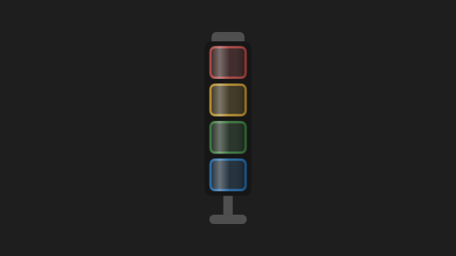
| 属性 | 类型 / 枚举 | 默认值 | 绑定 | 怎样使用 |
|---|---|---|---|---|
IsRedOn | Boolean | false | 默认单向 | 红灯：报警。 |
IsYellowOn | Boolean | false | 默认单向 | 黄灯：警告。 |
IsGreenOn | Boolean | false | 默认单向 | 绿灯：运行。 |
IsBlueOn | Boolean | false | 默认单向 | 蓝灯：通讯。 |
1.9 TrendChart
数据与设备卡片 · 查看源码 · 9 个公开依赖属性（含自定义基类）
统一时间趋势图，复用现有 ScottPlot 封装。
Series 接收 TrendSeries 集合；Xs 用升序 OADate，Ys 与之等长，NaN 表示缺测。使用 SetData / Append 通知刷新。FollowRange 与可见区间、游标时刻可双向绑定；所有曲线共用左侧纵轴，数字量按 0/1 显示。
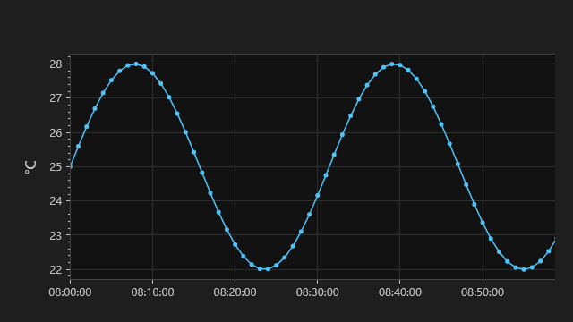
| 属性 | 类型 / 枚举 | 默认值 | 绑定 | 怎样使用 |
|---|---|---|---|---|
ShowXLines | Boolean | false | 默认双向 | 显示 X 基准线（两条竖线）；右上角 X 按钮开关。 |
ShowYLines | Boolean | false | 默认双向 | 显示 Y 基准线（两条横线）；右上角 Y 按钮开关。 |
Series | IEnumerable | null | 默认单向 | 要画的曲线（TrendSeries 的集合，ObservableCollection 增删会跟着变）。 |
RangeStart | DateTime? | null | 默认单向 | 整段的起点（数据曲线是查询的时间段，实时曲线是最近 N 分钟）。 |
RangeEnd | DateTime? | null | 默认单向 | 完整数据区间的起止时间；不等于用户当前缩放后的可见区间。 |
FollowRange | Boolean | true | 默认双向 | 横轴跟着整段走；用户缩放、平移、框选时自动变假（停在他看的地方），双击回到整段时变真。 |
VisibleStart | DateTime? | null | 默认双向 | 当前看到的时间段（每次重画后更新）。 |
VisibleEnd | DateTime? | null | 默认双向 | 当前画面可见时间范围的输出值；通常使用双向绑定读取。 |
CursorTime | DateTime? | null | 默认双向 | 鼠标对准的时刻（对准了采样点就是那个点的时刻）；鼠标不在绘图区为 null。 |
1.10 Wafer
数据与设备卡片 · 查看源码 · 6 个公开依赖属性（含自定义基类）
二维圆片，按晶圆账中的状态和片号显示。
Data 通常接 WaferModel，显示 LpSlot 和 State。IsDiskVisible 允许无片数据时仍画圆盘。RotationSpeed 是度/秒，超过 1 才转，不能直接当作设备 RPM。Label 虽已声明，当前二维模板仍显示 Data.LpSlot。
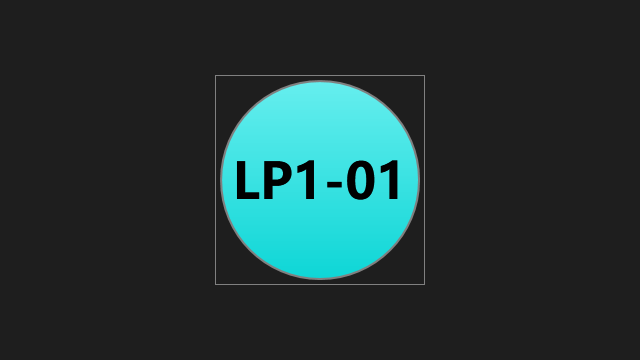
| 属性 | 类型 / 枚举 | 默认值 | 绑定 | 怎样使用 |
|---|---|---|---|---|
Data | Object | null | 默认单向 | 控件要显示的数据对象；晶圆控件通常接收 WaferModel。 |
IsDiskVisible | Boolean | false | 默认单向 | 无业务数据时是否仍显示 Wafer 图形。 |
FillColor | Brush | #FF808080 | 默认单向 | 圆盘填充画刷；有匹配的晶圆业务状态时优先使用状态色。 |
Label | String | 空字符串 | 默认单向 | 圆片文字覆盖值；三维 Disk 支持覆盖，二维 Wafer 当前模板仍显示 Data.LpSlot。 |
RotationSpeed | Double | 0 | 默认单向 | 显示旋转速度（度/秒），不能把设备 RPM 不经换算直接绑定。 |
RotateClockwise | Boolean | true | 默认单向 | 从上方观察时的旋转方向，true 为顺时针；RotationSpeed 仍使用度/秒。 |
1.11 AlarmBar
信号与状态 · 查看源码 · 0 个公开依赖属性（含自定义基类）
客户端当前报警的顶部摘要栏。
内部使用 AlarmBarViewModel / ClientAlarms；没有公开自定义依赖属性。装入应用共享资源后声明即可，报警清单由客户端状态提供。文档展示无报警态。
没有新增的公开依赖属性。可以使用 Width、Height、Margin、Visibility、DataContext 等继承的 WPF 属性；业务显示方式见上面的说明。
普通属性 ViewModel（AlarmBarViewModel，不是依赖属性）：报警栏 ViewModel。
1.12 BottomChamberInfoCard
数据与设备卡片 · 查看源码 · 12 个公开依赖属性（含自定义基类）
标题在底部的腔体信息卡片。
此版本使用字符串 State / IsOnline 等显示字段，与 ChamberInfoCard 的 StateText / StateTone 接口不同，替换控件时需核对属性表。
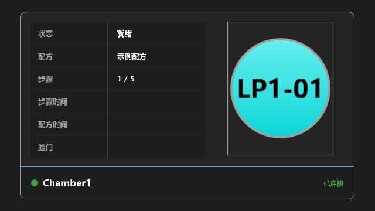
| 属性 | 类型 / 枚举 | 默认值 | 绑定 | 怎样使用 |
|---|---|---|---|---|
Title | String | 空字符串 | 默认单向 | 卡片标题；绑定模块显示名，不承担设备身份或指令路由。 |
StatusOn | Boolean | false | 默认单向 | 状态指示开关；true 显示点亮状态，false 显示未点亮状态。 |
IsOnline | String | 空字符串 | 默认单向 | 连接状态显示文本；注意本控件该属性的类型是字符串。 |
State | String | 空字符串 | 默认单向 | 显示状态；按本行类型绑定，字符串状态和 ProgressState 对象不能混用。 |
RecipeState | String | 空字符串 | 默认单向 | 配方执行状态的显示文本。 |
Recipe | String | 空字符串 | 默认单向 | 当前配方名的显示文本。 |
Step | String | 空字符串 | 默认单向 | 当前工艺步骤的显示文本。 |
StepTime | String | 空字符串 | 默认单向 | 当前步骤时间的显示值；查看本行类型决定传文本还是数值。 |
RecipeTime | String | 空字符串 | 默认单向 | 整份配方时间的显示值。 |
ShutterState | String | 空字符串 | 默认单向 | 腔门或挡板状态的显示文本。 |
Wafer | WaferModel | null | 默认单向 | 当前位置的晶圆显示数据；没有片时传 null，不创建后端晶圆账。 |
RotationSpeed | Double | 0 | 默认单向 | 显示旋转速度（度/秒），不能把设备 RPM 不经换算直接绑定。 |
1.13 Buffer
数据与设备卡片 · 查看源码 · 8 个公开依赖属性（含自定义基类）
带标题和模块状态的缓存架组合卡片。
FirstSlot 表示物理起始槽号，SlotCount 来自装机，Wafers 按 Slot 放片。WaferCount 是只读输出。需要纯场景时选 BufferView，共享视口时选 BufferVisual3D。
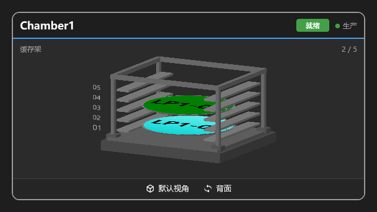
| 属性 | 类型 / 枚举 | 默认值 | 绑定 | 怎样使用 |
|---|---|---|---|---|
Title | String | Buffer | 默认单向 | 卡片标题；绑定模块显示名，不承担设备身份或指令路由。 |
StateText | String | 空字符串 | 默认单向 | 状态文案由调用方提供，空字符串不显示徽标。 |
StateTone | ModuleStateToneInactive / Busy / Ready / Warning / Alarm | Inactive | 默认单向 | 状态色调；使用属性类型对应的枚举值，不直接传后端整数。 |
IsProduction | Boolean | false | 默认单向 | 生产模式（交给调度用）亮，维护灭 |
FirstSlot | Int32 | 1 | 默认单向 | 最底层的物理槽号；用于显示同一个架子的某个槽段，默认 1。 |
SlotCount | Int32 | 10 | 默认单向 | 实际槽数，默认 10；0 显示空视图。固定槽距，增减槽数后自动重新取景。 |
Wafers | IEnumerable | null | 默认单向 | WaferModel 集合，按物理 Slot 摆片、State 上色；支持集合增删、替换及单片 Slot/State 变化。 范围外的片不显示，同槽重复只显示第一片；不按 LoadPort 的来源槽号推断位置。 集合与模型应像其它 WPF 绑定数据一样在 UI 线程更新。 |
WaferCount | Int32 | 0 | 只读 | 当前显示的片数，只读，按实际有效占用槽统计。 |
1.14 BufferView
3D 组合视图 · 查看源码 · 4 个公开依赖属性（含自定义基类）
自带视口和视角交互的缓存架。
使用与 BufferVisual3D 相同的槽位数据。WaferCount 为只读依赖属性，绑定输出不能从外部 SetValue。
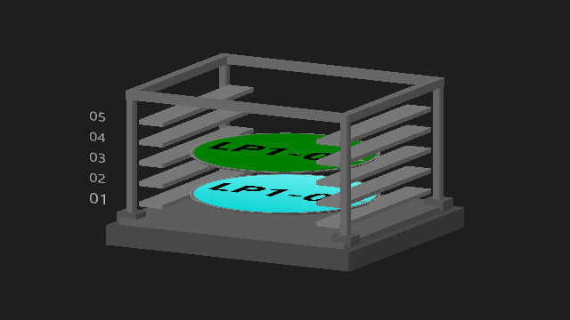
| 属性 | 类型 / 枚举 | 默认值 | 绑定 | 怎样使用 |
|---|---|---|---|---|
FirstSlot | Int32 | 1 | 默认单向 | 最底层物理槽号；与 SlotCount 一起定义有效槽位范围。 |
SlotCount | Int32 | 10 | 默认单向 | 实际槽位数量，应来自装机或后端快照；文档演示值只是样例。 |
Wafers | IEnumerable | null | 默认单向 | 晶圆集合，按 WaferModel.Slot 放入槽位；集合变更监听策略见控件使用说明。 |
WaferCount | Int32 | 0 | 只读 | 当前有效占用槽数，只读；可作为其他控件绑定的来源。 |
1.15 ChamberInfoCard
数据与设备卡片 · 查看源码 · 15 个公开依赖属性（含自定义基类）
腔体状态信息卡片，标题与圆片分开显示。
状态文字和色调分别绑定；Wafer 接当前位置晶圆数据，Recipe / Step / 时间仅显示。Number 是站点编号，不会自行定位后端模块。
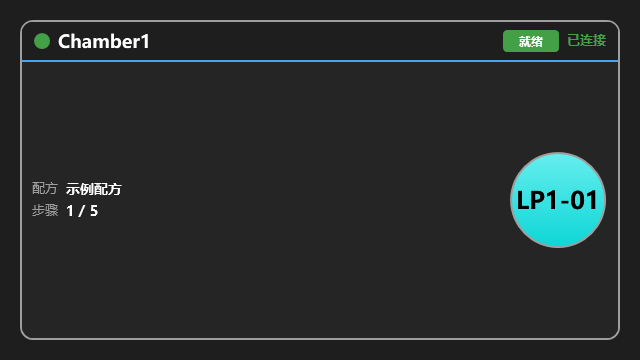
| 属性 | 类型 / 枚举 | 默认值 | 绑定 | 怎样使用 |
|---|---|---|---|---|
Title | String | 空字符串 | 默认单向 | 卡片标题；绑定模块显示名，不承担设备身份或指令路由。 |
Number | String | 空字符串 | 默认单向 | 站点号角标（机械手示教点表里的设备站点号）；空就不显示。 |
DiskSize | Double | 100 | 默认单向 | 圆片直径：跟调度图里机械手叉上的片一样大，由页面按机械手的显示尺寸给。 |
StatusOn | Boolean | false | 默认单向 | 状态指示开关；true 显示点亮状态，false 显示未点亮状态。 |
IsOnline | String | 空字符串 | 默认单向 | 连接状态显示文本；注意本控件该属性的类型是字符串。 |
StateText | String | 空字符串 | 默认单向 | 腔体状态文字，标题行右侧缩小版状态徽标显示；空就不显示徽标。 |
StateTone | ModuleStateToneInactive / Busy / Ready / Warning / Alarm | Inactive | 默认单向 | 腔体状态色调（徽标底色）。 |
RecipeState | String | 空字符串 | 默认单向 | 配方执行状态的显示文本。 |
Recipe | String | 空字符串 | 默认单向 | 当前配方名的显示文本。 |
Step | String | 空字符串 | 默认单向 | 当前工艺步骤的显示文本。 |
StepTime | String | 空字符串 | 默认单向 | 当前步骤时间的显示值；查看本行类型决定传文本还是数值。 |
RecipeTime | String | 空字符串 | 默认单向 | 整份配方时间的显示值。 |
ShutterState | String | 空字符串 | 默认单向 | 腔门或挡板状态的显示文本。 |
Wafer | WaferModel | null | 默认单向 | 当前位置的晶圆显示数据；没有片时传 null，不创建后端晶圆账。 |
RotationSpeed | Double | 0 | 默认单向 | 显示旋转速度（度/秒），不能把设备 RPM 不经换算直接绑定。 |
1.16 ChamberView（35021 项目）
项目控件 · 查看源码 · 4 个公开依赖属性（含自定义基类）
35021 项目的腔体显示控件，消费 ToolBuilder 布局。
Snapshot 给完整实际设备清单，Layout 只覆盖位置和挂载。VisualCatalog 使项目自有外观优先、平台外观补齐。它属于项目 Presentation，不是平台通用控件。
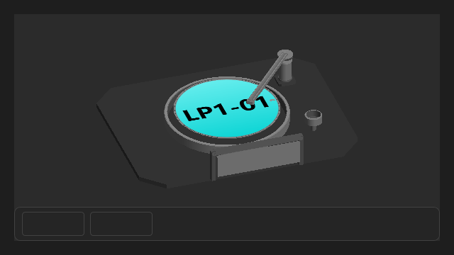
| 属性 | 类型 / 枚举 | 默认值 | 绑定 | 怎样使用 |
|---|---|---|---|---|
Snapshot | ChamberDeviceDataDto | null | 默认单向 | 完整设备快照；设备组成由实际快照决定，布局不能添加不存在的硬件。 |
Layout | ChamberLayoutModel | null | 默认单向 | ToolBuilder 导出的显示布局；仅描述位置、大小与父子挂载关系。 |
VisualCatalog | ChamberVisualCatalog | null | 默认单向 | 项目控件提供者目录；已实现的项目控件优先，缺少的种类使用平台外观。 |
Wafer | Object | null | 默认单向 | 当前位置的晶圆显示数据；没有片时传 null，不创建后端晶圆账。 |
1.17 DispatchMap
数据与设备卡片 · 查看源码 · 5 个公开依赖属性（含自定义基类）
按机械手站点表自动组合的调度图。
RobotName 是模块名和订阅 token；给值会建立内部显示模型、订阅推送。静态文档展示离线空态，不伪造站点。CardWidth / CardHeight / RobotHeight 调整显示，DiskSize 是只读计算结果。
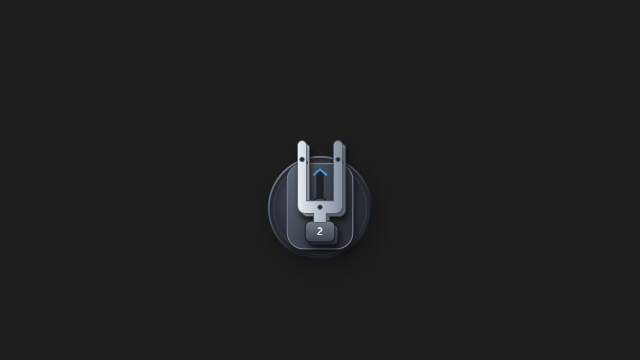
| 属性 | 类型 / 枚举 | 默认值 | 绑定 | 怎样使用 |
|---|---|---|---|---|
RobotName | String | 空字符串 | 默认单向 | 机械手模块名（如 Robot1），也是它状态推送的 token；换了就重建 ViewModel、重订推送。 |
CardWidth | Double | 280 | 默认单向 | 站点卡片宽（默认 280，近方形）。 |
CardHeight | Double | 233 | 默认单向 | 站点卡片高（默认 233）。 |
RobotHeight | Double | 360 | 默认单向 | 机械手画多高（默认 360）；卡片上的圆片跟着它算，跟叉上的片一样大。 |
DiskSize | Double | 75.6 | 只读 | 卡片上圆片的直径 = 机械手叉上的片按 RobotHeight 缩放后的大小（只读，跟着 RobotHeight 变）。 |
1.18 FluidPipe
数据与设备卡片 · 查看源码 · 15 个公开依赖属性（含自定义基类）
二维布局中的三维透明管路控件，自带视口。
Points 使用画布坐标；管径、管壁和圆角也使用画布单位，内部按 0.01 换算到三维场景。IsFilled 是液芯显示，IsFlowing 是流动显示，IsAnimationEnabled 只暂停动画。拓扑必须由布局提供，控件不能从阀门数量猜出管路。
| 属性 | 类型 / 枚举 | 默认值 | 绑定 | 怎样使用 |
|---|---|---|---|---|
Points | PointCollection | null | 默认单向 | 管中心的二维路径点，X 向右、Y 向下。不设置时按控件大小显示直管。 |
Orientation | OrientationHorizontal / Vertical | Horizontal | 默认单向 | 默认直管的方向。设置 Points 后按路径绘制。 |
PipeThickness | Double | 14 | 默认单向 | 管外直径，使用 WPF 逻辑像素。 |
WallThickness | Double | 2 | 默认单向 | 管壁厚度，使用 WPF 逻辑像素。 |
BendRadius | Double | 24 | 默认单向 | 转弯圆角半径，使用路径坐标单位。 |
FluidCoreRatio | Double | 0.58 | 默认单向 | 液芯半径占内腔半径的比例，范围为 (0, 1]。 |
WallOpacity | Double | 0.18 | 默认单向 | 管壁不透明度强度，范围为 [0, 1]，越小越透明。 |
WallColor | Color | #FFB4B4B4 | 默认单向 | 管壁颜色。 |
FluidColor | Color | #FFC4C4C4 | 默认单向 | 液体底色，与 FlowColor 按 1:3 混合。 |
FlowColor | Color | #FF52D4EF | 默认单向 | 水流主色和移动水纹的颜色。 |
IsFilled | Boolean | true | 默认单向 | 是否有液体。false 时不显示液芯。 |
IsFlowing | Boolean | false | 默认单向 | 是否流动。false 时清除液芯和水纹，只显示管壁。 |
FlowSpeed | Double | 55 | 默认单向 | 水纹每秒移动的路径长度，0 时暂停；不是设备实测流量。 |
ReverseFlow | Boolean | false | 默认单向 | 是否沿路径反向流动。 |
IsAnimationEnabled | Boolean | true | 默认单向 | 动画开关。false 时冻结水纹，保留液芯和流动状态。 |
1.19 Foup
数据与设备卡片 · 查看源码 · 0 个公开依赖属性（含自定义基类）
FOUP 载具外形示意。
当前没有自定义依赖属性，使用 Width / Height 等 WPF 布局属性控制大小。它不是按真实槽位数据装配的 CarrierVisual3D。
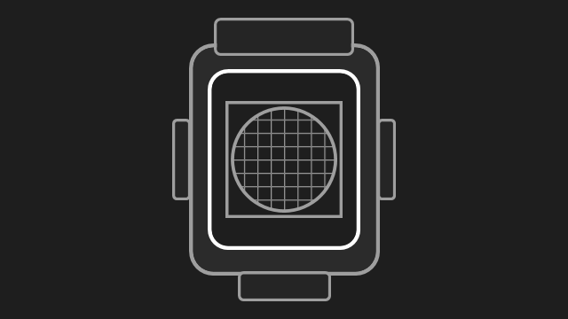
没有新增的公开依赖属性。可以使用 Width、Height、Margin、Visibility、DataContext 等继承的 WPF 属性；业务显示方式见上面的说明。
1.20 LoadPortInfoCard
数据与设备卡片 · 查看源码 · 15 个公开依赖属性（含自定义基类）
载具、片数和模块状态的 LoadPort 信息卡片。
SlotCount / Wafers 提供实际槽位数据。Present、Placed、Alarm、AutoMode 与通信状态分别绑定；缺少某项反馈不能用别的状态代替。
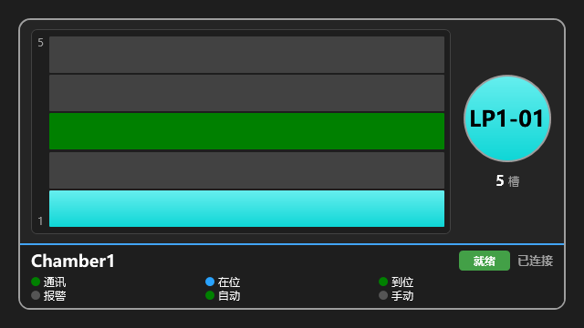
| 属性 | 类型 / 枚举 | 默认值 | 绑定 | 怎样使用 |
|---|---|---|---|---|
Title | String | 空字符串 | 默认单向 | 卡片标题；绑定模块显示名，不承担设备身份或指令路由。 |
Number | String | 空字符串 | 默认单向 | 站点号角标（机械手示教点表里的设备站点号）；空就不显示。 |
DiskSize | Double | 100 | 默认单向 | 圆片直径：跟调度图里机械手叉上的片一样大，由页面按机械手的显示尺寸给。 |
IsOnline | String | 空字符串 | 默认单向 | 底栏 Online 文案。 |
StateText | String | 空字符串 | 默认单向 | LoadPort 状态文字，标题行右侧缩小版状态徽标显示；空就不显示徽标。 |
StateTone | ModuleStateToneInactive / Busy / Ready / Warning / Alarm | Inactive | 默认单向 | LoadPort 状态色调（徽标底色）。 |
IsConnected | Boolean | false | 默认单向 | 通讯灯：驱动串口是否连上。 |
Present | Boolean | false | 默认单向 | 在位灯：FOUP 是否放上。 |
Placed | Boolean | false | 默认单向 | 到位灯：FOUP 是否夹紧放平。 |
Alarm | Boolean | false | 默认单向 | 报警灯：设备硬件报警。 |
AutoMode | Boolean | true | 默认单向 | AUTO / MANUAL 灯：true=Auto，false=Manual。 |
Wafers | IEnumerable | null | 默认单向 | 花篮里的片（有片的槽位）；槽数由 SlotCount 决定。 |
SlotCount | Int32 | 0 | 默认单向 | 花篮槽数（machine.xml 的 LoadPort.SlotCount）；0 表示还不知道、不画槽。 |
Wafer | WaferModel | null | 默认单向 | 右侧 disk 圆片上的片（与 ChamberCard 同字段）。 |
RotationSpeed | Double | 0 | 默认单向 | 显示旋转速度（度/秒），不能把设备 RPM 不经换算直接绑定。 |
1.21 LogBar
信号与状态 · 查看源码 · 0 个公开依赖属性（含自定义基类）
客户端日志摘要栏。
内部持有 LogViewModel；没有公开自定义依赖属性。显示数据来自客户端日志链路，文档中不连接真实后台。
没有新增的公开依赖属性。可以使用 Width、Height、Margin、Visibility、DataContext 等继承的 WPF 属性；业务显示方式见上面的说明。
普通属性 ViewModel（LogViewModel，不是依赖属性）：日志 ViewModel（消费者）。
1.22 ModuleChip
信号与状态 · 查看源码 · 4 个公开依赖属性（含自定义基类）
一个模块名和状态圆点，边框表示生产/维护。
Text、Tone、IsProduction 独立提供。HasMode=false 不画生产/维护边框，适用于不区分此模式的模块。
| 属性 | 类型 / 枚举 | 默认值 | 绑定 | 怎样使用 |
|---|---|---|---|---|
Text | String | 空字符串 | 默认单向 | 框里的字（模块名，machine.xml 原样） |
Tone | ModuleStateToneInactive / Busy / Ready / Warning / Alarm | Inactive | 默认单向 | 状态色调：就绪圆点绿、报警红，其他灰 |
IsProduction | Boolean | false | 默认单向 | 生产模式：边框亮；维护（或不知道）边框灭 |
HasMode | Boolean | true | 默认单向 | 分不分生产 / 维护：不分的（供液）不画边框 |
1.23 ModuleStateBadge
信号与状态 · 查看源码 · 3 个公开依赖属性（含自定义基类）
模块状态文字徽章。
Text 给文字、Tone 给色调，IsCompact 控制紧凑外观；它与模块服务没有耦合。
| 属性 | 类型 / 枚举 | 默认值 | 绑定 | 怎样使用 |
|---|---|---|---|---|
Text | String | 空字符串 | 默认单向 | 状态字（显示模型的 StateText，已按当前语言翻好）；空就不显示。 |
Tone | ModuleStateToneInactive / Busy / Ready / Warning / Alarm | Inactive | 默认单向 | 色调（显示模型的 StateTone）。 |
IsCompact | Boolean | false | 默认单向 | 缩小版：小卡片标题行里用，矮一截、字小、宽度随字。 |
1.24 ModuleStatusBar
信号与状态 · 查看源码 · 0 个公开依赖属性（含自定义基类）
主界面顶部的模块状态行。
当前控件内部创建 ModuleStatusBarViewModel 并订阅整机状态；没有公开自定义依赖属性。离线时没有真实模块列表，文档画面使用明确的样例数据。
没有新增的公开依赖属性。可以使用 Width、Height、Margin、Visibility、DataContext 等继承的 WPF 属性；业务显示方式见上面的说明。
普通属性 ViewModel（ModuleStatusBarViewModel，不是依赖属性）：模块行 ViewModel
1.25 ProgressOverlay
信号与状态 · 查看源码 · 4 个公开依赖属性（含自定义基类）
覆盖当前页面的进度与取消层。
State 接 ProgressState；VM 使用 RunAsync 执行业务任务，并更新进度。ShowDelay 默认 500ms，快速任务不弹；Text 给语言包提示，IsIndeterminate=true 表示不知道进度。放在根 Grid 最后一层覆盖内容。
| 属性 | 类型 / 枚举 | 默认值 | 绑定 | 怎样使用 |
|---|---|---|---|---|
State | ProgressState | null | 默认单向 | 绑 VM 上的 ProgressState：开没开、进度、取消都从它来 |
Text | String | 空字符串 | 默认单向 | 圆环下面那行字（页面上绑语言包，如 {DynamicResource datachart.exporting}） |
IsIndeterminate | Boolean | false | 默认单向 | 不知道进度（查询）：圆环一直转，中间不写百分比 |
ShowDelay | Int32 | 500 | 默认单向 | 开始以后过多少毫秒还没完才弹出来（默认 500）：放大、拖动时的快查询不闪 |
1.26 Robot
数据与设备卡片 · 查看源码 · 7 个公开依赖属性（含自定义基类）
二维机械手，直接绑定各手臂数据。
Arms 接 RobotArmModel 集合，每只手臂独立 Extension（0~1）、Heading 和 Wafer。Rotation 是 RobotDirection 枚举，仅接受 North / East / South / West；Travel 是平移。控件执行先收臂、再转向/平移、再伸出的视觉顺序，不发送设备运动指令。
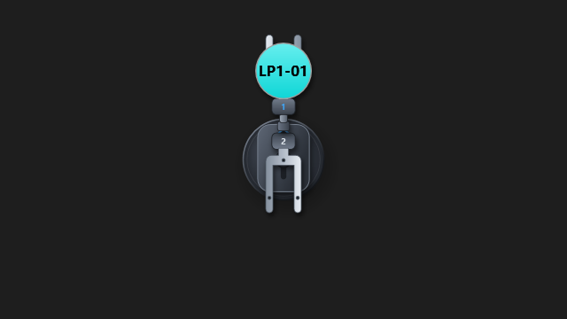
| 属性 | 类型 / 枚举 | 默认值 | 绑定 | 怎样使用 |
|---|---|---|---|---|
ArmType继承自 RobotViewBase | RobotArmTypeLinear / FrogLeg | Linear | 默认单向 | 机械手结构枚举；选择直伸或蛙式，运动姿态仍从各手臂数据给入。 |
Rotation继承自 RobotViewBase | RobotDirectionNorth / East / South / West | North | 默认单向 | 转台目标朝向（俯视，屏幕上方为北）：North 0°、East 90°、South 180°、West 270°，只接受这四个方向；按最短路径转过去。 |
Travel继承自 RobotViewBase | Double | 0 | 默认单向 | 水平平移目标：机械手中心相对控件中心向右移多少，负数向左；机械手可以移出控件范围。 按机械手设计尺寸 400×400 计，跟机械手一起按短边等比缩放：短边 400 时就是像素，短边 800 时实际移动 2 倍。 |
ExtendedReach继承自 RobotViewBase | Double | 150 | 默认单向 | 伸出行程：手臂完全伸出（Extension = 1）时片心离转台中心多远，按机械手设计尺寸 400×400 计，跟机械手一起等比缩放。 各机台按自己的臂展配；形状不变，只是伸得远近不同。收回到底固定为 24。 |
ArmCount继承自 RobotViewBase | Int32 | 2 | 默认单向 | 手指（手臂）数量，1~4：控件画出 1..ArmCount 号手臂，Arms 里没有数据的手臂按空手收回显示。 |
Arms继承自 RobotViewBase | IEnumerable | null | 默认单向 | 手臂数据（RobotArmModel），按 Arm 号对应 1..ArmCount：超出 ArmCount 的忽略，同号取第一个； 集合增删与每只手臂的属性变化都会刷新。 |
IsAnimationEnabled继承自 RobotViewBase | Boolean | true | 默认单向 | 是否播放运动动画；false 时姿态直接跳到目标（设计器、截图用）。 |
1.27 Robot3D
3D 组合视图 · 查看源码 · 8 个公开依赖属性（含自定义基类）
自带相机、灯光和视角操作的三维机械手。
继承 RobotViewBase，与二维 Robot 共用 Arms、Rotation、Travel 等输入。可拖动旋转、滚轮缩放；ResetView / ShowTopView 是普通方法。只显示，不订阅或发送设备动作。
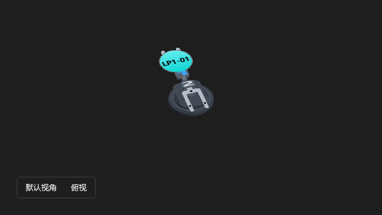
| 属性 | 类型 / 枚举 | 默认值 | 绑定 | 怎样使用 |
|---|---|---|---|---|
ShowViewToolbar | Boolean | true | 默认单向 | 是否显示视角按钮；不改变设备状态。 |
ArmType继承自 RobotViewBase | RobotArmTypeLinear / FrogLeg | Linear | 默认单向 | 机械手结构枚举；选择直伸或蛙式，运动姿态仍从各手臂数据给入。 |
Rotation继承自 RobotViewBase | RobotDirectionNorth / East / South / West | North | 默认单向 | 转台目标朝向（俯视，屏幕上方为北）：North 0°、East 90°、South 180°、West 270°，只接受这四个方向；按最短路径转过去。 |
Travel继承自 RobotViewBase | Double | 0 | 默认单向 | 水平平移目标：机械手中心相对控件中心向右移多少，负数向左；机械手可以移出控件范围。 按机械手设计尺寸 400×400 计，跟机械手一起按短边等比缩放：短边 400 时就是像素，短边 800 时实际移动 2 倍。 |
ExtendedReach继承自 RobotViewBase | Double | 150 | 默认单向 | 伸出行程：手臂完全伸出（Extension = 1）时片心离转台中心多远，按机械手设计尺寸 400×400 计，跟机械手一起等比缩放。 各机台按自己的臂展配；形状不变，只是伸得远近不同。收回到底固定为 24。 |
ArmCount继承自 RobotViewBase | Int32 | 2 | 默认单向 | 手指（手臂）数量，1~4：控件画出 1..ArmCount 号手臂，Arms 里没有数据的手臂按空手收回显示。 |
Arms继承自 RobotViewBase | IEnumerable | null | 默认单向 | 手臂数据（RobotArmModel），按 Arm 号对应 1..ArmCount：超出 ArmCount 的忽略，同号取第一个； 集合增删与每只手臂的属性变化都会刷新。 |
IsAnimationEnabled继承自 RobotViewBase | Boolean | true | 默认单向 | 是否播放运动动画；false 时姿态直接跳到目标（设计器、截图用）。 |
1.28 SampleUserControl
数据与设备卡片 · 查看源码 · 0 个公开依赖属性（含自定义基类）
控件模板示例。
当前只初始化模板，没有业务依赖属性，也不是已实现设备控件。新业务控件应根据实际职责命名。
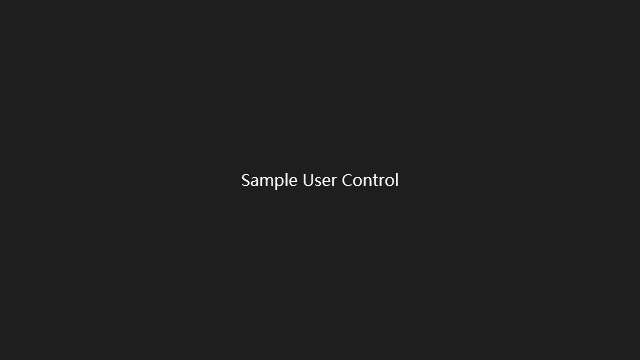
没有新增的公开依赖属性。可以使用 Width、Height、Margin、Visibility、DataContext 等继承的 WPF 属性；业务显示方式见上面的说明。
1.29 StationCard
数据与设备卡片 · 查看源码 · 1 个公开依赖属性（含自定义基类）
调度图按站点类型选择的卡片包装。
DataContext 必须是 RobotStationModel。它据站点类型选择 LoadPortInfoCard 或 ChamberInfoCard；DiskSize 统一片的显示尺寸。
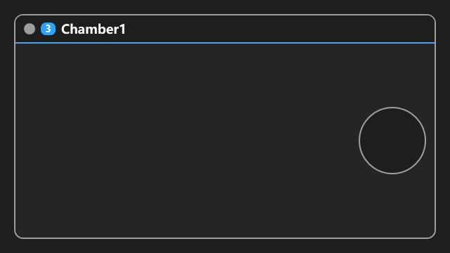
| 属性 | 类型 / 枚举 | 默认值 | 绑定 | 怎样使用 |
|---|---|---|---|---|
DiskSize | Double | 100 | 默认单向 | 卡片上圆片的直径：跟调度图里机械手叉上的片一样大，由调度图按机械手的显示尺寸给。 |
1.30 ArmVisual3D
3D 组件 · 查看源码 · 11 个公开依赖属性（含自定义基类）
摆臂几何件，零角度沿 +X，局部 Y 向上。
Angle 使用度。Length 是回转中心到末端安装块中心的长度。Attachments 是普通 Visual3DCollection，不是依赖属性；喷嘴管路挂入后随摆角转动，喷液状态仍独立。Lift 也必须单独组合。
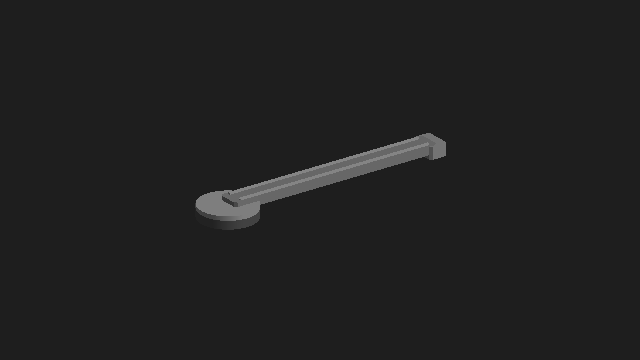
| 属性 | 类型 / 枚举 | 默认值 | 绑定 | 怎样使用 |
|---|---|---|---|---|
Angle | Double | 0 | 默认单向 | 当前摆角，单位为度。正角度使臂尖从 +X 转向 -Z。 |
Length | Double | 2.2 | 默认单向 | 回转中心到末端安装块中心的距离，与场景使用同一长度单位。 |
Width | Double | 0.23 | 默认单向 | 控制外观尺寸；三维件使用场景示意单位，不能当成设备毫米值或运动指令。 |
Thickness | Double | 0.085 | 默认单向 | 控制外观尺寸；三维件使用场景示意单位，不能当成设备毫米值或运动指令。 |
PivotRadius | Double | 0.285 | 默认单向 | 控制外观尺寸；三维件使用场景示意单位，不能当成设备毫米值或运动指令。 |
IsMoving继承自 HardwareVisual3D | Boolean | false | 默认单向 | 绑定设备动作反馈；为 true 时自动高亮，不依赖鼠标选中。 |
IsError继承自 HardwareVisual3D | Boolean | false | 默认单向 | 绑定设备故障反馈（如轴驱动器报错）；为 true 时整块画成报警色，盖过高亮。 |
IsSelected继承自 HardwareVisual3D | Boolean | false | 默认单向 | 由外部选择逻辑设置，与 IsMoving 相互独立。 |
BodyColor继承自 HardwareVisual3D | Color | #FF686868 | 默认单向 | 外观颜色；Color 类型用颜色值，Brush 类型用画刷，两者不能直接互换。 |
HighlightColor继承自 HardwareVisual3D | Color | #FF42A5F5 | 默认单向 | 外观颜色；Color 类型用颜色值，Brush 类型用画刷，两者不能直接互换。 |
HighlightStrength继承自 HardwareVisual3D | Double | 0.42 | 默认单向 | 主题色混入比例（0～1），保留金属灰的明暗层次。 |
普通属性 Attachments（Visual3DCollection，不是依赖属性）：随摆角和外部安装变换一起运动的附件，如 DIW/SC1 管路；附件动作状态独立。
1.31 BowlVisual3D
3D 组件 · 查看源码 · 10 个公开依赖属性（含自定义基类）
独立升降的 Bowl 薄壁圆环。
IsRaised 表示上/下到位；IsUnknown=true 时显示未知位置并变红。HeightLevel=1/2/3 是外观高度规格，不是 Bowl 数量或升降挡位。35021 每腔当前只有一个 Bowl1，不因控件支持高度等级而增加硬件。
| 属性 | 类型 / 枚举 | 默认值 | 绑定 | 怎样使用 |
|---|---|---|---|---|
HeightLevel | Int32 | 1 | 默认单向 | 外观高度等级：1 为原有低矮造型，2、3 依次加高；不是升降挡位。 |
Radius | Double | 1.59 | 默认单向 | 外半径，与装配使用同一长度单位；内径随半径保持薄壁比例。 |
IsRaised | Boolean | false | 默认单向 | 升降反馈，true 上位、false 下位；底边保持在安装面，不改变 HeightLevel。 |
IsUnknown | Boolean | false | 默认单向 | 位置未知：上沿画到行程中间、整个 Bowl 变红，到位（变回 false）后红色撤掉、再走到 IsRaised 那一头。 |
IsMoving继承自 HardwareVisual3D | Boolean | false | 默认单向 | 绑定设备动作反馈；为 true 时自动高亮，不依赖鼠标选中。 |
IsError继承自 HardwareVisual3D | Boolean | false | 默认单向 | 绑定设备故障反馈（如轴驱动器报错）；为 true 时整块画成报警色，盖过高亮。 |
IsSelected继承自 HardwareVisual3D | Boolean | false | 默认单向 | 由外部选择逻辑设置，与 IsMoving 相互独立。 |
BodyColor继承自 HardwareVisual3D | Color | #FF686868 | 默认单向 | 外观颜色；Color 类型用颜色值，Brush 类型用画刷，两者不能直接互换。 |
HighlightColor继承自 HardwareVisual3D | Color | #FF42A5F5 | 默认单向 | 外观颜色；Color 类型用颜色值，Brush 类型用画刷，两者不能直接互换。 |
HighlightStrength继承自 HardwareVisual3D | Double | 0.42 | 默认单向 | 主题色混入比例（0～1），保留金属灰的明暗层次。 |
1.32 LiftVisual3D
3D 组件 · 查看源码 · 9 个公开依赖属性（含自定义基类）
独立气缸升降件，供摆臂等组件安装。
IsRaised / IsUnknown 来自反馈。MountHeight 是只读依赖属性，表示局部安装面当前 Y 高度，能用于附件平移绑定；不包含外部 Transform，不能重复叠加安装位移。
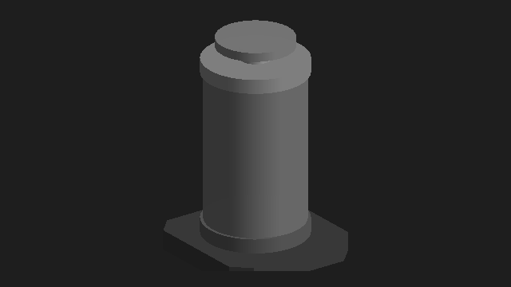
| 属性 | 类型 / 枚举 | 默认值 | 绑定 | 怎样使用 |
|---|---|---|---|---|
IsRaised | Boolean | false | 默认单向 | 绑定外部气缸状态：true 为上位，false 为下位。变化时自动播放升降过渡。 |
IsUnknown | Boolean | false | 默认单向 | 位置未知：画到行程中间、整个气缸变红，到位（变回 false）后红色撤掉、再走到 IsRaised 那一头。 |
MountHeight | Double | 0 | 只读 | 安装面当前的局部 Y 坐标（含动画），用于组装；不包含外部 Transform。 |
IsMoving继承自 HardwareVisual3D | Boolean | false | 默认单向 | 绑定设备动作反馈；为 true 时自动高亮，不依赖鼠标选中。 |
IsError继承自 HardwareVisual3D | Boolean | false | 默认单向 | 绑定设备故障反馈（如轴驱动器报错）；为 true 时整块画成报警色，盖过高亮。 |
IsSelected继承自 HardwareVisual3D | Boolean | false | 默认单向 | 由外部选择逻辑设置，与 IsMoving 相互独立。 |
BodyColor继承自 HardwareVisual3D | Color | #FF686868 | 默认单向 | 外观颜色；Color 类型用颜色值，Brush 类型用画刷，两者不能直接互换。 |
HighlightColor继承自 HardwareVisual3D | Color | #FF42A5F5 | 默认单向 | 外观颜色；Color 类型用颜色值，Brush 类型用画刷，两者不能直接互换。 |
HighlightStrength继承自 HardwareVisual3D | Double | 0.42 | 默认单向 | 主题色混入比例（0～1），保留金属灰的明暗层次。 |
1.33 TankVisual3D
3D 组件 · 查看源码 · 10 个公开依赖属性（含自定义基类）
纯槽体三维几何，透明圆筒和液体。
FillFraction 接 0~1 的显示比例；槽的离散液位必须由调用方换算，不能声称是实测百分比。IsAlarm 控制液体报警色。这里没有传感器灯和管路，它们应独立组合。
| 属性 | 类型 / 枚举 | 默认值 | 绑定 | 怎样使用 |
|---|---|---|---|---|
FillFraction | Double | 0 | 默认单向 | 液面高度占罐高的比例（0～1），0 不画液体 |
IsAlarm | Boolean | false | 默认单向 | 液体画成报警红 |
WallTransparency | Double | 0.72 | 默认单向 | 罐壁透明度（0～1） |
Azimuth | Double | 0 | 默认单向 | 相机的方位角（度），用来分前后两半罐壁 |
IsMoving继承自 HardwareVisual3D | Boolean | false | 默认单向 | 绑定设备动作反馈；为 true 时自动高亮，不依赖鼠标选中。 |
IsError继承自 HardwareVisual3D | Boolean | false | 默认单向 | 绑定设备故障反馈（如轴驱动器报错）；为 true 时整块画成报警色，盖过高亮。 |
IsSelected继承自 HardwareVisual3D | Boolean | false | 默认单向 | 由外部选择逻辑设置，与 IsMoving 相互独立。 |
BodyColor继承自 HardwareVisual3D | Color | #FF686868 | 默认单向 | 外观颜色；Color 类型用颜色值，Brush 类型用画刷，两者不能直接互换。 |
HighlightColor继承自 HardwareVisual3D | Color | #FF42A5F5 | 默认单向 | 外观颜色；Color 类型用颜色值，Brush 类型用画刷，两者不能直接互换。 |
HighlightStrength继承自 HardwareVisual3D | Double | 0.42 | 默认单向 | 主题色混入比例（0～1），保留金属灰的明暗层次。 |
1.34 FluidRouteVisual3D
3D 组件 · 查看源码 · 20 个公开依赖属性（含自定义基类）
共享视口中按任意三维路径绘制的透明管路。
Path 是 Point3DCollection，坐标使用场景单位。PipeRadius 是外半径，WallThickness 必须留出内腔。FlowSpeed 是场景单位/秒，ReverseFlow 改变动画方向。路径及端点由布局指定，液芯与流动显示单独控制。
| 属性 | 类型 / 枚举 | 默认值 | 绑定 | 怎样使用 |
|---|---|---|---|---|
Path | Point3DCollection | null | 默认单向 | 管中心的路径点，使用场景统一长度单位。替换集合或修改集合中的点都会重画管路。 |
PipeRadius | Double | 0.06 | 默认单向 | 管外半径，必须大于 0。 |
WallThickness | Double | 0.012 | 默认单向 | 管壁厚度。实际厚度最多取外半径的 90%，始终保留空腔。 |
FluidCoreRatio | Double | 0.58 | 默认单向 | 液芯半径与内腔半径的比值，范围为 (0, 1]。用于留出透明间隙，不表示真实充液率。 |
BendRadius | Double | 0.22 | 默认单向 | 弯头圆角半径。短管段会自动缩小圆角，0 表示保留折线。 |
WallOpacity | Double | 0.18 | 默认单向 | 管壁不透明度强度，范围为 [0, 1]，默认 0.18。内外壁按比例使用此值，0 时隐藏管壁。 |
WallColor | Color | #FFB4B4B4 | 默认单向 | 透明管壁的颜色，默认使用中性灰。 |
FluidColor | Color | #FFC4C4C4 | 默认单向 | 液体底色。液芯颜色由 FlowColor 和此颜色按 3:1 混合。 |
FlowColor | Color | #FF52D4EF | 默认单向 | 水流主色，同时用于液芯着色和移动水纹，默认青蓝色。 |
IsFilled | Boolean | true | 默认单向 | 管内是否有液体。只有 IsFilled 和 IsFlowing 都为 true 时显示液芯。 |
IsFlowing | Boolean | false | 默认单向 | 是否正在流动。false 时移除液芯和水纹，只显示透明管壁；不修改 IsFilled。 |
FlowSpeed | Double | 0.55 | 默认单向 | 动画速度，单位为场景长度/秒。0 表示暂停水纹；只是显示参数，不代表实测流量。 |
ReverseFlow | Boolean | false | 默认单向 | 是否反向流动。默认从 Path 的第一个点流向最后一个点。 |
IsAnimationEnabled | Boolean | true | 默认单向 | 是否播放动画。false 时冻结水纹，保留当前液芯和流动状态。 |
IsMoving继承自 HardwareVisual3D | Boolean | false | 默认单向 | 绑定设备动作反馈；为 true 时自动高亮，不依赖鼠标选中。 |
IsError继承自 HardwareVisual3D | Boolean | false | 默认单向 | 绑定设备故障反馈（如轴驱动器报错）；为 true 时整块画成报警色，盖过高亮。 |
IsSelected继承自 HardwareVisual3D | Boolean | false | 默认单向 | 由外部选择逻辑设置，与 IsMoving 相互独立。 |
BodyColor继承自 HardwareVisual3D | Color | #FF686868 | 默认单向 | 外观颜色；Color 类型用颜色值，Brush 类型用画刷，两者不能直接互换。 |
HighlightColor继承自 HardwareVisual3D | Color | #FF42A5F5 | 默认单向 | 外观颜色；Color 类型用颜色值，Brush 类型用画刷，两者不能直接互换。 |
HighlightStrength继承自 HardwareVisual3D | Double | 0.42 | 默认单向 | 主题色混入比例（0～1），保留金属灰的明暗层次。 |
1.35 BufferVisual3D
3D 组件 · 查看源码 · 10 个公开依赖属性（含自定义基类）
贯通缓存架几何件，供共享视口组合。
FirstSlot / SlotCount 决定物理槽范围，Wafers 按 Slot 放片。支持集合及单片槽位变化，在 UI 线程更新。WaferCount 为只读依赖属性。
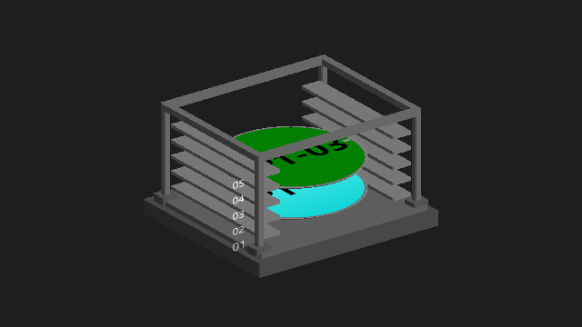
| 属性 | 类型 / 枚举 | 默认值 | 绑定 | 怎样使用 |
|---|---|---|---|---|
FirstSlot | Int32 | 1 | 默认单向 | 最底层的物理槽号，默认 1。 |
SlotCount | Int32 | 10 | 默认单向 | 实际槽数，默认 10；0 清空结构和晶圆。固定紧凑槽距。 |
Wafers | IEnumerable | null | 默认单向 | 按 WaferModel.Slot 摆片、State 上色。跟踪集合和单片槽位变化；在 UI 线程更新。 |
WaferCount | Int32 | 0 | 只读 | 当前有效占用槽数，只读。 |
IsMoving继承自 HardwareVisual3D | Boolean | false | 默认单向 | 绑定设备动作反馈；为 true 时自动高亮，不依赖鼠标选中。 |
IsError继承自 HardwareVisual3D | Boolean | false | 默认单向 | 绑定设备故障反馈（如轴驱动器报错）；为 true 时整块画成报警色，盖过高亮。 |
IsSelected继承自 HardwareVisual3D | Boolean | false | 默认单向 | 由外部选择逻辑设置，与 IsMoving 相互独立。 |
BodyColor继承自 HardwareVisual3D | Color | #FF686868 | 默认单向 | 外观颜色；Color 类型用颜色值，Brush 类型用画刷，两者不能直接互换。 |
HighlightColor继承自 HardwareVisual3D | Color | #FF42A5F5 | 默认单向 | 外观颜色；Color 类型用颜色值，Brush 类型用画刷，两者不能直接互换。 |
HighlightStrength继承自 HardwareVisual3D | Double | 0.42 | 默认单向 | 主题色混入比例（0～1），保留金属灰的明暗层次。 |
1.36 CarrierVisual3D
3D 组件 · 查看源码 · 9 个公开依赖属性（含自定义基类）
载具花篮几何，可与 LoadPort 共享视口。
SlotCount 必须给实际槽数，默认 0 不画。Wafers 按 WaferModel.Slot 放片；整个替换集合触发刷新。SelectedSlot 控制选中槽，SlotOf 是用于命中识别的普通方法。放入 LoadPortVisual3D.Attachments 可随托板移动。
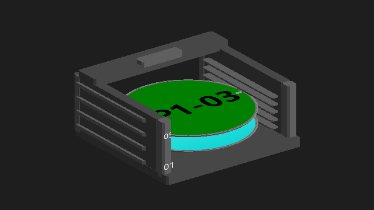
| 属性 | 类型 / 枚举 | 默认值 | 绑定 | 怎样使用 |
|---|---|---|---|---|
SlotCount | Int32 | 0 | 默认单向 | 槽数（machine.xml 里 LoadPort 的 SlotCount），花篮高度、槽齿、槽号都跟着它；0 = 还不知道，什么都不画。 |
Wafers | IEnumerable | null | 默认单向 | 花篮里的片（WaferModel，按 Slot 放进槽里，交给 DiskVisual3D 按 State 上色）；整个换掉才刷新。 |
SelectedSlot | Int32 | 0 | 默认单向 | 选中的槽（点了哪片），0 = 没选；那一片高亮。 |
IsMoving继承自 HardwareVisual3D | Boolean | false | 默认单向 | 绑定设备动作反馈；为 true 时自动高亮，不依赖鼠标选中。 |
IsError继承自 HardwareVisual3D | Boolean | false | 默认单向 | 绑定设备故障反馈（如轴驱动器报错）；为 true 时整块画成报警色，盖过高亮。 |
IsSelected继承自 HardwareVisual3D | Boolean | false | 默认单向 | 由外部选择逻辑设置，与 IsMoving 相互独立。 |
BodyColor继承自 HardwareVisual3D | Color | #FF484848 | 默认单向 | 外观颜色；Color 类型用颜色值，Brush 类型用画刷，两者不能直接互换。 |
HighlightColor继承自 HardwareVisual3D | Color | #FF42A5F5 | 默认单向 | 外观颜色；Color 类型用颜色值，Brush 类型用画刷，两者不能直接互换。 |
HighlightStrength继承自 HardwareVisual3D | Double | 0.42 | 默认单向 | 主题色混入比例（0～1），保留金属灰的明暗层次。 |
1.37 ChamberBaseVisual3D
3D 组件 · 查看源码 · 9 个公开依赖属性（含自定义基类）
腔体设备的公共安装底板。
Length / Width / Thickness 使用场景单位。Attachments 是普通集合，放入 Bowl、门、卡盘、摆臂总成等；共用父变换只用于安装位置，不改变各组件反馈。
| 属性 | 类型 / 枚举 | 默认值 | 绑定 | 怎样使用 |
|---|---|---|---|---|
Length | Double | 5.6 | 默认单向 | 底板沿 X 轴的长度。 |
Width | Double | 4.4 | 默认单向 | 底板沿 Z 轴的宽度。 |
Thickness | Double | 0.12 | 默认单向 | 板厚向 -Y 延伸；调整厚度不会顶起或移动上方硬件。 |
IsMoving继承自 HardwareVisual3D | Boolean | false | 默认单向 | 绑定设备动作反馈；为 true 时自动高亮，不依赖鼠标选中。 |
IsError继承自 HardwareVisual3D | Boolean | false | 默认单向 | 绑定设备故障反馈（如轴驱动器报错）；为 true 时整块画成报警色，盖过高亮。 |
IsSelected继承自 HardwareVisual3D | Boolean | false | 默认单向 | 由外部选择逻辑设置，与 IsMoving 相互独立。 |
BodyColor继承自 HardwareVisual3D | Color | #FF333333 | 默认单向 | 外观颜色；Color 类型用颜色值，Brush 类型用画刷，两者不能直接互换。 |
HighlightColor继承自 HardwareVisual3D | Color | #FF42A5F5 | 默认单向 | 外观颜色；Color 类型用颜色值，Brush 类型用画刷，两者不能直接互换。 |
HighlightStrength继承自 HardwareVisual3D | Double | 0.42 | 默认单向 | 主题色混入比例（0～1），保留金属灰的明暗层次。 |
普通属性 Attachments（Visual3DCollection，不是依赖属性）：安装硬件的集合；各子项 Transform 相对于底板上表面中心。
1.38 DiskVisual3D
3D 组件 · 查看源码 · 17 个公开依赖属性（含自定义基类）
三维圆盘与晶圆，复用二维 Wafer 的状态数据。
Data 接同一份 WaferModel。Label 非空时覆盖文字，二维 Wafer 当前不做这项覆盖。RotationSpeed 为度/秒；Radius、Thickness、SpindleHeight 为场景单位。与 Bowl、SpinMotor 数据分开绑定。
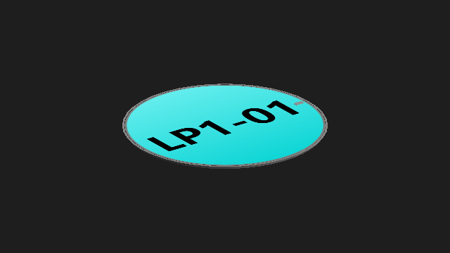
| 属性 | 类型 / 枚举 | 默认值 | 绑定 | 怎样使用 |
|---|---|---|---|---|
Data | Object | null | 默认单向 | 控件要显示的数据对象；晶圆控件通常接收 WaferModel。 |
IsDiskVisible | Boolean | false | 默认单向 | 没有晶圆数据时是否仍显示圆盘；有 Data 时按晶圆业务状态显示。 |
FillColor | Brush | #FF808080 | 默认单向 | 圆盘填充画刷；有匹配的晶圆业务状态时优先使用状态色。 |
BorderBrush | Brush | #FF808080 | 默认单向 | 圆盘边线的画刷；三维盘沿用二维的逻辑外观参数。 |
BorderThickness | Thickness | 1,1,1,1 | 默认单向 | 圆盘边线厚度，Thickness 类型；不是三维盘实体的 Thickness。 |
Label | String | 空字符串 | 默认单向 | 圆片文字覆盖值；三维 Disk 支持覆盖，二维 Wafer 当前模板仍显示 Data.LpSlot。 |
RotationSpeed | Double | 0 | 默认单向 | 显示旋转速度（度/秒），不能把设备 RPM 不经换算直接绑定。 |
RotateClockwise | Boolean | true | 默认单向 | 从上方观察时的旋转方向，true 为顺时针；RotationSpeed 仍使用度/秒。 |
Radius | Double | 1.32 | 默认单向 | 控制外观尺寸；三维件使用场景示意单位，不能当成设备毫米值或运动指令。 |
Thickness | Double | 0.045 | 默认单向 | 控制外观尺寸；三维件使用场景示意单位，不能当成设备毫米值或运动指令。 |
SpindleHeight | Double | 0 | 默认单向 | 盘下面主轴（旋转电机）露出来的长度：盘架高了就用一根轴撑到安装面上，免得悬空；0 = 不画主轴（默认）。 |
IsMoving继承自 HardwareVisual3D | Boolean | false | 默认单向 | 绑定设备动作反馈；为 true 时自动高亮，不依赖鼠标选中。 |
IsError继承自 HardwareVisual3D | Boolean | false | 默认单向 | 绑定设备故障反馈（如轴驱动器报错）；为 true 时整块画成报警色，盖过高亮。 |
IsSelected继承自 HardwareVisual3D | Boolean | false | 默认单向 | 由外部选择逻辑设置，与 IsMoving 相互独立。 |
BodyColor继承自 HardwareVisual3D | Color | #FF686868 | 默认单向 | 外观颜色；Color 类型用颜色值，Brush 类型用画刷，两者不能直接互换。 |
HighlightColor继承自 HardwareVisual3D | Color | #FF42A5F5 | 默认单向 | 外观颜色；Color 类型用颜色值，Brush 类型用画刷，两者不能直接互换。 |
HighlightStrength继承自 HardwareVisual3D | Double | 0.42 | 默认单向 | 主题色混入比例（0～1），保留金属灰的明暗层次。 |
1.39 DoorVisual3D
3D 组件 · 查看源码 · 10 个公开依赖属性（含自定义基类）
独立腔门外观，显示开、关和未知位置。
IsOpen 表示开到位；IsUnknown 优先显示行程中间和报警色。Width / Height 是几何尺寸，不是普通 WPF 布局尺寸。只显示，不发 DO。
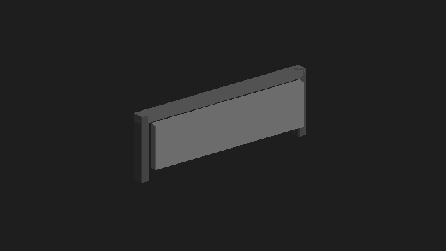
| 属性 | 类型 / 枚举 | 默认值 | 绑定 | 怎样使用 |
|---|---|---|---|---|
IsOpen | Boolean | false | 默认单向 | 门的开到位反馈；与 IsUnknown 分开提供，未知优先显示中间位置及报警色。 |
IsUnknown | Boolean | false | 默认单向 | 位置未知：门板画到行程中间、整个门变红，到位（变回 false）后红色撤掉、再走到 IsOpen 那一头。 |
Width | Double | 2.2 | 默认单向 | 门板宽度，使用装配的统一长度单位。 |
Height | Double | 0.58 | 默认单向 | 门板高度；动画行程由内部示意结构决定。 |
IsMoving继承自 HardwareVisual3D | Boolean | false | 默认单向 | 绑定设备动作反馈；为 true 时自动高亮，不依赖鼠标选中。 |
IsError继承自 HardwareVisual3D | Boolean | false | 默认单向 | 绑定设备故障反馈（如轴驱动器报错）；为 true 时整块画成报警色，盖过高亮。 |
IsSelected继承自 HardwareVisual3D | Boolean | false | 默认单向 | 由外部选择逻辑设置，与 IsMoving 相互独立。 |
BodyColor继承自 HardwareVisual3D | Color | #FF686868 | 默认单向 | 外观颜色；Color 类型用颜色值，Brush 类型用画刷，两者不能直接互换。 |
HighlightColor继承自 HardwareVisual3D | Color | #FF42A5F5 | 默认单向 | 外观颜色；Color 类型用颜色值，Brush 类型用画刷，两者不能直接互换。 |
HighlightStrength继承自 HardwareVisual3D | Double | 0.42 | 默认单向 | 主题色混入比例（0～1），保留金属灰的明暗层次。 |
1.40 FluidPipeVisual3D
3D 组件 · 查看源码 · 12 个公开依赖属性（含自定义基类）
沿摆臂布置的专用喷液管路，可显示喷口液柱。
Length 与摆臂长度配套。StreamLength=0 只保留管内显示；大于 0 显示喷口到接液面的液柱。一般挂进 ArmVisual3D.Attachments，喷液开关绑定独立喷嘴反馈。它与任意路径的 FluidRouteVisual3D 用途不同。
| 属性 | 类型 / 枚举 | 默认值 | 绑定 | 怎样使用 |
|---|---|---|---|---|
IsFlowing | Boolean | false | 默认单向 | 本路喷嘴是否出液。关闭时管内液芯、外部液柱和落点波纹全部消失。 |
IsAnimationEnabled | Boolean | true | 默认单向 | 暂停动画但保留出液状态。 |
Length | Double | 2.2 | 默认单向 | 沿 Arm 的局部 +X 方向布管，长度与场景使用同一单位。 |
StreamLength | Double | 0.55 | 默认单向 | 喷口到接液面的距离；0 时只有管内水流，不显示外部液柱和波纹。 |
FlowColor | Color | #FF52D4EF | 默认单向 | 管内水流、喷口液柱和落点波纹使用同一种颜色。 |
WallOpacity | Double | 0.18 | 默认单向 | 透明供液管的管壁不透明度强度。 |
IsMoving继承自 HardwareVisual3D | Boolean | false | 默认单向 | 绑定设备动作反馈；为 true 时自动高亮，不依赖鼠标选中。 |
IsError继承自 HardwareVisual3D | Boolean | false | 默认单向 | 绑定设备故障反馈（如轴驱动器报错）；为 true 时整块画成报警色，盖过高亮。 |
IsSelected继承自 HardwareVisual3D | Boolean | false | 默认单向 | 由外部选择逻辑设置，与 IsMoving 相互独立。 |
BodyColor继承自 HardwareVisual3D | Color | #FF686868 | 默认单向 | 外观颜色；Color 类型用颜色值，Brush 类型用画刷，两者不能直接互换。 |
HighlightColor继承自 HardwareVisual3D | Color | #FF42A5F5 | 默认单向 | 外观颜色；Color 类型用颜色值，Brush 类型用画刷，两者不能直接互换。 |
HighlightStrength继承自 HardwareVisual3D | Double | 0.42 | 默认单向 | 主题色混入比例（0～1），保留金属灰的明暗层次。 |
1.41 HomeCupVisual3D
3D 组件 · 查看源码 · 9 个公开依赖属性（含自定义基类）
摆臂 Home 位接液杯。
Radius / Height 控制杯的几何尺寸。IsDraining 只控制接液显示；是否真的有杯、装在哪、与哪条喷嘴对应，由装机与布局组合层决定。
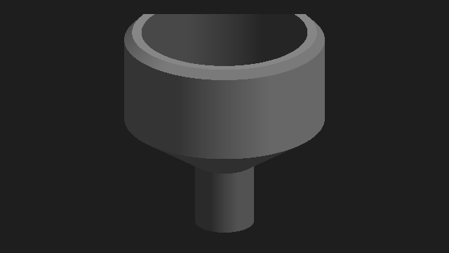
| 属性 | 类型 / 枚举 | 默认值 | 绑定 | 怎样使用 |
|---|---|---|---|---|
Radius | Double | 0.32 | 默认单向 | 杯口外半径，与装配使用相同长度单位。 |
Height | Double | 0.655 | 默认单向 | 排液口底面到杯口的总高度；杯口局部坐标为 (0, Height, 0)。 |
IsDraining | Boolean | false | 默认单向 | 可选的接液/排液状态反馈，true 自动高亮；液流由管子组件显示。 |
IsMoving继承自 HardwareVisual3D | Boolean | false | 默认单向 | 绑定设备动作反馈；为 true 时自动高亮，不依赖鼠标选中。 |
IsError继承自 HardwareVisual3D | Boolean | false | 默认单向 | 绑定设备故障反馈（如轴驱动器报错）；为 true 时整块画成报警色，盖过高亮。 |
IsSelected继承自 HardwareVisual3D | Boolean | false | 默认单向 | 由外部选择逻辑设置，与 IsMoving 相互独立。 |
BodyColor继承自 HardwareVisual3D | Color | #FF686868 | 默认单向 | 外观颜色；Color 类型用颜色值，Brush 类型用画刷，两者不能直接互换。 |
HighlightColor继承自 HardwareVisual3D | Color | #FF42A5F5 | 默认单向 | 外观颜色；Color 类型用颜色值，Brush 类型用画刷，两者不能直接互换。 |
HighlightStrength继承自 HardwareVisual3D | Double | 0.42 | 默认单向 | 主题色混入比例（0～1），保留金属灰的明暗层次。 |
1.42 LoadPortVisual3D
3D 组件 · 查看源码 · 12 个公开依赖属性（含自定义基类）
LoadPort 机身、托板和门的独立三维外观。
IsDocked 与门开、门未知分别绑定。IsPresent / IsPlaced / IsAutoMode 是面板显示信号。载具独立挂在 Attachments；该控件本身不拉服务数据。
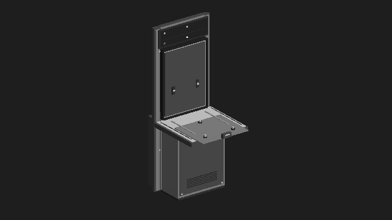
| 属性 | 类型 / 枚举 | 默认值 | 绑定 | 怎样使用 |
|---|---|---|---|---|
IsDocked | Boolean | false | 默认单向 | 托板推进去了（对接）：载具贴着门洞。false = 退出来，人可以放取载具。 |
IsDoorOpen | Boolean | false | 默认单向 | 门开到位（只在对接时才画得开：没推进去门一定是关着的）。 |
IsDoorUnknown | Boolean | false | 默认单向 | 门在半路（开到位、关到位都没亮）：门画在行程中间并一直高亮，到位了再走到那一头。 |
IsPresent | Boolean | false | 默认单向 | 面板上"在位"灯。 |
IsPlaced | Boolean | false | 默认单向 | 面板上"放置到位"灯。 |
IsAutoMode | Boolean | false | 默认单向 | 存取方式：true 亮 AUTO（绿），false 亮 MANUAL（黄）。 |
IsMoving继承自 HardwareVisual3D | Boolean | false | 默认单向 | 绑定设备动作反馈；为 true 时自动高亮，不依赖鼠标选中。 |
IsError继承自 HardwareVisual3D | Boolean | false | 默认单向 | 绑定设备故障反馈（如轴驱动器报错）；为 true 时整块画成报警色，盖过高亮。 |
IsSelected继承自 HardwareVisual3D | Boolean | false | 默认单向 | 由外部选择逻辑设置，与 IsMoving 相互独立。 |
BodyColor继承自 HardwareVisual3D | Color | #FF686868 | 默认单向 | 外观颜色；Color 类型用颜色值，Brush 类型用画刷，两者不能直接互换。 |
HighlightColor继承自 HardwareVisual3D | Color | #FF42A5F5 | 默认单向 | 外观颜色；Color 类型用颜色值，Brush 类型用画刷，两者不能直接互换。 |
HighlightStrength继承自 HardwareVisual3D | Double | 0.42 | 默认单向 | 主题色混入比例（0～1），保留金属灰的明暗层次。 |
普通属性 Attachments（Visual3DCollection，不是依赖属性）：装在托板上的东西（载具）；原点在托板定位销上，跟着对接前后走。
1.43 RobotVisual3D
3D 组件 · 查看源码 · 6 个公开依赖属性（含自定义基类）
共享视口中的机械手底层几何件。
它没有 Arms / Rotation 依赖属性；姿态通过普通 SetPose(ArmType, rotation, travel, ArmVisuals) 输入，运动解算由 RobotViewBase 提供。一般页面直接选 Robot3D；只有需要共享视口时才用这一层。
| 属性 | 类型 / 枚举 | 默认值 | 绑定 | 怎样使用 |
|---|---|---|---|---|
IsMoving继承自 HardwareVisual3D | Boolean | false | 默认单向 | 绑定设备动作反馈；为 true 时自动高亮，不依赖鼠标选中。 |
IsError继承自 HardwareVisual3D | Boolean | false | 默认单向 | 绑定设备故障反馈（如轴驱动器报错）；为 true 时整块画成报警色，盖过高亮。 |
IsSelected继承自 HardwareVisual3D | Boolean | false | 默认单向 | 由外部选择逻辑设置，与 IsMoving 相互独立。 |
BodyColor继承自 HardwareVisual3D | Color | #FF686868 | 默认单向 | 外观颜色；Color 类型用颜色值，Brush 类型用画刷，两者不能直接互换。 |
HighlightColor继承自 HardwareVisual3D | Color | #FF42A5F5 | 默认单向 | 外观颜色；Color 类型用颜色值，Brush 类型用画刷，两者不能直接互换。 |
HighlightStrength继承自 HardwareVisual3D | Double | 0.42 | 默认单向 | 主题色混入比例（0～1），保留金属灰的明暗层次。 |
1.44 ChamberScene
3D 组合视图 · 查看源码 · 2 个公开依赖属性（含自定义基类）
平台原有的腔体组合视图。
Devices 接 ChamberDeviceDataModel，先 Update(ChamberDeviceDataDto) 再显示；Wafer 独立来自晶圆账。平台固定装配只使用第一个 Bowl；项目按布局装配使用下方的 35021 ChamberView。
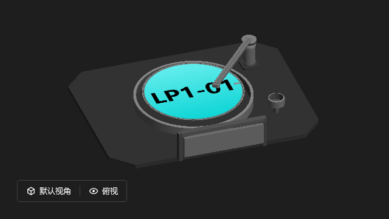
| 属性 | 类型 / 枚举 | 默认值 | 绑定 | 怎样使用 |
|---|---|---|---|---|
Devices | ChamberDeviceDataModel | null | 默认单向 | 设备显示模型（门、Bowl、旋转电机、摆臂）；组成变了（Revision）重搭三维图。 |
Wafer | Object | null | 默认单向 | 盘上的片（晶圆账，WaferModel）；null 显示空盘。 |
1.45 LoadPortScene
3D 组合视图 · 查看源码 · 8 个公开依赖属性（含自定义基类）
LoadPort + 载具的组合视图，自带相机和选片。
在位和到位都为真才放载具。给 SlotCount、Wafers 以及对接/门/面板状态即可。晶圆来自晶圆账，选片不会创建或删除晶圆。
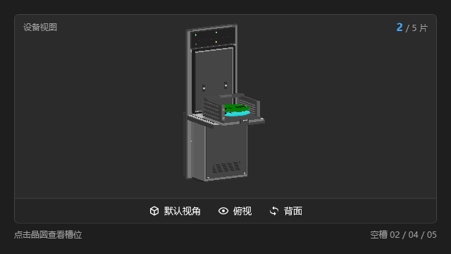
| 属性 | 类型 / 枚举 | 默认值 | 绑定 | 怎样使用 |
|---|---|---|---|---|
IsDocked | Boolean | false | 默认单向 | 托板推进去了（对接）。 |
IsDoorOpen | Boolean | false | 默认单向 | 门开到位。 |
IsDoorUnknown | Boolean | false | 默认单向 | 门在半路（开到位、关到位都没亮）。 |
IsPresent | Boolean? | null | 默认单向 | 在位反馈；null = 反馈不可用，灯灭。跟到位一起定装不装花篮。 |
IsPlaced | Boolean? | null | 默认单向 | 放置到位反馈；null = 反馈不可用，灯灭。跟在位一起定装不装花篮。 |
IsAutoMode | Boolean | false | 默认单向 | 存取方式 Auto（AUTO 灯亮）/ Manual（MANUAL 灯亮）。 |
SlotCount | Int32 | 0 | 默认单向 | 槽数（machine.xml 的 SlotCount）：花篮高度、槽号、片数、空槽都按它；0 = 还不知道，不装花篮。 |
Wafers | IEnumerable | null | 默认单向 | 花篮里的片（晶圆账，WaferModel 按 Slot 摆、按 State 上色）。 |
1.46 TankScene
3D 组合视图 · 查看源码 · 2 个公开依赖属性（含自定义基类）
带相机、液位文字及信号灯的槽组合视图。
Tank 接 TankModel。调用 TankModel.Update(TankDto) 更新；DTO 中没有配置的信号为 null，显示模型 IsPresent=false，不画该灯。要自由摆放每个 Sensor 时可使用 TankVisual3D + 独立 SignalLamp，而不是固定组合视图。
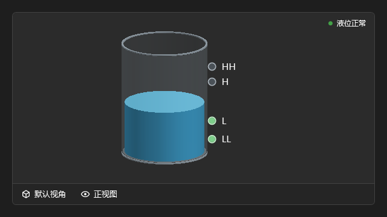
| 属性 | 类型 / 枚举 | 默认值 | 绑定 | 怎样使用 |
|---|---|---|---|---|
Tank | TankModel | null | 默认单向 | 槽的显示模型（后端 TankDto） |
WallTransparency | Double | 0.72 | 默认单向 | 罐壁透明度（0～1），外部按需要调 |
gRPC 通讯
一、总览
1.1 三种调用
| 调用 | 用在哪 | 契约返回 | 什么时候结束 |
|---|---|---|---|
| 一元调用 | 按钮、查询、读设置（绝大多数接口） | Task<RpcResponse> | 回一条就结束 |
| 服务端流：事件流 | 后端把变化推给界面，每台客户端开机开一条 | IAsyncEnumerable<EventMessage> | 不结束，断开才关 |
| 服务端流：导出 | 数据曲线导出 Excel | IAsyncEnumerable<RpcResponse> | 最后一段发完就结束 |
- 客户端开机建一个通道（GrpcClientFactory.cs），所有调用都走它，底下是一根 HTTP/2 连接。
- 每次调用在这根连接上新开一路（HTTP/2 stream）。返回类型只决定这一路回几条、什么时候关。
- 几路同时跑、互不排队：Load 在后端等结果的时候，事件流照样在推。
1.2 代码在哪
| 位置 | 工程 | 跟 gRPC 有关的 |
|---|---|---|
| 两边共用 | xyz.Shared | 服务契约 Services\I*Service.cs（21 个）、请求 RpcRequest、回包 RpcResponse、参数名 RpcParams、请求头名 RpcHeaders、推给界面的 DTO |
| xyz.Tools | 推送信封 EventMessage、黑板 RetainedBoard、退订凭据 Subscription | |
| 后端 | xyz.GrpcHost | 宿主 Program.cs、拦截器 ActionFilter.cs |
| xyz.Service | 各服务、BaseService、自动登记 ServiceExtensions、事件流 EventService、导出 DataChartService | |
| xyz.Common | 发推送 RemoteEventPublisher | |
| 客户端 | xyz.Client.Common | 通道和替身 GrpcClientFactory、收推送 RemoteEventConnection、分推送 RemoteEventSubscriber |
客户端只引用 xyz.Shared、xyz.Tools 和 gRPC 的包（xyz.Client.Common.csproj），碰不到后端代码，两边只按 xyz.Shared 的契约说话。
二、远程调用原理
2.1 契约就是 C# 接口
用的是 protobuf-net.Grpc 的 code-first：不写 .proto 文件，直接拿 xyz.Shared 里的 C# 接口当契约。接口标 [ServiceContract]，方法标 [OperationContract]，客户端和后端编译的是同一个接口。
- 请求地址由名字算出来：命名空间 + 接口名去掉开头的 I + 方法名去掉结尾的 Async，例如
/xyz.Shared.Services.LoadPortService/Load、/xyz.Shared.Services.EventService/Subscribe。 - 返回类型决定调用种类：
Task<T>是一元调用，IAsyncEnumerable<T>是服务端流。客户端流、双向流没用到。 CallContext是这次调用的附加信息：客户端用它带取消令牌、截止时间（开机问语言给 3 秒，App.xaml.cs）；后端从context.CancellationToken知道对面断了，事件流和导出都靠它收尾。- 能直接编成字节的类要标
[ProtoContract]，整个框架只有三个：RpcRequest、RpcResponse、EventMessage。DTO 都不标，先转成 JSON 字符串，装在这三个类的字段里。
2.2 客户端调的是替身
客户端拿到的服务对象不是后端的服务，而是 protobuf-net.Grpc 在运行时照接口生成的类（替身）。它实现同一个接口，方法里只做两件事：把调用编成网络请求发出去，把回来的字节还原成对象。
探针照 RemoteEventConnection.cs 的写法连事件流，后端没开时的输出（探针不在仓库里）：
service 的真实类型：ProtoBuf.Grpc.Internal.Proxies.ClientBase.IEventService_Proxy_0 所在程序集：ProtoBuf.Grpc.Internal.Proxies-1，运行时现生成的：True 本进程里找不找得到后端的 EventService 类：False SubscribeAsync() 立刻返回了，拿到的序列来自程序集：protobuf-net.Grpc 开始取的时候出错：RpcException：Status(StatusCode="Unavailable", Detail="Error connecting to subchannel.")
- 客户端进程里没有后端代码。
service.SubscribeAsync()是往后端端口发请求，后端收到后自己调EventService.SubscribeAsync。 - 客户端代码只认接口：DataCenterSmoke 把后端的
DataChartService对象直接交给客户端的导出代码（DataCenterSmoke/Program.cs），不走网络也能跑。
2.3 线上走的字节
客户端 → 后端
请求头 :path = /xyz.Shared.Services.LoadPortService/Load
content-type = application/grpc
xyz-user-bin = 操作人（UTF-8 字节）
消息 [1 字节压缩标记][4 字节长度][RpcRequest 的字节]
后端 → 客户端
响应头 200
消息 [1 字节][4 字节长度][RpcResponse 的字节] 一元调用只有这一条
结尾 grpc-status = 0 有了结尾，这一路才结束
- 每条消息前 5 个字节：压缩标记 + 长度。对面按长度切出一条，事件流上连着来几千条也不会粘在一起。
- 消息体按
[ProtoMember(n)]的编号排。默认值（空串、0、false）不写，所以客户端收到的空 token 可能是 null，收的时候先归一成空串（RemoteEventSubscriber.cs）。 - 一元调用回完一条就发结尾；事件流一直不发结尾，所以一直开着。
三、一元调用
3.1 请求和回包
所有一元调用只用 RpcRequest、RpcResponse 两个类，不建 XxxRequest 类。参数按名字装进 RpcRequest.Parameters（一个 JSON 对象），名字只在 RpcParams 里写一份（61 个常量）。
| 哪头 | 写法 | 说明 |
|---|---|---|
| 客户端装参数 | RpcRequest.Of((RpcParams.Module, "LoadPort1")) | Parameters 变成 {"Module":"LoadPort1"}（RpcRequest.cs） |
| 后端取必带的 | request.TryGet<string>(RpcParams.Module, out var module) | 没带、类型不对都返回 false，服务回 rpc.request_invalid（RpcRequest.cs） |
| 后端取可选的 | request.Get(RpcParams.Module, string.Empty) | 取不到用默认值（RpcRequest.cs） |
| RpcResponse 字段 | 意思 |
|---|---|
1 Success | 成没成 |
2 Message | 调试用的文字；失败时就是错误码 |
3 Data | 回的数据，JSON 文本，客户端 DeserializeData<T>() 还原（RpcResponse.cs） |
4 Code、5 Args | 错误码和参数，界面 L10n.Get(response.Code, response.Args) 查语言包出句子 |
6 StepNumber、7 StepCount | 动作没做成时停在第几步、一共几步 |
后端不向客户端抛异常，失败一律回 RpcResponse.Fail(错误码, 参数)（RpcResponse.cs）。
3.2 后端：宿主和服务登记
| 宿主开机做什么 | 位置 |
|---|---|
| 照 machine.xml 装元件树，登记 gRPC 服务和操作日志 | Program.cs |
| Kestrel 只开 HTTP/2（同机明文，不用证书） | Program.cs |
| 退出时最多等 3 秒：事件流不会自己断，按默认要等 30 秒 | Program.cs |
AddCodeFirstGrpc，挂上拦截器 ActionFilter（记操作日志） | Program.cs |
| 元件开机、开始扫描 | Program.cs |
| 监听地址取 machine.xml 的 Rpc 节点，没配是 localhost:5000；客户端的地址写在 exe 旁的 client.json，两边要一致 | Program.cs |
| 把所有服务映射上 | Program.cs |
- 服务不用手动登记：
ServiceExtensions.GrpcServices()在已加载的 xyz.* 程序集里找实现了[ServiceContract]接口的类（ServiceExtensions.cs），机型 DLL 里的也算。 - 找到的登记成
AddTransient（ServiceExtensions.cs）：每来一个调用 new 一个服务对象，所以服务里不存跟调用有关的状态。 - 加一个服务：在 xyz.Shared\Services 写接口，在 xyz.Service 写一个继承 BaseService 的实现。宿主不用改。
3.3 服务方法和等动作
port.Load()只是把动作挂到模块上：入口先查状态、互锁，不收就当场回失败。动作本身在模块的扫描线程上一拍一拍走。WaitReply是同步等（ModuleRoutine.cs），最长等这个动作的超时（port.LoadTimeout），等满回WaitTimeout。所以一次 Load 从发起到做完，占着后端线程池的一个线程。- BaseService 里还有
FindModule<T>（按名字找模块）和各种回包方法：Fail、ModuleNotFound、InvalidRequest、NotInstalled、Reply、ReplyData。
3.4 操作日志
每个调用进门、回包都过宿主的拦截器（ActionFilter.cs 一元、ActionFilter.cs 流），记成一条操作日志。LogPipelineSmoke 里的一条：
【2026-10-28 11:34:44.839】 【WARN】 【Operation】 张三@127.0.0.1 LoadPort.Load → 失败 module.action_rejected [LoadPort1, 3] 1 ms
- 从左到右：操作人@来路 IP、服务.方法、结果、错误码和参数、用时。失败记 WARN，抛异常记 ERROR（xyz.Service/ActionFilter.cs）。
- 不记的：方法名以 Get、Query 开头的（只读），还有 Subscribe、Publish（ActionFilter.cs）。
- 操作人来自请求头
xyz-user-bin：客户端拦截器每次调用都加上当前登录名（GrpcClientFactory.cs）；名字以-bin结尾的头按字节传，中文不乱码；后端RpcOperator.Of(context)读出来（RpcOperator.cs）。
3.5 客户端：通道、启动、页面
- 通道：
GrpcClientFactory.Initialize()开机调一次，建一个 GrpcChannel，外面套上加操作人请求头的拦截器（GrpcClientFactory.cs）。地址、单条消息上限读 exe 旁的 client.json，没有就用http://localhost:5000、16 MB。 - 启动顺序（App.xaml.cs）：建通道 → 问后端界面语言（后端没起就每秒再问，最多 60 秒）→ 开事件流 → 当前报警、EC 两个缓存挂上推送 → 建页面，逐个调 ViewModel 的
Init()（App.xaml.cs）。 - 页面：ViewModel 构造里
GrpcClientFactory.Create<IXxxService>()取一次存字段（LoadPortManualViewModel.cs）；点按钮调接口，只处理失败。画面怎么变不看回包，看推送。 - 单条消息上限：客户端收 16 MB（client.json 的
MaxMessageSizeMb，GrpcClientFactory.cs），后端收用 gRPC 默认的 4 MB（Program.cs）。上限是每条消息的，不是整个调用的。
3.6 走一遍：点 Load
| 步 | 在哪 | 做什么 |
|---|---|---|
| 1 | LoadPortManualViewModel.cs | 装参数 {"Module":"LoadPort1"}，调替身的 LoadAsync |
| 2 | GrpcClientFactory.cs | 在那根连接上新开一路，拦截器加上操作人请求头 |
| 3 | ActionFilter.cs | 后端记一条进门日志；框架 new 一个 LoadPortService，调真正的 LoadAsync |
| 4 | LoadPortService.cs | port.Load() 把动作挂到模块上 |
| 5 | BaseService.cs | WaitReply 等动作做完，最长 LoadTimeout |
| 6 | BaseLoadPortModule.cs | LoadPort 扫描线程每 10 ms 一拍推进动作；状态变了就 Send，走事件流，页面实时变 |
| 7 | BaseService.cs | 做成回 Ok；没做成回错误码、参数、停在第几步 |
| 8 | ActionFilter.cs | 记结果和用时；框架发回包和结尾，这一路关；客户端 await 返回 |
- 按钮的结果走这次一元调用；门开了、槽图出来了这些中间变化走事件流（第四章）。
- 这一路不用谁去关：服务方法 return，框架发出唯一一条回包和结尾，客户端 await 一返回就结束了。
- 查报警历史、查日志也是一元调用：后端查库，最多 1000 条（machine.xml 的 Alarm / Log 节点配，AlarmElement.cs），整个装在一条回包里。
四、事件推送
4.1 整条路
每台客户端开机开一条事件流。后端有变化就推给所有连着的客户端，客户端收到再分给订了它的页面。
| 环节 | 代码 | 线程 | 做什么 |
|---|---|---|---|
| 发 | RemoteEventPublisher.Send | 模块扫描线程 | 打包一个信封；锁里写黑板、取收件人名单；锁外扔进每台客户端的筐 |
| 排队 | EventService 的 Channel | — | 每台客户端一个筐，先进先出 |
| 送 | EventService.ReadStream | 线程池，异步等 | 筐里有就 yield，gRPC 编成字节写到这台客户端的流上 |
| 收 | RemoteEventConnection.RunLoop | 线程池，异步等 | await foreach 一条条收，交到界面线程 |
| 分 | RemoteEventSubscriber.Deliver | 界面线程 | 写小黑板；按（类型, token）找订阅；拆一次 JSON；调页面回调 |
4.2 发：Send
业务代码只写一句：状态类 Send(dto, token)（retain 默认 true，RemoteEventPublisher.cs），通知类 Send(dto, token, retain: false)。
- 只 new 一个信封，JSON 在这一刻就转好了，几台客户端共用这一封。
- 锁里写黑板、取名单：几条扫描线程会同时发，EventService 会同时读黑板。
- 锁外递：哪台客户端慢都挡不住别的线程发；某个收件人出错只进死信。
| 谁在发（token） | 类 | 什么时候发 |
|---|---|---|
| LoadPortDto、RobotDto、ChamberDto 等（模块名） | 状态 | 每拍跟上次比，变了才发（BaseLoadPortModule.cs） |
| SystemStateDto、ModuleStatusListDto、EquipmentStatusDto | 状态 | 变了才发（SystemModule.cs） |
| JobListDto（Job） | 状态 | 全貌 JSON 变了才发（JobManager.cs） |
| IoDto（Io） | 状态 | 每 500 ms 整包发一次（EC PublishIntervalMs，IoElement.Publish.cs） |
| 配方库、流程配方库、账号、晶圆账的"变了" | 状态 | 改了发一条（RecipeElement.cs 等），开机也发一条（4.10） |
| AlarmDto（Alarm） | 通知 | 报出、清除各一条（AlarmElement.cs） |
| LogDto、EcItemDto、RealChartFrameDto | 通知 | 每条日志、每次改 EC、每帧实时曲线（LogElement.cs 等） |
4.3 黑板
黑板是一张表：键是（消息类型全名, token），值是这一格最后一封信。名字借的是 MQTT 的保留消息（retained message），所以字段叫 Retain、类叫 RetainedBoard。
- 为什么每次 Send 都要写：模块是"变了才推"，后端不知道客户端什么时候连上。08:00 推的 LoadPort1 = Idle 当时没人收；不记下来，08:30 打开的客户端要等到 LoadPort1 下次变化（可能几小时）才有东西显示。
- 每种状态一格、只留最后一封，不会越攒越多。通知类不写，还把同一格擦掉。
4.4 两块黑板
规则是同一份代码，后端、客户端各 new 一块，内存不通。
| 后端黑板 | 客户端小黑板 | |
|---|---|---|
| 在哪 | RemoteEventPublisher.cs | RemoteEventSubscriber.cs |
| 什么时候写 | 每次 Send（RemoteEventPublisher.cs） | 每收到一封（RemoteEventSubscriber.cs） |
| 什么时候读 | 客户端连上、重连上：整块抄进它的筐（EventService.cs） | 页面 Register：这一格有就当场回调一次（RemoteEventSubscriber.cs） |
| 解决什么 | 客户端晚连上 | 页面晚打开 |
- 推送不是"从黑板推"。Send 把同一个信封直接扔进每台已连客户端的筐；黑板只在有客户端连上时整块读一次。通知类不上黑板，连着的客户端照样收得到。
- 推出去的和黑板上的是同一个信封对象，内容是 Send 那一刻的 JSON。
- 两块缺一不可：只有后端那块，页面晚打开要等下次变化；只有客户端那块，新连上的客户端什么都没有。
4.5 收件人名单
_sentListeners（RemoteEventPublisher.cs）一项 = 一台连着的客户端。EventService 每开一条流登记一项message => channel.Writer.TryWrite(message)（EventService.cs），流断了用凭据删掉。- 为什么每次抄新名单：Send 在锁里只拿走名单，出了锁再遍历。名单换上去以后没人再改它，遍历时有客户端连上或断开也不影响，不会报"集合已修改"。
- 客户端那边对应的是
Handlers：一项 = 一个页面的一次 Register（客户端代码里 35 处）。后端不知道页面订了什么，每台客户端收到的都一样。
4.6 筐和 ReadStream
| 行 | 做什么 |
|---|---|
| 17 | 给这台客户端建一个筐：Channel，不设上限，只有一个读者 |
| 19 | 先放一条空信封，叫开流标记：客户端收到第一条才算连上，不管黑板上有没有东西 |
| 21 | 登记收件人：以后每次 Send 都往这个筐里扔一份 |
| 22-25 | 把后端黑板整块抄进筐，刚连上、重连上的客户端马上拿到所有状态的最新一封 |
| 27-31 | 这条流结束时（客户端断开、后端退出）：退订、关筐 |
| 33、36-46 | 把 ReadStream 交给 gRPC：筐里有就 yield，没有就 await 等，不占线程 |
- 为什么中间隔一个筐：Send 在好几条扫描线程上，而一条 gRPC 流同一时间只能有一个写者。筐让多条线程往里放，ReadStream 一个读者按顺序往外拿。
TryWrite立刻返回，扫描线程不等网络。 - ReadStream 带 yield，调用时不跑；gRPC 框架开始取它才跑。框架每拿到一条就编成字节写出去，写完再要下一条。
- 两个"通道"别混：客户端的
GrpcChannel是到后端的网络连接；这里的Channel<EventMessage>是 .NET 的内存队列，名字撞了。
4.7 客户端收
- 开机在界面线程上调一次
Initialize()（App.xaml.cs），记下界面线程，Task.Run(RunLoop)（RemoteEventConnection.cs）。 - 收到任何一条都
SetConnected(true)，只有第一条真改状态（RemoteEventConnection.cs）。开流标记不往下交；别的交到界面线程给 Deliver（RemoteEventConnection.cs）。 - 后端没起、退出、网断（抛异常），或者流正常结束：标记断开，等 3 秒重开，后端会再重放一遍黑板。
- 顶栏蓝灯就是
IsConnected（MainWindow.xaml）；断开时红黄绿也一起灭（TopBarViewModel.cs）。
4.8 客户端分
- 按（类型全名, token）分：同是 LoadPortDto，token 是 LoadPort1 的只给订了 LoadPort1 的页面；全局消息的 token 是空串。
- 没人订的类型不拆，只记在小黑板上，等有页面订了再拆。
- 同一格几个页面订（LoadPort1 有手动页、主界面、调度图），JSON 只拆一次，然后挨个回调（RemoteEventSubscriber.cs）。
- 回调在界面线程上，页面直接改绑定属性。拆不开、回调抛异常都进
DeadLetter，不影响下一个。 - Register 返回凭据，页面存成字段，销毁时 Dispose 退订。
4.9 状态类和通知类
| 状态类（Send 默认，retain: true） | 通知类（retain: false） | |
|---|---|---|
| 说的是 | 现在是什么样 | 刚发生了一件事 |
| 后端黑板 | 每格留最后一封 | 不留，还擦掉同一格 |
| 客户端连上、重连上 | 后端重放 | 不补，断线那段丢了 |
| 页面晚打开 | 小黑板补发 | 不补 |
| 例子 | LoadPortDto、IoDto、JobListDto、EquipmentStatusDto；配方库、流程配方库、账号、晶圆账的"变了"；日志设置、两张曲线的信号表 | AlarmDto、EcItemDto、LogDto、RealChartFrameDto |
通知类缺的那段由收的一方自己拉全量。当前报警缓存 ClientAlarms：订 AlarmDto 逐条增删，同时挂 ConnectionChanged，一连上就拉一次当前报警、整表换上（ClientAlarms.cs）。EC 缓存 ClientEc 一样。
4.10 开机推送
以前配方、账号、晶圆账这些页面自己用 RPC 拉数据，后端改了只推一条不留存的"变了"。客户端比后端先起、后端重启、断线时这一条会漏，所以每个页面都挂 ConnectionChanged，连上就重拉。
现在：元件重写 PublishOnStartup()（ElementBase.cs），开机最后一步整棵树挨个调（ServiceExtensions.cs）。推的都是状态类，留在黑板上，客户端一连上（包括重连）就收到。
| 元件 | 开机推什么 | 界面收到后 |
|---|---|---|
| RecipeElement | 工艺配方库"变了" | 拉列表 |
| SequenceElement | 流程配方库"变了" | 拉列表 |
| AccountElement | 账号"变了" | 重取会话，账号、角色页重拉 |
| LedgerManagerElement | 晶圆账"变了" | 拉账 |
| LogElement | 日志显示设置（内容） | 定显示条数，补拉最近的日志（LogViewModel.cs） |
| AiElement | AI 状态（内容），没配 AI 就不推 | 显示 AI 工具栏 |
| RealChartElement | 实时曲线信号表（内容） | 长勾选树、对帧 |
| DataChartElement | 数据曲线信号表（内容） | 长勾选树（DataChartViewModel.cs） |
- 推内容的跟对应的 Get 服务回的是同一份，都从映射元件或元件自己的方法出，例如
GetSignalsAsync也是_mapper.Map<DataChartSignalsDto>(_chart)（DataChartService.cs）。 - 页面不用再管连接。还订
ConnectionChanged的 9 处，都是真要知道连没连上的：顶栏灯、模块状态栏、主页、工艺配方 / 流程配方 / 晶圆账页的按钮，加上三个客户端缓存（ClientAlarms、ClientEc 逐条推，连上要拉全表；ClientAccount 连上先问登录开关）。 - 新元件要开机推，就重写 PublishOnStartup，启动代码不用改。
4.11 一条流一直开着
| 问 | 答 |
|---|---|
| 一台客户端有几条事件流 | 一条。页面 Register 只在客户端本地登记表里加一项，不碰网络。35 处订阅、几十种消息都走这一条，靠类型名和 token 分。 |
| 一直开着占什么 | HTTP/2 的一路（一根连接默认最多同时开 100 路）；后端每台客户端一个筐、名单里一项。不占线程：两头都是 await 等。 |
| 从哪看出它一直开着 | 两头都没有正常结束的出口：后端 ReadStream 只在筐关了或被取消时退出，全仓只有 EventService.cs 关筐，而且在断开回调里；客户端 await foreach 里不 break、不传取消令牌。宿主注释也写着"客户端的事件流不会自己断"（Program.cs）。界面上：顶栏蓝灯亮着，IO 页每 0.5 秒在刷。 |
| 什么时候关 | 客户端退出：后端的断开回调退订、关筐。后端退出：客户端的流结束或抛异常，蓝灯灭，每 3 秒重连。跨机拔网线：没配保活，两头可能都察觉不到（7.1）。 |
4.12 走一遍
| # | 发生什么 | 后端黑板（LoadPort1 这格） | 收件人名单 | 客户端 |
|---|---|---|---|---|
| 1 | 后端开机，LoadPort1 第一拍推 Idle；开机推送推配方"变了"等 | Idle | 空 | — |
| 2 | 客户端 A 启动，开事件流 | 不变 | [A] | 先收开流标记（蓝灯亮），再收整块黑板，Idle 记进小黑板 |
| 3 | A 的 LoadPort 页 Init：拉一次状态，再 Register<LoadPortDto>("LoadPort1") | — | — | 小黑板有 Idle，当场补发 |
| 4 | 点 Load：另开一路一元调用 | — | — | 按钮等回包 |
| 5 | 扫描线程推进动作，状态变了推 Loading | Loading | [A] | 页面变 Loading |
| 6 | 中途报了一个报警（通知类） | 不上黑板 | [A] | ClientAlarms 加一条 |
| 7 | Load 做完：推 Loaded；一元调用回 Ok，那一路关 | Loaded | [A] | 页面 Loaded，按钮不再等 |
| 8 | 客户端 B 连上 | 不变 | [A, B] | B 收到黑板上的 Loaded，收不到那条报警；B 的 ClientAlarms 连上时拉全表补上 |
| 9 | A 退出 | 不变 | [B] | — |
| 10 | 后端重启 | 从空开始，各模块第一拍、开机推送再推一遍 | 空，B 重连后再登记 | B：流断、蓝灯灭，3 秒后重连，收到新黑板；ClientAlarms 再拉全表 |
4.13 实测：流上来的消息
探针连 EventBusSmoke 的 server 模式（另一个进程，里面是真的 EventService 和 RemoteEventPublisher）。它开端口前先发了 tick 0（状态类）和几条 notice（通知类），之后每 200 ms 发一对 live（状态类）、notice（通知类）（EventBusSmoke/Program.cs）。客户端收到：
+ 119 ms 第 1 条：TypeName="" Token="" Payload= Retain=False ← 开流标记
+ 120 ms 第 2 条：TypeName="TickMessage" Token="tick" Payload={"sequence":0,"token":"tick"} Retain=True ← 黑板
+ 120 ms 第 3 条：TypeName="TickMessage" Token="live" Payload={"sequence":2,"token":"live"} Retain=True ← 黑板
+ 254 ms 第 4 条：TypeName="TickMessage" Token="live" Payload={"sequence":3,"token":"live"} Retain=True ← 新发的
+ 254 ms 第 5 条：TypeName="TickMessage" Token="notice" Payload={"sequence":3,"token":"notice"} Retain=False
+ 454 ms 第 6 条：TypeName="TickMessage" Token="live" Payload={"sequence":4,"token":"live"} Retain=True
+ 454 ms 第 7 条：TypeName="TickMessage" Token="notice" Payload={"sequence":4,"token":"notice"} Retain=False
- 第 1 条是开流标记；第 2、3 条是黑板（live 1 已经被 live 2 盖掉）；连上之前的 notice 一条都没来。
- 之后 live、notice 混在同一条流上，客户端只调了一次 SubscribeAsync。
- EventBusSmoke 每次都自动查这些（34 项）：连上先重放黑板、连之前的通知不补、按 token 分、后端停了报断开、回来 3 秒内重连并再重放（EventBusSmoke/Program.cs）。
五、导出
5.1 为什么分段
数据曲线页把一段时间的原始数据导成 Excel。数据量一条消息装不下，所以用有尽头的服务端流：后端一小时读一段、回一条，客户端收一段写一段。
| 时间段（1 秒一行、20 条曲线） | 行数 | JSON 大小 |
|---|---|---|
| 1 小时 | 3,600 | 约 0.7 MB（DataChartElement.cs） |
| 1 天 | 86,400 | 约 17 MB，超过客户端单条上限 16 MB |
| 1 周 | 约 60 万 | 约 118 MB |
| 要求 | 做法 |
|---|---|
| 每条消息不能太大 | 1 小时一段，一段一条回包 |
| 两头内存都不攒整份 | 后端读一段给一段；客户端 Excel 写到哪行才去取哪行 |
| 有进度 | 每收完一段，按这段最后一行的时刻报一次 |
| 能取消 | 一个取消令牌，同时停掉客户端的读取和后端的读库 |
| 失败不毁原文件 | 先写 .tmp，写完再换上；失败删掉临时文件 |
- 界面选文件、弹进度条（带取消），后台线程调
ExportAsync。 - 后端找出时间段里的日表（一天一张），每张按 1 小时切段，读一段
yield return一条。 - 客户端把每段摊成行，MiniExcel 一天一张表往 .tmp 里写，写到哪行才去流里取哪行。
- 没有下一段：后端
yield break，这一路结束；客户端写完，把 .tmp 换成正式文件。
5.2 契约
- 跟事件流一样返回
IAsyncEnumerable，区别是有尽头：段读完了序列就结束，这一路就关。 - 每个元素是 RpcResponse：成功的
Data装这一段的 JSON；失败的Success = false带错误码，跟一元调用一个处理法。 - 请求参数：
Start、End（本机时间）、Names（曲线名）。
5.3 后端：读一段回一段
| 行 | 做什么 |
|---|---|
| 92-104 | 没装数据曲线、参数不对：回一条失败就结束 |
| 106 | 拿到"一段一段"的序列，这时还没读库；曲线名去空、去重、限条数（DataChartService.cs） |
| 109 | 在工作线程上读下一段（SQLite 读是同步的），这里异步等；取消了就不读 |
| 110-114 | 读库出错：回一条 history.query_failed 带原因，结束 |
| 116-119 | 没有下一段：yield break，框架发结尾，这一路关 |
| 121 | 这一段转 DTO、转 JSON，yield return 一条；框架写完才回来要下一段 |
读库单独放在 Next 里（DataChartService.cs）：C# 迭代器里 yield return 不能写在带 catch 的 try 里，读库的异常在 Next 里接住、当返回值带出来，取消异常照抛。
- 段长是常量
ExportSliceMs = 3_600_000（DataChartElement.cs）。 - 每段一次单独的短查询：一直开着的读会让 SQLite 的 WAL 文件合不回主库（DataRecordQuery.cs）。
- 表里没有的曲线整列为空；一列都没有的表跳过；没有行的段不回（停机那几小时不会回空段）。
- 每段开头查一次取消，段里每读 4,096 行再查一次（DataRecordQuery.cs）。
- 每段是一个
DataChartExportDto（DataChartDto.cs）：Times（每行的 UTC 毫秒）、Names（曲线名，顺序同请求）、Values（每条曲线一列，没数据是 null）。
{"times":[1793030400000,1793030401000, …共 3600 个],
"names":["Chart1__Door__Speed","Chart1__Lift__Speed"],
"values":[[12.5,12.5, …],[null,0.8, …]]}
5.4 客户端：收一段写一段
DataChartExport.SaveAsync（DataChartExport.cs）只是把下面的 Save 放到后台线程：MiniExcel 是同步写的，放在界面线程上会卡住界面。
| 行 | 做什么 |
|---|---|
| 43-44 | 调替身的 ExportAsync，带上取消令牌 |
| 46 | ToBlockingEnumerable 把异步来的段变成同步取（后台线程上同步等没问题）；Rows 把每段摊成一行一行 |
| 52-59 | 一天一张表，表里的行用到才从流里取；取到别的日子就停，留给下一张表 |
| 63-67 | 一行都没有：回 EmptyCode，不建文件 |
| 69-73 | 起止之间每天都建一张表，没数据的那天只有表头 |
| 77 | ExcelHelper.Save：先写 path.tmp，写完 File.Move 换上；失败删临时文件再抛（ExcelHelper.cs） |
| 79-83 | 后端回了失败：Rows 抛出来打断写文件，这里接住，把后端的失败原样交给界面 |
Rows（DataChartExport.cs）：每段还原成 DataChartExportDto，一行一行 yield；遇到Success = false先记下再抛；收完一段报一次进度。- 界面（DataChartViewModel.cs）：选文件 → 弹进度条（带取消）→ 跑 SaveAsync → 按结果在顶栏写一句：已取消、没有生成文件、导出失败（带后端的错误句子）、已导出。
5.5 出错和取消
| 情况 | 后端 | 客户端 | 结果 |
|---|---|---|---|
| 没装数据曲线 | 回一条 datachart.not_installed，结束 | Rows 收到失败抛出，Save 原样回 | 不建文件 |
| 这段时间没数据 | 一段不回，直接结束 | 第一行都取不到，回 EmptyCode | 不建文件，顶栏"没有生成文件" |
| 读到一半库出错 | Next 接住，回一条 history.query_failed 带原因，结束 | Rows 抛出，打断写文件 | 删临时文件，原来同名的文件不动 |
| 点取消 | context.CancellationToken 触发，停止读库 | 令牌同时掐断读取和这次调用，进度条返回"已取消" | 删临时文件，原文件不动 |
| 写文件出错（磁盘满、文件被占） | — | 照抛 | 顶栏"导出失败：原因" |
- 取消时 gRPC 抛的是
RpcException(Cancelled)，所以进度条按"是不是取消了"认，不按异常类型认（ProgressState.cs）。 - 操作日志会记导出（Export 不是 Get、Query 开头）。回包里装的失败，在操作日志里也记成"成功"，因为流本身是正常结束的；导出失败看顶栏日志。
5.6 写得慢会怎样
不会。导出从头到尾是往回拉的：Excel 要下一行才去 Rows 要，Rows 用完一段才去流里取下一条。
- 后端
yield return一段，框架把它写到这一路上，写完才回来要下一段。 - 客户端不读，HTTP/2 流量控制让后端的发送窗口用完，这次写就停住。
- 写没完成，框架不来要下一段，Next 也就不去读下一小时的库。
所以同一时刻在路上的只有一两段。事件流正好相反：发的一方说了算，中间有筐，对面慢了筐会一直涨（7.1）。
5.7 线上走的和三种对比
客户端 → 后端（一次）
请求头 :path = /xyz.Shared.Services.DataChartService/Export
xyz-user-bin = 操作人
消息 RpcRequest {"Start":"2026-10-27T00:00:00+08:00","End":"2026-10-28T00:00:00+08:00","Names":["…","…"]}
后端 → 客户端（N 条，然后结束）
[长度][RpcResponse Success=true Data={第 1 小时}]
[长度][RpcResponse Success=true Data={第 2 小时}]
…
[长度][RpcResponse Success=true Data={第 24 小时}]
结尾 grpc-status = 0
出错时：前面几段照常，然后
[长度][RpcResponse Success=false Code=history.query_failed Args=[原因]]
结尾 grpc-status = 0 失败装在回包里，流本身是正常结束的
| 事件流 Subscribe | 导出 Export | 查历史 QueryHistory | |
|---|---|---|---|
| 契约返回 | IAsyncEnumerable<EventMessage> | IAsyncEnumerable<RpcResponse> | Task<RpcResponse> |
| gRPC 叫 | 服务端流 | 服务端流 | 一元调用 |
| 请求带什么 | 不带参数 | 起止时间、曲线名 | 起止时间、查询条件 |
| 回几条 | 没有上限 | 一小时一条 | 一条 |
| 什么时候关 | 断开时 | 最后一段发完、出错或取消 | 回完那一条 |
| 谁定节奏 | 后端：想发就发，中间有筐 | 客户端：要一段给一段 | — |
| 为什么这样 | 后端随时可能有事要说 | 数据大，要边收边写、要进度 | 结果有上限（默认 1000 条），一条装得下 |
5.8 冒烟验证
DataCenterSmoke 用临时库造数据，把后端导出和客户端导出都跑一遍：
| 查什么 | 位置 |
|---|---|
| 导出的行数跟库里一样（不抽稀）；库里没有的曲线整列为空 | DataCenterSmoke/Program.cs |
| 1 小时一段，每段都落在自己那 1 小时里（3 小时 18 行 → 3 段各 6 行） | Program.cs |
| 取消了就不往下读 | Program.cs |
| 客户端导出：一天一张表，没数据的那天只有表头；进度走到 100；不留临时文件 | Program.cs |
| 没数据：回 export_empty，不建文件 | Program.cs |
| 后端中途失败、中途取消：原来同名的文件不动，不留临时文件 | Program.cs |
| 没装数据曲线：回 datachart.not_installed，不建文件 | Program.cs |
六、性能
6.1 一条流会不会慢
不会。订阅多少不占流：Register 只在客户端本地登记表里加一项。流上走多少只看后端发多少，每台客户端收到的都一样（全量广播）。
| 花在哪 | 多少 |
|---|---|
| 后端每次 Send 转一次 JSON | 跟客户端台数无关，几台共用一封 |
| 后端给每台客户端编码、写网络 | 按台数算 |
| 网络 | 平时每秒约 3 条、73 KB；跨机千兆网也不到千分之一 |
| 客户端每收到一封 | 没人订的只记小黑板；有人订的拆一次 JSON，最大的 IO 整包拆一次 0.2~0.3 ms |
| 客户端页面回调 | 在界面线程上跑。推得太勤、回调太重才是问题（6.3 就是这种） |
6.2 实测流量
起真宿主（35021 的 machine.xml，设备都没开，没有 Job），探针照客户端的写法连事件流，量 15 秒。10-28 测的，Job 推送修复前后各一次。开机推送只多了连上时补发的几格，平时的数不变。
| 消息 | 修复前 条/秒 | 修复前 KB/秒 | 修复后 条/秒 | 修复后 KB/秒 | 单条大小 |
|---|---|---|---|---|---|
| IoDto（IO 整包，状态类） | 2.0 | 71.8 | 2.0 | 71.8 | 35.9 KB |
| JobListDto（Job 列表，状态类） | 92.6 | 3.2 | 0 | 0 | 约 35 字节 |
| RealChartFrameDto（实时曲线帧，通知类） | 1.0 | 0.9 | 1.0 | 0.9 | 0.9 KB |
| LogDto（日志，通知类） | 0.1 | 0.0 | 0.1 | 0.0 | 0.2 KB |
| 合计 | 95.7 | 75.9 | 3.1 | 72.7 |
- 字节的大头是 IO 整包：0.5 秒一包、36 KB，不管有没有人开着 IO 页都推（7.1）。
- 条数的大头曾经是 Job 列表：一秒 93 条，正好是扫描周期 10 ms 一拍。
6.3 Job 列表推送修复
- 原来：JobManager 扫描每拍（10 ms）调一次 Publish（JobManager.cs）。写库先把全貌转 JSON 跟上次比，一样就不写；推送却不比，每次都 Send。结果一秒 93 条，客户端界面线程每次拆 JSON、更新主界面 LoadPort 的 Job（LoadPortJobModel.cs）。
- 现在：按用户说的"这个应该和写库保持一致"改，全貌 JSON 跟上次推的一样就不推。
- 推送单独记"上次推了什么"（
_publishedSnapshot），不借用写库的判断：没开存库、库写不进去这两种情况只该影响写库。 - 开机第一拍照样推一份；建 Job、暂停这些命令执行完照样马上推。
- 验证：JobSmoke 加了两条检查（全貌没变时连扫 20 拍一条不推；建了 PJ 推一条带上它），800 项全过；35 个冒烟全过；重测结果见 6.2。
七、现在的边界（没改）
7.1 风险
| # | 现状 | 什么时候碰到 | 要改的话 |
|---|---|---|---|
| 1 | 两头都没配 HTTP/2 保活 | 同一台机器不会。跨机拔网线、交换机断电时，客户端可能一直以为连着：蓝灯亮、不重连、收不到推送 | 客户端和 Kestrel 都配保活间隔和超时；上多台客户端之前至少补这条 |
| 2 | 每台客户端的筐不设上限（EventService.cs） | 对面不读又没断（第 1 条那种），筐一直涨，后端内存跟着涨 | 设上限，满了断开这台客户端；它会重连，黑板重放、通知类拉全量补齐 |
| 3 | 全量广播：IO 整包 0.5 秒 36 KB，不管有没有人看 IO 页（IoViewModel.cs） | 本机一台无所谓；几台跨机客户端每台每秒 73 KB 左右 | 按需推得让后端知道客户端订了什么，要改成双向流或重连时带条件 |
| 4 | 两头的 DeadLetter 正式代码都没人订 | 两头 DTO 对不上、页面回调有 bug 时，页面不刷新，日志里什么都没有 | 两头各挂一行写日志 |
| 5 | 重连那一下可能倒序：EventService 先登记收件人、再取黑板、再写筐（EventService.cs） | 取完黑板到写进筐之间正好来一条新状态，新的会排在旧的前面。窗口微秒级；碰上了，"变了才推"的页停在旧状态 | 在 SubscribeSent 的同一把锁里，先把黑板喂给新收件人再登记 |
| 6 | 动作类调用同步干等（BaseService.cs） | 多台客户端同时开很多长动作，线程池要现加线程，拖慢别的调用 | 动作做完给一个能 await 的信号，服务改成异步等 |
| 7 | 日志里看不到事件流的连上、断开（RemoteEventConnection.cs 是空 catch） | 事后查"几点断过、为什么断"查不到 | 连接状态变化时两头各记一行 |
7.2 等定的整理
| 事 | 提议 |
|---|---|
客户端拆包 Unpack | 挪进 Register 时包的回调里，Unpack、MessageTypes、两处强转一起删；代价是同一格几个页面各拆一次 |
RemoteEventConnection.DeliverOnUi | 只调一次，可以并进 RunLoop |
八、附录
8.1 自己验证
先编译整个 xyz.Framework.sln，再在仓库根目录跑：
| 想看什么 | 怎么做 |
|---|---|
| 事件流：黑板重放、通知不补、按 token 分、断线重连 | dotnet run --project tools\EventBusSmoke |
| 导出：分段、取消、临时文件 | dotnet run --project tools\DataCenterSmoke |
| 开机推送：按 machine.xml 先后、一个出错不耽误后面 | dotnet run --project tools\ElementScanSmoke（ElementScanSmoke/Program.cs） |
| Job 列表变了才推 | dotnet run --project tools\JobSmoke |
| 操作日志 | 宿主运行目录 Log\xyz-日期.log，搜【Operation】 |
| 看替身、看流上的消息 | 写个控制台程序：引用 xyz.Client.Common，GrpcClientFactory.Initialize(地址)、Create<IEventService>()、await foreach 打印。后端可以用 dotnet run --project tools\EventBusSmoke -- server 端口 起一个只有事件流的小后端（EventBusSmoke/Program.cs） |
一、总览
1.1 五层，平台占四层半
一台设备从物理线路到业务代码，中间是五层。平台包了下面四层，机型只写最上面一层半。
| # | 层 | 关键类 | 工程 | 归谁 |
|---|---|---|---|---|
| 1 | 字节传输 | ICommunication、SerialPortBase→SerialCommunication、TcpBase→TcpCommunication、CommunicationFactory | xyz.Drivers | 平台 |
| 2 | 帧 | IFrameCodec、IFrameLink / LinkStep、IFrameCommunication、FrameCommunication | xyz.Drivers | 平台定接口，机型实现解码器 |
| 3 | 指令 | DeviceCommand、DeviceCommand<TMessage>、DeviceDriver | xyz.Drivers | 平台定基类，机型写每条指令 |
| 4 | 元件 | ICommDriver、CommDriverElement、SerialDriverElement、TcpDriverElement、DriverReconnector | xyz.Elements | 平台 |
| 5 | 设备 / 模块 | RfidReaderElement、StatusQueryLoop、CommandStep + 能力接口 | xyz.Elements / xyz.Modules | 平台给复用件，机型给品牌类 |
一句话：平台管"怎么把一串字节可靠地送到设备、把回复找对主人"，机型管"这家设备的字节长什么样"。
1.2 串口和网口的分界只有一处
整条链路上，只有第 1 层分串口网口，第 2 层往上完全共用。分界点是这个抽象方法（CommDriverElement.CreateTransport）：
两个子类各实现一句（SerialDriverElement.CreateTransport 和 TcpDriverElement.CreateTransport）：
// SerialDriverElement.cs return CommunicationFactory.CreateSerial(PortName, BaudRate, Parity, DataBits, StopBits); // TcpDriverElement.cs return CommunicationFactory.CreateTcp(Host, NetPort);
所以同一台设备换接法、同一套品牌代码跑两种接口，都不用动代码——这一节后面都在讲这件事是怎么做到的。
二、平台：字节传输层
2.1 ICommunication：只认 byte[]
2.2 串口：SerialPortBase / SerialCommunication
SerialPortBase 包的是 System.IO.Ports.SerialPort，对外给 PortName、BaudRate、Parity、DataBits、StopBits，另外还留了 Handshake、DtrEnable、RtsEnable 三个硬件流控属性（现在没用上，有些老设备要）。SerialPortBase.Create 只配参数、不连接，默认读写超时各 1000 ms。
具体类 SerialCommunication 只有一个空方法：
这个空实现说明一件事：拆帧故意没放在传输层，留给上面的解码器，所以传输层永远不用关心协议。
2.3 网口：TcpBase / TcpCommunication
TcpBase 里是 TcpClient，NoDelay = true（小帧不攒包），读写超时同样默认 1000 ms。具体类 TcpCommunication 跟串口那个一样，只有一个空的 ParseReceivedData。
2.4 CommunicationFactory：具体类只在这里出现
2.5 两种传输的语义差别
排查现场问题全靠这张表：
| 串口 | 网口 | |
|---|---|---|
Connect() | 打开端口。设备没上电也会成功 | TCP 握手。设备不在直接抛 |
IsConnected | SerialPort.IsOpen | TcpClient.Connected（最近一次 IO 的状态） |
Receive() 空闲 | 抛 TimeoutException，不关端口 | 抛 TimeoutException，不关连接 |
Receive() 对端正常关闭 | 没这回事 | 返回 0 字节 → Close() → 返回空数组 |
Receive() IO 故障 | Close() 后抛 | Close() 后抛 |
| 断线怎么被发现 | 发或收抛异常时 | 连不上、对端关闭、IO 异常 |
第一行是最容易踩的：串口"连上了"只代表端口打开了，设备没上电照样算连上，要等发东西失败才知道。这也是 DriverReconnector 里"连上以后要连着满一个间隔才算恢复"那条规则的由来（5.4）。
三、平台：帧层
3.1 IFrameCodec：机型要实现的第一样
- 一条通道一个实例：
IFrameCodec.Extract要靠上一段剩下的半帧，两条通道共用一个实例会把字节搅在一起。 - 二进制协议把
Encoding写成Encoding.Latin1：0x00–0xFF 跟 U+0000–U+00FF 一一对应，字节过字符串管道不丢。整条链路内部是用string传帧的，这是代价最小的做法。 IFrameCodec.Decode认不出来返回 null，通道记一行"解不出来，丢掉"，不抛异常。
3.2 IFrameLink / LinkStep：要握手的协议
有些老设备不能直接发数据，要先问一声（ENQ → EOT → 数据 → ACK）。这种协议不用在每条指令里写握手，把 IFrameLink 一起实现在解码器上，通道照它收发。可选，没有握手的协议不实现。
LinkStep.Rejected 这一项很实用：对方回 NAK 就让在途指令立刻落失败，不用白等超时。
3.3 FrameCommunication：接收泵和 PumpSession
FrameCommunication 把传输和解码器粘在一起，对上只有一个事件 MessageReceived(帧原文, 解好的报文) 和 Open / Close / Send(帧体)（接口是 IFrameCommunication）。
接收是一条 LongRunning 线程的死循环。麻烦在于：断线重连时，旧泵可能正卡在 Receive() 里，等它醒过来新连接已经起来了。如果用一个全局"在收"标志，旧泵退出时会把新连接一起关掉。所以每次 FrameCommunication.Open 新建一个 PumpSession，泵只认自己那一轮：
- 发的那一头
FrameCommunication.Send用_sendGate串行化，多线程调安全。 - 解码器抛异常、订阅方抛异常，两种都不会弄死泵。
四、平台：指令层
4.1 DeviceCommand：一条指令一个对象
机型要实现三个成员：
平台给的：IsCompleted / IsSuccess / Error / IsInFlight / IsPolling，DeviceCommand.Complete、DeviceCommand.Fail、内部的 DeviceCommand.Abandon，还有一个 DeviceCommand.WaitReply（阻塞版，注释写明只给工具和诊断用，扫描线程里别碰）。
4.2 DeviceCommand<TMessage>：品牌指令的父类
所有品牌指令都继承它，拿到的就是自家解码器解好的报文，不用再判类型。
4.3 DeviceDriver：平台干活最多的类
它帮你管五件事，一件一件看。
① 在途表（Dictionary<string, DeviceCommand>，按 Key）。DeviceDriver.Send 要过三道闸：没连上拒、这条已在途拒、同 Key 的前一条还没做完拒。
② 发送队列（Channel<string> + 一个 SendAsync 任务）：调用方永远不会阻塞在写串口上。写失败时只收自己这一轮——跟接收泵一个道理：
③ 解析队列（Channel<Received> + 一个 RouteAsync 任务）：接收泵只管入队就走。DeviceDriver.Route 的顺序是——解不出来的记一行丢掉 → 先给链路层（握手自己消化，Rejected 就 AbandonAll）→ 挨个问在途指令 Accept → 谁都不认就当设备主动上报：
④ 收发原文记日志，记在通道元件名下。带 IsPolling 的进轮询文件（LogHelper.InfoLoop），其余进主日志（LogHelper.Comm）。这就是为什么定时查状态必须走 StatusQueryLoop——它会给指令打这个标记，否则主日志被刷满。
⑤ 清场：DeviceDriver.Abandon（一条）/ DeviceDriver.AbandonAll（全部）。DeviceDriver.Close 里必调 AbandonAll("PortClosed")，注释写了理由：旧连接上的回复不会再来了，不作废的话同名指令再也发不出去。
五、平台：元件层
5.1 ICommDriver：模块只认这个接口
模块、设备元件只拿这个接口，代码里见不到"串口"和"网口"。
5.2 CommDriverElement：通道元件的公共部分
| 装的东西 | 内容 |
|---|---|
| 装机参数 | IsEnable（串口网口都配上时选一条） |
| EC | ReconnectIntervalMs（隔多久重连一次）、ReconnectMaxCount（最多几次，0 = 不自动重连） |
| 报警 | ReconnectFailedAlarm，带 Description 和 Solution |
| 找通道 | CommDriverElement.FindIn（静态） |
| 交解码器 | CommDriverElement.UseCodec |
| 开机 / 关闭 | CommDriverElement.InitElement、CommDriverElement.Close |
| 每拍 | CommDriverElement.OnScan（重连） |
| 复位 | CommDriverElement.Reset（次数清零、马上重连，再清自己的报警） |
| 给子类的口子 | CreateTransport（抽象）、CreateCommunication（virtual，冒烟换假通道用） |
注意 codec as IFrameLink 这一句：解码器顺带实现了握手就自动接上，没实现就是 null，链路层整段跳过。
5.3 SerialDriverElement / TcpDriverElement
两个子类加起来不到 70 行，差别只有装机参数和建什么传输。
5.4 DriverReconnector：断线重连
internal 类，PLC / LoadPort / RFID / 机械手共用一套。通道元件每拍调 DriverReconnector.Check，人工复位调 DriverReconnector.Rearm。
几个设计细节，看注释就明白为什么：
- 重开在后台任务里做：网口连不上时
Connect要卡好几秒，不能卡扫描线程；同一时间只有一次重开在跑。 - 断开只在第一拍记一次告警，中间连不上不记，免得刷屏。
- 连上要连着满一个间隔才算恢复：对应 2.5 那条"串口打开就算连上"。
5.5 平台给的三个复用件
① RfidReaderElement<TReadCommand>：读码的非阻塞步进机，实现 ICarrierIdReader。装机参数 IdStart / IdLength，EC ReadCarrierIdTimeout。RfidReaderElement.StartReadCarrierId 发了就返回，RfidReaderElement.OnScan 里推进，RfidReaderElement.GetCarrierIdResult 取走就清。机型只填三个抽象方法：CreateCodec、CreateReadCommand、CarrierIdOf。
② StatusQueryLoop：状态轮询的节奏器。一圈一圈查、同时只有一条在途、超时作废接着查下一条、一圈查完离这圈开始满一个周期再开下一圈。模块给它一个 Func<IEnumerable<DeviceCommand>>（每圈重新取一次），yield return 一条 = 替我发出去、等它回来或超时。StatusQueryLoop.Scan 返回 StatusQueryEvent（None / TimedOut / Disconnected），查到的值由模块自己在 QueryDataLoop 里写。它发的指令自动带 IsPolling。
③ CommandStep：ModuleRoutine 里的一步 = 发一条指令等设备回。
CommandStep.Waiting 对外报"在等设备回 CLOAD"，界面上能看见动作卡在哪一步；CommandStep.OnAborted 在动作被中止时作废在途这条。
六、机型：35021 现在接了什么
6.1 三套设备，六件套的形状完全一样
| 富创得 LoadPort（LP300） | 富创得 RFID（RFT-200S） | 锐进机械手 | |
|---|---|---|---|
| 目录 | Drivers\Fcd\ | Drivers\Fcd\Rfid\ | Drivers\Reje\ |
| 协议常量 | FcdProtocol | FcdRfidProtocol | RejeProtocol |
| 报文类 | FcdMessage | FcdRfidMessage | RejeMessage |
| 解码器 | FcdCodec | FcdRfidCodec（兼 IFrameLink） | RejeCodec |
| 指令基类 | FcdCommand | FcdRfidCommand | RejeCommand |
| 指令 | 10 条（Load / Unload / Clamp / Unclamp / Home / Map / GetMap / GetState / Reset / Abort） | 3 条（ReadCarrierId / GetStatus / GetVersion） | 13 条（Pick / Place / Home / PowerOn / SetSpeed / QueryXxx…） |
| 设备元件 | LoadPortModule | FcdRfidReader | RobotModule |
接第四家设备，照这六件套再来一遍就行，不用发明新结构。
6.2 解码器：三家完全不同，平台一点不关心
FcdCodec 是文本协议：s00 + 体 + ; + CR，按 CR 拆帧，解成"类型:名字/数据"。
FcdRfidCodec 是另一个极端：二进制 [LEN][MSG_ID+DATA][CHK_HI][CHK_LO]，还带双向握手，所以它同时实现 IFrameCodec 和 IFrameLink，内部有"控制字节相位 / 收块相位"和 2 秒的相位兜底。这是目前最复杂的一个解码器，可以当天花板看——再难的协议也就这样了。
6.3 指令：一条典型的动作指令
查询类的则是数据随 ACK 回、ACK 就收尾，比如 FcdGetStateCommand 把 64 字符状态串解成 LoadPortStatus（FcdGetStateCommand.ReadState），长度不够就 Fail。
6.4 Key 策略：两种，按设备脾气选
| 设备 | Key | 为什么 |
|---|---|---|
LP300（FcdCommand.Key） | => Name，即指令名 | 能同时受理多条，回复里带指令名，一条指令一个键 |
RFT-200S（FcdRfidCommand.Key） | => "FcdRfid" 写死 | 握手是单事务，一次只认一条，所有指令共用一个键 |
选错的后果：该并发的串成一条（慢），不该并发的串台（回复认错主人）。
6.5 模块怎么把这些接起来
平台的 BaseLoadPortModule 要求机型填一个 CreateCodec，开机时它自己做三件事——认通道、交解码器、订主动上报，然后才让基类去初始化子元件（通道在它自己的初始化里连）：
读头走的是同一套（RfidReaderElement.InitElement），只是没挂 Reported，而且没挂通道直接抛：
LoadPort 认读头是按接口不是按类名——BaseLoadPortModule.InitElement 里一句 FindChild<ICarrierIdReader>()。所以换品牌、换成扫码枪，模块代码一个字不改。
6.6 机型代码里没有"串口"和"网口"
这三套品牌代码，从解码器到指令到设备元件，没有任何一处出现串口或网口——它们只认 ICommDriver。所以同一套品牌代码串口网口通吃，换接法只改 machine.xml。
七、串口和网口，差别到底在哪
7.1 代码上只差两个类
| 串口 | 网口 | |
|---|---|---|
| machine.xml Type | xyz.Elements.Elements.SerialDriverElement | xyz.Elements.Elements.TcpDriverElement |
| 装机参数 | PortName / BaudRate / Parity / DataBits / StopBits | Host / NetPort |
| 底下建什么 | CommunicationFactory.CreateSerial | CommunicationFactory.CreateTcp |
| 解码器、指令、设备元件 | 一样 | |
| 在途表、发送 / 解析队列、收发日志 | 一样 | |
| 重连、报警、复位、两个 EC | 一样 | |
| 拆帧 | 一样，都靠解码器自己缓冲（TCP 半包粘包更常见） | |
7.2 配置上：两条都配，开关选一条
现场换接法只对调两个 IsEnable，代码零行、重编都不用。两条都启用开机直接抛（CommDriverElement.FindIn）。
八、照着做：接一把串口扫码枪
8.1 动手前先把这些问清楚
没有这张表的答案就别开始写代码——写到一半会发现帧格式猜错了，全部返工。向设备厂家要协议手册，照着填：
| 要问的 | 影响哪一步 | 本节的例子 |
|---|---|---|
| 接法：串口还是网口 | machine.xml 挂哪个通道节点 | 串口 |
| 串口参数 / IP 端口 | 通道节点的装机参数 | COM7、115200、None、8、One |
| 文本协议还是二进制 | 解码器的 Encoding（ASCII / Latin1） | 文本，ASCII |
| 一帧怎么开始、怎么结束 | 解码器的 Wrap / Extract | 没有头，回车结尾 |
| 有没有校验和 | Wrap 里加、Decode 里验 | 没有 |
| 发之前要不要握手（ENQ/EOT 这类） | 要的话解码器还要实现 IFrameLink | 不用 |
| 一条指令的回复是一步还是两步（先受理、再做完） | 指令 Handle 里什么时候 Complete | 一步，回条码就是做完 |
| 能不能同时发多条、回复里带不带指令名 | 指令的 Key 怎么取（6.4） | 一次一条，共用一个键 |
| 出错回什么 | 指令 Handle 里 Fail 的原因串 | ERRxx |
| 设备会不会自己吐数据（不问自答） | 要不要订 ICommDriver.Reported（8.14） | 不会，问一条答一条 |
| 一条指令多久该回 | 超时 EC 给多少 | 读码 5 秒 |
本节假设的协议：ASCII，一行一帧、回车结尾；主机发 TRG 触发一次，设备回条码，读不到回 ERRxx。
8.2 文件放哪、要新建什么
全部新建在机型工程下面，平台一个字不改：
xyz.35021\Service\xyz.35021.Module\Drivers\ScanGun\
ScanGunProtocol.cs 协议常量
ScanGunMessage.cs 报文类
ScanGunCodec.cs 解码器
ScanGunReader.cs 设备元件
Commands\
ScanGunReadCommand.cs 读码指令
| 步 | 文件 | 写什么 | 照着仓库里的谁抄 |
|---|---|---|---|
| 1 | ScanGunProtocol.cs | 协议常量 | FcdProtocol.cs |
| 2 | ScanGunMessage.cs | 解好的一条报文 | FcdMessage.cs |
| 3 | ScanGunCodec.cs | Encoding / Wrap / Extract / Decode | FcdCodec.cs |
| 4 | Commands\ScanGunReadCommand.cs | Key / BuildFrame / Handle | FcdReadCarrierIdCommand.cs |
| 5 | ScanGunReader.cs | [Element] + 三个方法 | FcdRfidReader.cs |
| 6 | Config\machine.xml | 设备节点 + 通道子节点 | 现有 RFID 节点（8.8） |
- 命名空间照目录：
xyz._35021.Module.Drivers.ScanGun，指令在…Drivers.ScanGun.Commands。machine.xml 的 Type 要写类的全名，写错开机就抛（9.1）。 - csproj 不用改：SDK 风格工程，新建的 .cs 自动参与编译。
- 仓库的硬规矩照
.claude\skills\xyz-framework\SKILL.md（传统 switch、if 大括号单独一行、不写三元、注释分三行），下面的示例代码都是按规矩写的，可以直接抄。
8.3 第一、二个文件：协议常量和报文类
// ScanGunProtocol.cs
namespace xyz._35021.Module.Drivers.ScanGun;
/// <summary>
/// 扫码枪协议：触发指令、错误前缀、帧尾
/// </summary>
public static class ScanGunProtocol
{
/// <summary>
/// 触发一次扫码
/// </summary>
public const string Trigger = "TRG";
/// <summary>
/// 错误回复的前缀，后面跟两位错误号
/// </summary>
public const string Error = "ERR";
/// <summary>
/// 帧尾：回车
/// </summary>
public const char FrameEnd = '\r';
}
// ScanGunMessage.cs
namespace xyz._35021.Module.Drivers.ScanGun;
/// <summary>
/// 扫码枪的一条回复（解码器解好的）：条码，或者 ERRxx
/// </summary>
public sealed class ScanGunMessage
{
/// <summary>
/// 是不是错误回复
/// </summary>
public bool IsError { get; init; }
/// <summary>
/// 这一行的内容：条码，或者错误串
/// </summary>
public string Text { get; init; } = string.Empty;
}
8.4 第三个文件：解码器
解码器只管"字节怎么变成一条条报文"，不碰业务。拆帧一定要自带缓冲——串口、网口都可能一次只收到半行。
// ScanGunCodec.cs
using System.Text;
using xyz.Drivers.Communication;
namespace xyz._35021.Module.Drivers.ScanGun;
/// <summary>
/// 扫码枪解码器：一行一帧、回车结尾；自带缓冲，收上来多少接多少，收齐一行交一帧
/// </summary>
public sealed class ScanGunCodec : IFrameCodec
{
private readonly StringBuilder _rxBuffer = new();
/// <summary>
/// 文本协议，ASCII
/// </summary>
public Encoding Encoding => Encoding.ASCII;
/// <summary>
/// 包壳：帧体后面加回车
/// </summary>
public string Wrap(string body)
{
return body + ScanGunProtocol.FrameEnd;
}
/// <summary>
/// 拆帧：按回车切，最后那半行留着等下一段
/// </summary>
public IEnumerable<string> Extract(string chunk)
{
_rxBuffer.Append(chunk);
string buffered = _rxBuffer.ToString();
var frames = new List<string>();
int index = buffered.IndexOf(ScanGunProtocol.FrameEnd);
while (index >= 0)
{
string frame = buffered[..index].Trim('\n');
buffered = buffered[(index + 1)..];
if (frame.Length > 0)
{
frames.Add(frame);
}
index = buffered.IndexOf(ScanGunProtocol.FrameEnd);
}
_rxBuffer.Clear();
_rxBuffer.Append(buffered);
return frames;
}
/// <summary>
/// 解报文：一行就是一条，ERR 开头是设备回的错
/// </summary>
public object? Decode(string frame)
{
return new ScanGunMessage
{
IsError = frame.StartsWith(ScanGunProtocol.Error, StringComparison.Ordinal),
Text = frame,
};
}
}
- 二进制协议把
Encoding换成Encoding.Latin1，缓冲用List<byte>，校验在Wrap里加、Decode里验，整体形状照FcdRfidCodec。 - 认不出来的帧
Decode返回 null，通道记一行"解不出来，丢掉"，不要在这里抛异常。
8.5 第四个文件：指令
// Commands\ScanGunReadCommand.cs
using xyz.Drivers.Device;
namespace xyz._35021.Module.Drivers.ScanGun.Commands;
/// <summary>
/// 触发一次扫码：发 TRG，设备回条码或 ERRxx
/// </summary>
public sealed class ScanGunReadCommand : DeviceCommand<ScanGunMessage>
{
/// <summary>
/// 在途键：这把枪一次只认一条，所有指令共用一个键
/// </summary>
public override string Key => "ScanGun";
/// <summary>
/// 读到的条码
/// </summary>
public string Code { get; private set; } = string.Empty;
/// <summary>
/// 组帧：壳（回车）由解码器包
/// </summary>
public override string BuildFrame()
{
return ScanGunProtocol.Trigger;
}
/// <summary>
/// 收到一条：ERR 落失败，其余当条码落成功
/// </summary>
protected override bool Handle(ScanGunMessage message)
{
if (message.IsError)
{
Fail(message.Text);
return true;
}
Code = message.Text;
Complete();
return true;
}
}
- 每条指令都必须走到
Complete或Fail，否则它永远占着在途位，同 Key 的指令再也发不出去（只能等调用方超时Abandon）。 - 回复分两步的设备（先 ACK 受理、再 INF 做完），收 ACK 时
return true但不落终态，收 INF 才Complete——照FcdLoadCommand（6.3）。 - 不是自己的报文
return false，平台会接着问别的在途指令。
8.6 第五个文件：设备元件
扫的是载具号，读码流程平台已经写好了（5.5），机型类只填三个方法：
// ScanGunReader.cs
using xyz._35021.Module.Drivers.ScanGun.Commands;
using xyz.Drivers.Communication;
using xyz.Elements.Attributes;
using xyz.Elements.Elements;
namespace xyz._35021.Module.Drivers.ScanGun;
/// <summary>
/// 扫码枪：读码流程、超时、通道、重连都是平台的，这里只给解码器和读码指令
/// </summary>
[Element(description: "扫码枪（读载具号），下面挂一个通道节点")]
public class ScanGunReader : RfidReaderElement<ScanGunReadCommand>
{
protected override IFrameCodec CreateCodec()
{
return new ScanGunCodec();
}
protected override ScanGunReadCommand CreateReadCommand()
{
return new ScanGunReadCommand();
}
protected override string CarrierIdOf(ScanGunReadCommand command)
{
return command.Code;
}
}
跟仓库里真在跑的富创得读头一模一样的形状：
[Element]一定要标，不然 machine.xml 按 Type 找不到它（9.1 第一条）。- 这个基类是按 RFID 读头写的，扫码枪继承它会多出
IdStart/IdLength两个用不上的装机参数（不配就是默认值）。嫌别扭有两条路：机型工程里自己写一个元件（骨架见 8.14），或者把这两个参数从基类挪到FcdRfidReader上——后者是平台的一处小整理。 - 扫的不是载具号（片号、工件号这类），就别继承它，自己定一个能力接口，由用它的模块按接口找（9.1 之后的 10.1 表里那一行）。
8.7 要不要加 EC 和报警
继承 RfidReaderElement 的话，读码超时 EC（ReadCarrierIdTimeout）、通道的两个重连 EC、重连失败报警都已经有了，不用再加。要加自己的，照平台通道元件的写法：
| 参数放哪 | 什么时候用 |
|---|---|
[Machine]（machine.xml） | 装机就定、现场不改：串口号、IP、标签偏移 |
[VariableMark(VariableType.EC…)]（ec.xml） | 现场要在线调：超时、重连间隔 |
[Alarm] | 要让操作工看见并处理的异常；Description 写清后果，Solution 写清怎么办 |
报警用 RaiseAlarm(字段名) 抛，复位时平台会清掉本元件的报警。详细清单见 .claude\skills\xyz-framework\SKILL.md 指的 backend.md §2。
8.8 machine.xml：改源码那一份
两份 machine.xml 的关系要先搞清楚，不然改了半天不生效：
| 哪一份 | 路径 | 谁改 |
|---|---|---|
| 源码（跟代码一起进 git） | xyz.35021\Service\xyz.35021.Module\Config\machine.xml | 开发改这一份 |
| 运行目录（宿主真读的） | xyz.Core\Service\xyz.GrpcHost\bin\Debug\net10.0\Config\machine.xml | 现场 / ToolBuilder 改这一份 |
机型工程编译完会自动把源码那份拷到运行目录，但只在源文件更新时才拷——现场在运行目录改过的不会被编译冲掉（见机型 csproj 的 DeployMachineToHost）。
在 LoadPort1 节点下面加扫码枪（照现有 RFID 节点的层级）：
<Setting Name="ScanGun" Type="xyz._35021.Module.Drivers.ScanGun.ScanGunReader">
<Setting Name="Serial" Type="xyz.Elements.Elements.SerialDriverElement">
<Value Name="IsEnable" Value="True" />
<Value Name="PortName" Value="COM7" />
<Value Name="BaudRate" Value="115200" />
<Value Name="Parity" Value="None" />
<Value Name="DataBits" Value="8" />
<Value Name="StopBits" Value="One" />
</Setting>
</Setting>
- 通道必须是设备节点的直接子节点：
CommDriverElement.FindIn只看Children，不往下找孙子。 - 挂在哪决定谁带着它扫描：子元件没有自己的线程，跟着起线程的那个根元件扫（2.2 谁起线程：IsRun）。挂在 LoadPort1 下面就是 LoadPort1 那条线程推它的读码和重连。要是这台设备谁也不属于，得挂一个
IsRun="true"的根节点，否则它的OnScan永远不跑，码发出去没人收结果。 - 也可以串口、网口两条都配上，用
IsEnable选一条（7.2）。
8.9 编译、部署、跑起来
- 先关掉宿主和客户端（在跑的话 DLL 拷不进去，编译会失败）。
- 编译机型工程
xyz.35021.Module（或整个xyz.Framework.sln）。编译完它的 csproj 自动做三件事：
所以后端这边不用手跑部署脚本，F5 跑的就是刚改的代码和 machine.xml。Target 把什么拷到哪 DeployToHost机型 DLL / pdb → 宿主 bin\Debug\net10.0\Modules\35021；IO 点表 → 宿主Config\IODeployMachineToHost源码 Config\machine.xml→ 宿主Config\machine.xml（源文件更新时才拷）DeployChamberLayoutsToHost腔体布局 → 宿主 Config\ChamberLayouts - 要同时更新客户端那边的机型 DLL（加了界面才需要）：
powershell -ExecutionPolicy Bypass -File .\tools\deploy-module.ps1 -Module 35021（-Target Client/Service/All）。 - 起宿主
xyz.GrpcHost。它旁边的Paths.json指向./Config，machine.xml 就在那里（1.2 找到 machine.xml）。
8.10 怎么确认接上了
按顺序看三处，一处一处往下：
| 看哪 | 正常是什么样 | 不正常说明什么 |
|---|---|---|
宿主控制台 / 主日志 Log\xyz-日期.log 开机那一段 | 没有异常，元件树装起来了 | 抛"未找到元件类"、"没有启用的通道"等 → 9.1 对照表 |
| 主日志里这台设备名下有没有"通讯断开" | 没有这行 = 连上了 | 有 "通讯断开，每 5000 ms 重连一次、最多 10 次…" → 线路 / 串口号 / IP 端口不对 |
| 触发一次读码后的收发原文 | 先一行"发"带 TRG，再一行"收"带条码（行里有时间、级别、元件的两层名字、方向和帧原文） | 只有"发"没有"收" → 波特率 / 校验位 / 帧尾不对，或设备没使能；有"收"但带"解不出来，丢掉" → Decode 返回了 null |
- 主日志是
Log\xyz-日期.log，状态轮询的收发原文在Log\poll-日期.log（4.3 第④条）。 - 日志一律走
LogHelper，自己写元件时别用Console或ILogger。
8.11 接进去以后，谁来调它
这是新人最容易漏的一步：元件接进树里不等于有人用它。
| 情况 | 谁调 | 你要写代码吗 |
|---|---|---|
| 挂在 LoadPort 下面读载具号 | CarrierElement：它在载具到位后调 StartReadCarrierId，之后每拍 GetCarrierIdResult 取结果 | 不用，接口对上就自动用起来 |
| 自己新加的设备（扫别的东西） | 用它的那个模块：开机时 FindChild<你的接口>() 取一次存字段，在 OnScan 或动作步骤里调 | 要写，但只写调用那几行 |
| 整台设备就是一个模块 | 模块自己：StatusQueryLoop 查状态、ModuleRoutine 里 CommandStep 发动作 | 要写模块 |
LoadPort 认读头是按接口不是按类名——BaseLoadPortModule.InitElement 里一句 FindChild<ICarrierIdReader>()，所以换品牌、换成扫码枪，模块代码一个字不改。
8.12 扫一次码，四条线程接力
| 第几步 | 在哪条线程 | 干什么 |
|---|---|---|
| 1 | 模块扫描线程 | RfidReaderElement.StartReadCarrierId：建一条指令、Send、马上返回 |
| 2 | 同上 | DeviceDriver.Send 按 Key 占住在途位，帧进发送队列，记一行"发 TRG" |
| 3 | 发送任务 | DeviceDriver.SendAsync 取帧 → IFrameCodec.Wrap 包壳 → 写串口 |
| 4 | 接收泵线程 | FrameCommunication.PumpLoop：读字节 → Extract 拆帧 → Decode 解报文 → 进接收队列 |
| 5 | 解析任务 | DeviceDriver.Route：先给链路层，再挨个问在途指令 Accept，记一行"收"，都不认的当上报 |
| 6 | 同上 | 指令 Handle 取出条码、Complete() |
| 7 | 模块扫描线程 | RfidReaderElement.ScanRead 看见 IsCompleted 出结果；没回就比超时，超时 Abandon |
扫描线程从头到尾没有一处在等：发了就走，下一拍再看回来没有（呼应 2.7 扫描线程里不等待）。所以你写的 Handle 是在解析线程上跑的，里面不能干慢活。
8.13 换成网口
同一把枪换网口：machine.xml 子节点换成 TcpDriverElement、填 Host / NetPort，代码一行不改、重编都不用（只改了运行目录那份的话连编译都省了）。
<Setting Name="ScanGun" Type="xyz._35021.Module.Drivers.ScanGun.ScanGunReader">
<Setting Name="Tcp" Type="xyz.Elements.Elements.TcpDriverElement">
<Value Name="IsEnable" Value="True" />
<Value Name="Host" Value="192.168.1.120" />
<Value Name="NetPort" Value="4001" />
</Setting>
</Setting>
换一家网口枪、协议也不一样：只改 8.4、8.5 两个文件（解码器和指令），通道、在途表、日志、重连、超时一概不动。网口拆帧的写法跟串口完全一样——TCP 本来就没有"一包"，一次扫到的码可能分两次到、两次的也可能粘在一起，这正是 Extract 自带缓冲的原因。
8.14 设备不问自答怎么接
有些扫码枪是硬件触发或者自由扫描，不等你问就把码推上来。这种报文没有在途指令认领，DeviceDriver.Route 把它当"设备主动上报"丢给 Reported。接法还是不动平台，在机型工程写个元件订上它：
using xyz.Drivers.Communication;
using xyz.Elements.Attributes;
using xyz.Elements.Elements;
using xyz.Elements.Interfaces;
namespace xyz._35021.Module.Drivers.ScanGun;
/// <summary>
/// 自己吐码的扫码枪：不发指令，设备扫到就推一条上来
/// </summary>
[Element(description: "扫码枪（设备主动上报），下面挂一个通道节点")]
public class ReportingScanGunReader : ElementBase, ICarrierIdReader
{
private ICommDriver? _driver;
private IFrameCodec? _codec;
private volatile string _code = string.Empty;
/// <summary>
/// 元件初始化（开机）：认下面的通道、交解码器、挂上报，再由基类初始化子元件
/// </summary>
public override bool InitElement()
{
var driver = CommDriverElement.FindIn(this);
if (driver is null)
{
throw new InvalidOperationException($"扫码枪 {FullPath} 下面没有启用的通道节点。");
}
_codec ??= new ScanGunCodec();
driver.UseCodec(_codec);
driver.Reported -= OnReport;
driver.Reported += OnReport;
_driver = driver;
return base.InitElement();
}
/// <summary>
/// 设备推上来一条（解析线程上回调）：存下最近一次扫到的码
/// </summary>
private void OnReport(object message)
{
var scan = message as ScanGunMessage;
if (scan is null || scan.IsError)
{
return;
}
_code = scan.Text;
}
}
ICarrierIdReader剩下四个成员照RfidReaderElement写（接口全文见 8.11）：这种枪没东西可发，StartReadCarrierId直接返回 true，GetCarrierIdResult把存下的码交出去、取走就清。- 交解码器一定要在
base.InitElement()之前：通道是在它自己的初始化里连的，顺序反了会抛"没有解码器"。 - 先摘后挂（
-=再+=）：元件初始化可能重入，不这样会挂两份、一条报文处理两次。
九、出错了怎么查
9.1 开机就抛：异常原文对照表
| 异常原文（搜日志能搜到） | 原因 | 怎么改 |
|---|---|---|
| machine.xml 节点 X 的 Type "Y" 未找到元件类（程序集未加载或未标记 [Element]）。 | Type 写错，或机型 DLL 没部署进 Modules\35021，或元件类忘了标 [Element] | 核对类全名（命名空间 + 类名）；关掉宿主重编机型工程；补 [Element] |
| 读头 X 的 machine.xml 节点下没有启用的通道（串口 SerialDriverElement 或网口 TcpDriverElement，IsEnable=True）。 | 设备节点下面没挂通道子节点，或两条都 IsEnable="False" | 加通道子节点，把要用的那条置 True |
| machine.xml 节点 X 下面启用了两条设备通道，一个设备只能启用一条… | 串口、网口都写了 True | 只留一条 True |
| X 没有解码器：挂它的设备要在开机时交给它（UseCodec）。 | 设备元件没调 UseCodec，或者在 base.InitElement() 之后才调 | 先 UseCodec 再 base.InitElement() |
| X 已经按别的解码器打开过，不能再换。 | 同一条通道被两个设备各交了一个解码器；或者重入初始化时每次都 new 一个新解码器 | 一条通道只给一个设备用；解码器用 _codec ??= CreateCodec() 存字段 |
| （日志 ERROR，不抛）machine.xml 节点 X 的参数 Y 不认识：… | 参数名写错，或这个参数已经删了 | 照元件上 [Machine] 属性的名字改；这一条不生效、留默认值，开机照常 |
| （抛）值转不了类型 | bool 写成 yes、数字写成空串这类 | 改成 True / False、合法数字 |
9.2 跑起来了但不通：按这个顺序查
- 连上了没？ 主日志有没有"通讯断开，每 X ms 重连一次…"。有就是没连上：串口核 COM 号、有没有被别的程序占用（仿真器、串口助手）；网口先 ping、再 telnet 端口。连上会记一行"通讯恢复"。
- 发出去了没？ 主日志有没有"发"那一行。没有说明
DeviceDriver.Send被拒——没连上，或者同 Key 的上一条还在途没落终态（Handle里漏了Complete/Fail）。 - 设备回了没？ 有没有"收"那一行。发了没收到：波特率 / 校验位 / 停止位不对，帧尾不对（
Wrap包错），设备那边没使能这条指令。 - 收到了但没人认？ 日志里是"（解不出来，丢掉）"就是
Decode返回了 null；能解出来但指令没认（Handle一直return false），平台会把它当设备主动上报，这时候查对号规则（名字比对、消息 ID 比对）。 - 老是超时？ 三种可能：
Key选错（该一条一个键的用了共用键，前一条占着位）、Handle里忘了落终态、超时 EC 给太短。
动作里的那一步失败时，错误码能直接定位：CommandRejected（指令被拒：没连上或同一条还在途）、DeviceFailed（设备回错，后面带设备给的原因）、Timeout（多少 ms 设备没回）——见 CommandStep（5.5）。
9.3 日志在哪、怎么看
| 文件 | 里面有什么 |
|---|---|
宿主运行目录 Log\xyz-日期.log | 主日志：开机、连接断开恢复、报警、非轮询的收发原文 |
宿主运行目录 Log\poll-日期.log | 状态轮询（StatusQueryLoop 发的、带 IsPolling 的）收发原文，单独放免得刷主日志 |
- 收发原文记在通道元件名下，日志行里有元件的两层名字，所以多台设备不会混。
- 方向只有两个字："发" / "收"（
LogHelper.Sent/LogHelper.Received）。 - 日志按
KeepDays自动清，别手工删正在写的那份。
9.4 写之前先扫一眼仓库规矩
接设备这一块常踩的几条（全部在 .claude\skills\xyz-framework\SKILL.md）：
switch只写传统写法：case+return/break，不写 switch 表达式，case里不写or/when。if的大括号单独一行，单行也要带大括号；不写三元a ? b : c。- 不写
x is { } y这类花括号模式匹配，先取变量再显式判空。 - 注释
/// <summary>换行写一句短话再/// </summary>，不写成单行。 - 日志一律
LogHelper，不用Console/ILogger/ 直接 NLog。 - 找元件一律按接口（
FindChild<T>()/ IoC），不写X.Current这种静态口子。
十、要不要动平台
10.1 一张表
| 要做的事 | 动不动平台 | 要写什么 |
|---|---|---|
| 换一家同类设备（RFID、LoadPort、机械手、对准器） | 不动 | 机型工程六件套；machine.xml 改 Type |
| 加一种平台没有的小设备（扫码枪就是） | 不动 | 机型工程写元件；几个机型都要了再把基类 / 接口提进平台 |
| 同一台设备串口改网口 | 不动 | machine.xml 两个 IsEnable 对调，代码零行 |
| 协议要链路层握手（ENQ / EOT / ACK） | 不动 | 解码器顺带实现 IFrameLink |
| 设备自己吐数据、推事件 | 不动 | 订 ICommDriver.Reported（8.14） |
| 要定时查设备状态 | 不动 | 模块里用 StatusQueryLoop，一圈查什么自己给 |
| 串口服务器（网口转串口盒子） | 不动 | 装虚拟串口驱动当串口用，或直接用网口通道连它端口 |
| 读到的是新语义（片号、工件号），要给调度 / Job / EAP 用 | 加一个接口文件 | 平台加一个能力接口（像 ICarrierIdReader），模块 FindChild<T>() 按接口找 |
| 设备反过来连我们（我们当 TCP 服务端监听） | 要动 | 一个服务端 ICommunication 实现 + 一个 TcpServerDriverElement（照 TcpDriverElement 抄） |
| UDP | 要动 | 同上，一个 UDP 的 ICommunication + 一个通道元件 |
要动的那两种，上面三层（解码器、指令、设备元件）照样原样不动——它们只认 ICommDriver，不知道底下是串口、网口还是别的。
10.2 七个会踩的坑
- 通道必须是设备节点的直接子节点 ——
CommDriverElement.FindIn不递归，隔一层就找不到。 - 先
UseCodec再base.InitElement()—— 顺序反了通道连的时候没解码器，开机抛。 - 超时必须
Abandon—— 否则那条永远占着在途位，同 Key 的指令再也发不出去。平台写好的RfidReaderElement、CommandStep、StatusQueryLoop都做了这件事，自己写流程别漏。 - 一条通道一个解码器实例 —— 它自带拆帧缓冲，共用会把两边字节搅在一起。
- 定时查状态走
StatusQueryLoop—— 自己起定时器的话收发原文全进主日志，刷屏。 - 设备元件要挂在
IsRun="true"的根元件下面 —— 子元件没有自己的线程，否则OnScan永不执行。 - 解析线程上的回调里不干慢活（
Handle、Reported）—— 取个值就返回。
10.3 不接硬件怎么验
派生一个通道子类重写 CreateTransport 返回假设备，再派生一个读头子类暴露 ScanOnce() 顶替扫描线程。收发、在途表、握手、日志全是生产代码，只有最底下那层是假的：
假设备 FakeFcdReader 按真实时序应答，还留了四个故障开关：SwallowResult（不回结果验超时）、RejectCommand（回 NAK 验拒收）、CorruptChecksum（坏校验和验重发）、ErrorCode（回错误块验失败原因）。接了新设备就照这个样子加一份自己的冒烟。
| 想看什么 | 怎么做 |
|---|---|
| 协议、解码器、双向握手、在途位与超时、主动上报（不连硬件） | dotnet run --project tools\RfidSmoke |
| 真串口对接 | com0com 建一对虚拟口，一头给程序、一头给仿真器 |
| 收发原文 | 宿主运行目录 Log\：平常的在主日志，状态轮询的在 poll 文件 |